Dear readers, Over the past month, we have spent a work heavy time to
welcome 37 new junior researchers into our team. We also took
the time to restructure the team into a more efficient and
effective workflow, welcoming two new senior researchers, Roaa
Elfishawy and Radwa El-ashwal. To train those junior
researchers, we planned a 3-week filled training to teach the
junior researchers the basics of research, brainstorming, and
writing the actual paper.Over the past 3 weeks, the Editor-In-Chief and the managing
researchers conducted 3 webinars, talking about the research
process, writing process and revising and proofreading the
paper. All the junior researchers were required to conduct a
group project as they were matched with fellow researchers
with alike interests and had to complete a group article in
the 3 weeks. In this period, each group was mentored by a
senior researcher where the senior conducted 6 group sessions
helping guide them through the process of writing their first
review article.On 17th of September, there was a presentation day, in which
each group had to present a 10-minute presentation to explain
their project thoroughly to the audience, and to a set of
preselected judges. The projects presented were all of high
caliber and impressed the judges. By the end of the training,
the best project was awarded, and 3 runners-up were given
awards. These groups have shown great dedication and
enthusiasm for research and showcased that through their
research project. Even more, they showed spectacular
presentation skills, exhibiting their projects and showing off
their work in 10 minutes.Therefore, in this issue, we represent all the group projects
created throughout the training, because we are proud of the
endless effort that were done to write each and every article.
We thank all the senior researchers for their tiring work as
mentors, and all those who have helped make this issue
possible.
Best Regards,
Youth Science Journal Community
The artificial pancreas: the development of closed-loop
algorithms in the present
Jonathan Maged (STEM High School for boys 6th of
October) Muhammad Ehab (King Fahd Language School) Youanna
Bassem (STEM High School For Girls – Maadi) Mentor:
Bassel Waleed (STEM High School for boys 6th of
October)
AbstractAbout 422 million people worldwide have diabetes. It has no
cure so far. But when it comes to biomedical engineering, we
can see a glimmer of hope. Now, you are not committed to
taking continuous insulin doses because your artificial
pancreas will do that for you. The artificial pancreas
facilitates the patient's disease journey both
psychologically and physically. It is equipped with a blood
glucose monitor and an insulin pump, making it like a
natural pancreas in its functionality. But behind every
invention that is beneficial to humanity are complications
and sometimes algorithms.
I. Introduction
According to WHO, diabetes affects around 422 million
people globally. Diabetes is directly responsible for 1.6
million deaths per year. Over the last few decades, both
the number of cases and the prevalence of diabetes have
significantly increased. It causes severe problems such as
blindness, kidney failure, heart attacks, stroke, and
lower limbamputation
[1]. Unfortunately, diabetes is an incurable disease, so the
Person with Diabetes(PWD) must regulate the glucose in the
blood, forgetting to enjoy his/her life without any
suffering.The biomedical engineers were racing the future for an
artificial pancreas instead of a damaged one. In 1977, a
revolution erupted in biomedical engineering when
Professor Roman Hovorka at the University of Cambridge
invented the first artificial pancreas(Closed-Loop System)
[2].The research paper will go in deep about artificial
pancreases, especially the closed-loop System, how it
works, and recommendations for future research inspired by
the results.
II. The Incurable Disease
i. Brief about the Pancreas
The pancreas is a pear-shaped vital part of the digestive
system and is known as a mixed gland due to having both
exocrine and endocrine functions. The endocrine portion
consists of a group of different types of cells (islets of
Langerhans). The islets of Langerhans cells are three
types, Alpha, Beta, and Delta. Each of these cells
secretes a specific hormone. For instance, Alpha cells
secrete glucagon that raises blood glucose levels raises
blood glucose levels. Besides, Beta cells secrete insulin
that regulates sugar metabolism and maintains normal sugar
levels in the blood.
[3]
Unfortunately, low insulin can lead to an accumulation of
glucose in the blood, a situation known as hyperglycemia,
and to the metabolic disorder diabetes mellitus
[4].
ii. Type 1 Diabetes
When you eat carbohydrates, chemicals in your small
intestine break them down into single sugar molecules
called glucose. The small intestine absorbs glucose. Then,
the glucose starts to transfer into the bloodstream. When
the bloodstream reaches your pancreas, beta cells detect
the rising glucose levels and release insulin into your
bloodstream to decrease glucose levels and keep your blood
glucose in a normal range.
[5]In type 1 diabetes, your white blood cells mistake your
beta cells for foreign invaders. In an autoimmune
response, the white blood cells release antibodies to
destroy beta cells. Thus, the insulin in the blood
decreases or disappears, which leads to many problems and
complications.
[6]Glucose cannot enter your cells without insulin. As a
result, they develop a strong need for the calories that
glucose should provide. In addition, the glucose builds up
in the bloodstream with a condition known as
hyperglycemia.
[7]
III. The Glimmer of hope
i. Artificial Pancreas
So, if you are a type 1 diabetes case, your objective is
to maintain a healthy blood glucose level by inserting the
dosages of insulin required to lessen the blood glucose
level. Thus, the artificial pancreas plays a role in this
series of functions by making it continuously
[8].The artificial pancreas (AP) is an insulin pump connected
to a continuous glucose monitor system (GCMS) that is
controlled by a receiver (For example, handheld device)
using sophisticated software algorithms to make the whole
thing work. The purpose is to automate as much as possible
blood glucose (BG) regulation, so the wearer doesn't have
to take fingerstick blood sugar measurements and then
calculate how much insulin to inject or decrease depending
on those results. Some systems can even turn off insulin
administration automatically if the CGMS detects low blood
sugar levels. Some methods are also experimenting with
carrying glucagon with insulin in the pump to raise blood
sugar as needed.
[9]
ii. Types of Artificial Pancreas
So, using an artificial pancreas (AP) is essential for
people who experience diabetes, especially Type 1
Diabetes. However, many insulin delivery systems exist,
each with its mechanisms, algorithms, and certain returns.
When discussing kinds of artificial pancreases, there are
mainly three types according to the official UK site for
diabetes.
Bionic Pancreas:
It works like the CLS by pumps to deliver insulin and
glucagon (which raises glucose in the blood). The pumps
relate to an app to provide coordination between the
pancreas devices.
Implanted artificial pancreas:
It is an insulin delivery device that features a gel that
can detect changes in glucose levels by enabling a high
insulin release rate when the glucose level increases and
vice versa.
Closed-Loop System (CLS):
Figure 1: CLS is considered as one of the most
promising devices for patients with Type 1 Diabetes,
it consists of an insulin pump (the small cuboid-like
apparatus) which may have the control algorithm
inserted in it, a CGMS (the pieces at the
bottom-right), and a communication device to enable
doctors and experts to watch the device and patient
state
[11].
It consists of three components an insulin pump to
store and deliver insulin, a Continuous Glucose
Monitoring System (GCMS), and an algorithm-based control
system. (As shown in figure 1)
[10]
We will focus on the CLS because of its high potential
benefits. It is the widely recognized version of the AP.
Furthermore, many research papers and experiments done
on it. Thus, the data available is accurate and
detailed.
IV. Closed-Loop Systems: A Close Look
i. Historical Appearance
The closed-Loop glucose system idea is not new. The
concept was introduced in the 1960s
[11]. However, many limitations existed then, including
algorithm simplicity, the inadequate size of the CLS
6components, the CGMS accuracy, and the need for
intravenous access. These limitations led to a search for
alternative systems for a long time.Later in 1978, a study was performed to test the
feasibility of using insulin pumps to deliver
subcutaneously (under the skin) rapid-acting insulin
[12]. An extensive advantage of using subcutaneous (SC)
delivery systems is the decreased invasive nature. The
problem with that strategy is that subcutaneous (SC)
delivery systems can have considerable delays because they
are inserted into the interstitial fluid of the cells
under the skin while insulin is automatically released in
the bloodstream. So, the SC systems insulin needs time to
move to the bloodstream before giving an effect. In
addition, glucose often diffuses into a subcutaneous
fluid, which contributes to the time lag.
[14]Consequently, manual intervention was needed. Although
development was slow, the last 20 years' improvement
efforts resulted in a substantial increase in the
efficiency and utility of the pump technology used,
improvements in the components' technology, the CGMS
reliability, and algorithm refinements.In 2009, the simplest form of the CLS became commercially
available. It could suspend glucose up to 2 hours when
hypoglycemia is detected. Fortunately, post-marketing
studies showed a remarkable decrease in the duration and
frequency of nocturnal hypoglycemia [15]. Many studies are
conducted, hoping that the CLS can help patients infected
with diabetes.
ii. The Algorithms in CLS: Natural introduction
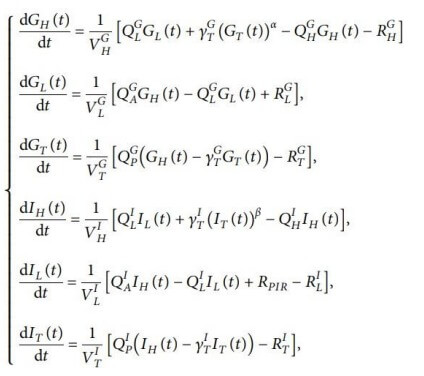
Figure 2: Here is a mathematical model for some fluids
in a healthy human body: insulin, glucagon, and glucose.
There are 6 ODEs of 4 compartments
[16].
The advancement of the algorithms and the complexity to
improve the CLS performance in realistic situations was a
central part of the CLS and AP technology. Moreover,
designing the algorithms of AP, scientists' main goal was
creating an artificial pancreas that mimics the
performance of a natural one.How does a natural pancreas work? This question was
critical for improving algorithms in an artificial
pancreas. Scientists have studied the human pancreas for
many years and quantitatively simulated its function using
various methodologies and complexity levels. The
mathematical model created by Banzi, and coauthors is one
of the most trustworthy models (shown in Figures 2 and
3).We know that a model like that may look quite confusing
or intimidating, but it is not. It represents the
concentrations of the two hormones related to the level of
glucose in the blood, insulin and glucagon, and the
resulted concentration of glucose. The model consists
mainly of a system of 6 Ordinary Differential Equations
(ODEs) for four Figure 1: CLS is considered as one of the
most promising devices for patients with Type 1 Diabetes,
it consists of an insulin pump (the small cuboid-like
apparatus) which may have the control algorithm inserted
in it, a CGMS (the pieces at the bottom-right), and a
communication device to enable doctors and experts to
watch the device and patient state
[11] .7compartments or parts of the body: heart and lungs,
liver, other tissues, and pancreas.
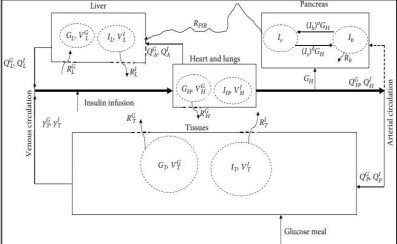
Figure 3: Here is a schematic representation of a
diabetic person according to Banzi and coauthors’ model
[16] .
An ODE is an equation in which you want to find a
function of (usually) time for an object. Therefore, we
want an equation. If we input a value of time, we get the
desired object value. In this case, it is the
concentrations of the hormones and glucose in the blood.
In an ODE, we determine the equation for the function
using the relation between it and its instantaneous rate
of change (known in mathematics as “derivative” the
d/dt).Here is a brief list of the notation used:Variable: V : Volume (dl) G : Glucose
concentration (mg/dl) I : Insulin concentration (mU/l) Q :
Vascular blood flow rate (dl/min)Subscripts: H: Heart and lungs L: Liver T: Tissues
A: Hepatic artery PIR: Peripheral insulin release s:
Stored insulin b: Labile (variable) insulin G: Glucose I:
Insulin Γ: GlucagonParameters: R - γ - p - α - δ - σ - β
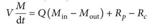
In general, the balancing mass equation for glucose,
insulin, and glucagon takes the ODE form:
V: Compartment volume
M: concentration
Q: blood flow rate
Rp, Rc: Metabolic production and consumption rates
While developing the artificial pancreas, scientists and
engineers certainly were inspired by the systems of
equations modeling the natural pancreas secretions
behavior. However, it is impossible to use these systems
because they model the “behavior” of the pancreas that
they are not instructions that can be followed. Also,
artificial pancreas systems cannot always measure the
concentrations of the hormones and glucose accurately and
instantly. Subsequently, prediction models and
error-correcting algorithms are necessary to supply the
human body with stable glucose rates, and that’s where the
importance of the control algorithms comes
[14].
iii. The Main Algorithms in the CLS
Many algorithms are frequently used in the CLS control
devices. In addition, algorithms can be implemented in
different ways. They are just principles. There are three
main types of algorithms, Model Predictive Control,
Proportional–Integral- Derivative, and Fuzzy Logic
Control: Here, we will present these main strategies and
algorithms involved in technology.
Model Predictive Control (MPC):
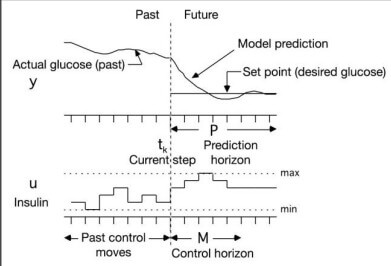
Figure 4: Here is a basic demonstration of the MPC
concept, a set point is determined, and the algorithm
uses past moves and the prediction horizon information
in addition to the CGMS to optimize the insulin
infusion rates to keep glucose levels in the desired
range
[17].
The MPC depends on a model used to predict the effect
of controlled moves (decisions) in discrete-time periods
(steps) on future glucose level output. Then,
optimization is performed to select the best movements
that make the glucose level in the desired range while
maintaining a set point (target).The mathematical models used in MPC can have many
forms, but the normal formulation includes continuous
Ordinary Differential Equations. These equations can be
linear (represented as a combination of straight lines
or nonlinear) At each step, integration (finding
anti-derivatives) or solving the equations based on the
current-state values is necessary Linear ODEs can be
solved analytically and have closed-form exact
solutions, while nonlinear ODEs solutions are
approximated, but they often perform better
optimizations. (as shown in figure 4).
The parameters used in the system of ODEs can be fixed
or adaptive, while adaptive values may sound promising.
They must be applied with care because they may result
in unstable systems.Correcting the model according to the measurements
differs from predictions. It treats the difference
between the measured output and the model prediction at
the current step as a constant. The correction happened
only after the prediction. However, better approaches
that make smart but more complex corrections like the
Kalman filter.
[18]A study was performed on six adults in 2014 to test the
efficiency of the MPC and its ability to reduce
postprandial (after lunch and dinner) glucose
excursions. During the study, the patients wore a DiAs
platform. It is a portable system that communicates
wirelessly with the sensor and insulin pump and has a
control algorithm. DiAs streamed the patient data, and
the team involved in the protocol remotely monitored the
status of the patients and the devices. The study lasted
for 42 hours. The results were satisfactory compared to
the conventional Open-Loop System (OLS) involves taking
insulin boluses for meals:
Time in the desired range: 94.83% vs. 68.2%.
Time in hypoglycemia: 1.25% vs. 11.9%.
Overnight Time in the desired range: 89.4% vs. 85.0%
Time-in-hypo: 0.00% vs. 8.19%, where the first
percentage is for the CLS and the second one for the
OLS
[19] .
Proportional-Integral-Derivative (PID):
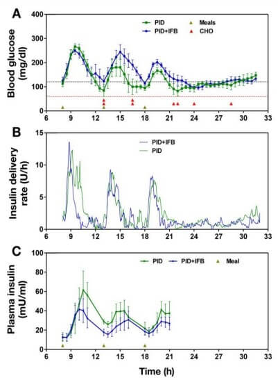
Figure 5: A Comparison between an AP with PID only and
thatwith PID + IFB. Black dashed line indicates BG
target (120mg/dl); red dashed line indicates
hypoglycemic threshold (60mg/dl); target range: (70
180) mg/dl. Brown triangles representmeals, and each
red triangle indicates a single hypoglycemicevent
[23] .
PID is an algorithm that operates by tracking theerror
between the measured output (ProcessVariable-PV) and the
setpoint (SP) in each step(as shown in figure 5). Then,
it computescorrection values. It measures mainly three
valuesand adds them to have a sense for error
correctionand decision-making:The error percentage value (proportional) – Theerror
area between the curve of the PV values overtime and SP
(Integral) – The rate of deviation ofPV from SP. PID has
a general form of:
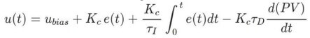
u(t) is a function of time that represents the
algorithmcontrol variable. Kc is the controller gain
constant. Itdetermines the percentage of the strength
gained bythe error signal. A Higher Kc value will lead
to moreaggressive correction behavior.u bias is a constant set to the control
variable valuewhen the control is switched from manual
toautomatic mode to provide a smoother
transition,especially when the error value is low.e(t) = SP − PV, τI, and τD are the integral
andderivative terms. Respectively, High values of τI
willcause the integral part action to have a weaker
effecton the algorithm. In contrast, high values of
τDstrengthen the effect of the derivative side.
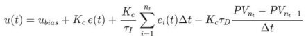
Since the CLS can’t have continuous
feedback,discrete-time steps must be used in
calculations
[20] , and the average is taken from each step, which canbe
modeled as:
Despite PID being a widespread and very usefulalgorithm,
it fails to moderate the large glucoseexcursions after
meals (early hyperglycemia and latehypoglycemia) because
of the dependence in PID ononly real-time changes in the
glucose sensor.
[21]
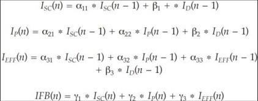
Figure 6: The system of equations used for the IFB
modification
[23].
One of the recent solutions to this problem is
InsulinFeedback (IFB) modification. It is based
onexperiments that illustrated that plasma insulin
suppresses its secretion
[22]. IFB accounts for theinsulin delivery history and
reduces the next insulindelivery based on model
predictions for thesubcutaneous, plasma, and
interstitial insulin levels,instead of depending solely
on real-time sensors datawhich has a time lag because of
using SC systems.IFB’s equations system has the form (as
in figure 6).
ISC, Ip, and IEFF are estimates of real-time
glucoselevels. ID is the insulin delivery value, and
(n-1)denotes an estimate 1 min previously. α, β and γ
areparameter values determined, and the subscriptsdenote
the parameter insulin type or the order.In 2012, a study was done on four subjects aged1528 years
to determine the effects of the IFBmodification. The
performance of PID combinedwith IFB was compared with that
of PID alone. TheMedtronic Closed System and its PID
algorithmwere used in the study. In addition, the
algorithmcalculations were calculated by a laptop
computerthat received data each minute from the GCMS
andsent corresponding commands to the insulin pump.The
study data has taken 24 hours in which no snackswere
allowed, and the patients had their meals withno
announcements given to the system controller.No episodes of hypoglycemia took place during thePID +
IFB control time as opposed to 8 under PIDonly time. Six
of them happened in 3-5 hours after ameal. PID control
tended to a higher frequency ofblood glucose levels under
the target range (< 70mg/dl) contrasting the tendency of
PID + IFB controlto achieve glucose levels above the range
(> 180mg/dl). The problem may be solved by using
“moreaggressive” tuning parameters that can reduce
theduration of high glucose levels. It is worthmentioning
that this study used the same controllergain constant
while other studies increased it by afactor of 2 to negate
the steady-state effect that IFBcause. The results graph
was obtained, and it appearsin figure 6
[23] .It supports that the IFB modification in decreasingthe
excursions of glucose levels (except duringdinner) and was
able to decrease the hypoglycemiarisk. Besides, achieving
more stable rates, avoidingboth hypoglycemia and
hyperglycemia.
Fuzzy Logic Controller (FLC):
Fuzzy Logic (FL) is an algorithm that isfundamentally
distinct from other algorithms. Otheralgorithms use
precisely formulated mathematicalmodels for calculations
to make decisions. FLdepends on linguistic rules and human
experience todetermine the solution to a problem. The
differencebetween traditional model-based algorithms and
FLis that FL assigns values (probabilities) between 0and 1
for inputs. Giving an output according toprobability
instead of using only false “0” and true“1” in what is
known as “Boolean Logic”For instance, if the range of normal glucose levelswas
set to be (70 – 180) mg/dl, a Boolean Logicalgorithm would
treat 182 mg/dl as being strictlyhigh and would take
decisions like that for a glucoselevel of 270 mg/dl. FL is
a more “natural” algorithmsince it usually operates like
our thinking, althoughone drawback is that it requires a
lot of data and predefined rules to work
[24].
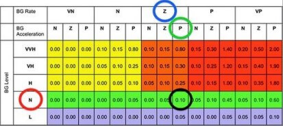
Figure 7: FLC uses a set of rules tolerant of small
deviations ofvalues. Here N, Z, and Prefer to
negative, zero, and positive. L,N, and H mean low,
normal, and high, respectively with Vdenoting "Very".
The FLC will evaluate the value (state) ofeach term
and output the number bounded by these states
(blackcircle)
[25] .
In FL, a value may belong partially to more than oneset
and can be useful in the AP case since it isimportant to
stay in a safe range rather than lookingfor a strict
solution. FLC in AP has three terms orsets: glucose
level, glucose rate, and glucoseacceleration (rate of
glucose rate). These setssimulate the reasoning of
expert diabetes clinicians.A design for an FLC algorithm
is (as shown in figure 7).You may think that an algorithm like FL would beless
reliable or efficient because of its tolerance withrules
and ranges, but it is a very robust algorithm
andchallenges both MPC and PID in performance, andFLC
has a great capability of incorporatingphysiological
parameters like illnesses, anxiety, andexercise. Unlike
other algorithms, it is highlycustomizable and designed
to emulate humanthinking and experience.
Figure 8: A graph showing the blood glucose levels
throughoutthe 24 hours in one of the study subjects.
High stability in theglucose levels is noticed and no
hypoglycemia orhyperglycemia is recorded
[25] .
Seven subjects were recruited and enrolled in a24-hour
research study in 2013 to test FLC for usein AP, and the
results were very pleasing. Theglucose levels stayed in
the target range (70 – 180)mg/dl 65.0% of the time, and
76.3% of the time ifwe extended the range to 200 mg/dl
FLC was ableto completely avoid any hypoglycemia
glucoselevels with a time percentage of 0.1% under
70mg/dl and 0.0% under 60 mg/dl (hypoglycemialevel) and
showed a great ability to avoidhyperglycemic events with
the glucose levelsbeing only 0.1% in the hyperglycemia
eventsrange with them lying mostly in the period
from8-pm to 2-am
[25] . (As shown in figure 8)
V. Comparison, Which Approach is Better?
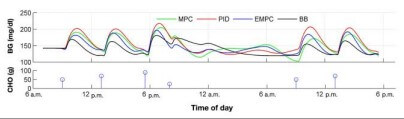
Figure 9: A representation for the average performance
of thepopular algorithms' controllers over 9 simulated
subjects. MPCis a standard Model Predictive Control
implementation, PID isfor an ordinary
Proportional-Integral-Derivative control,EMPC is a
multiple model probabilistic MPC, and BBrepresents
optimal Basal-Bolus
[17].
The research on AP algorithms in the last decadeshas
shown great diversity in the methods used toachieve
glucose stability from conventional mealboluses to
automatically operated and advanced insulin delivery
systems. Also, many algorithmswith MPC, PID, and FL as
examples have beenintroduced in that field. Thus, what is
the bestmethod or algorithm?Scientists and researchers have always consideredthis as
a tough question, as there are a lot of factorsthat cause
problems for any answer presented. First,all the discussed
algorithms can be applied indifferent ways with different
results.A graph like that shown in Boquete's paper,
whichdiscussed the approaches used (figure 9), can helpto
get primary data about the efficiency andcapability of the
approaches, using them forcomparison purposes can be
misleading becauseeach algorithm has no unified tuning or
parameterization.
MPC ODEs can be very complicated or relativelysimple. The
gain constant in PID can have differentvalues.
Modifications like IFB and FMPD (fadingmemory proportional
derivative) can be executed tomodify the behavior of
PID.On the other hand, FL depends mainly on theexperience of
the person defining the operationrules. Boquete, a strong
MPC proponent noticedthat and mentioned it explicitly at
the end of hisdiscussion: “I also agree that it is very difficult,even in
simulation studies, to have a validcomparison of
different algorithms. One way oranother, an algorithm
must be tuned based on someperformance criterion, so if
particular MPC andPID algorithms are tuned with
different criteria,then there is no good way to compare
them.”
[17, p.
11].
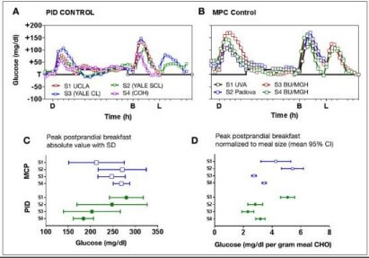
Figure 10: 4 Studies [26 − 29] that show more stable
glucoserates in PID control compared to the rates in MPC
control, S(x):study no. (x). UCLA: University of
California, UVA:University of Virginia, BU/MGH:
BostonUniversity/Massachusetts General Hospital, COH:
City of Hope. CL: closed-loop, SCL: semi-closed loop,
SD: standard deviation; CI: confidence interval: CHO,
carbohydrate.
A case for the difference in results obtained dueto
inconsistent conditions is presented by Garry M. Steil,
Bequette’s colleague, and a PIDproponent, and shown in
figures 10 and 11.However, the algorithms' fundamental propertiescan
determine the merits and demerits of eachalgorithm, give
engineers and clinicians a goodimage of it. For instance,
MPC is a generalframework that has additional inputs or
variablesincorporated in a standard MPC model. Besides,the
objective can include the desired insulin-onboard range,
which continues to have pharmacodynamic effects for
several hours in theprediction horizon.Nevertheless, the main problem concerning MPCis that some
of the model parameters, particularlythose responsible for
decreasing basalrequirement need to be identified from the
controldata and must be used in the control algorithm.
So,increased amounts of data points (at least equal tothe
number of model parameters) are necessary toidentify the
parameters and keep the sensitivity ofthe estimates
adjusted
[31] .
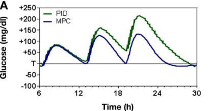
Figure 11: A model simulation in which an MPC control
iscompared to a PID one. In contrary to the previous
studies, theMPC glucose rates appear to be more stable
than that of PID
[30].
The disadvantage in MPC is that forms with agreat number
of equations (high order) result inlonger computational
times and more batteryenergy consumption. While discussing
PIDcontrollers, it is agreed that they are popular,known
to be robust due to their integral action.They often have
parameters that can be tunedother than the three standard
ones, such asabsolute and rate limits, anti-reset
windupfeatures, and derivative filters [17]. Also, PID
canbe modified with many algorithms that improveits
performance and like IFB and FMBD.FL is a simple but reliable algorithm, andapplying it
affects glucose rates that are almostalways in the desired
range. Also, FL is highlycustomizable and emulates human
deductivethinking quite well, but FL is dependent
onexperience. It can be subjected to mistakes
andnon-optimal performance as the humanexperience is not
perfect by nature. Also, FLrequires large amounts of data
so that the rulescontain and can define every possible
glucose andinsulin state (inputs) and its respective
controlaction (outputs)
[24]Subsequently, what is the answer to the question
withwhich we started this section? Well, a
definitiveanswer for this question in the meantime might
notbe currently available due to the parametric
andstructure uncertainty problems found in any
recentcomparison study. Although using standards
thatclinicians can agree on may reduce the severity ofthis
problem. But I think that the question that we can answer
and may represent the present and potentiallythe future of
research objectives is: how can thealgorithms we use and
the AP, in general, beimproved? The answers to this
question are in thenext section.
VI. Results
According to a 6-month trial by the National Institute of
Diabetes and Digestive and Kidney Diseases. It was testing
the CLS on the Diabetes type 1 patients for targeting
glycemic range.During the trial, patients who utilized the closed-loop
device had lower glycated hemoglobin levels. The
closed-loop system had beneficial glycemic effects during
the day and at night, with the latter being more
noticeable in the second half of the night. The glycemic
advantages of closed-loop management were observed in the
first month of the study and lasted for six months. The
study population included both insulin pump users and
injectable insulin users spanning a wide age range (14 to
71 years) and baseline range of glycated hemoglobin levels
(5.4 to 10.6 percent), with similar results across these
and other baseline features of the cohort.Patients had to be at least 14 years old and have a
clinical diagnosis of type 1 diabetes; they also had to
have been treated with insulin for at least a year using a
pump or several daily injections, with no restriction on
the glycated hemoglobin level. The experiment included a
2-to-8-week run-in phase (the length of which depended on
whether the case had before used a pump or constant
glucose monitor) to gather baseline data and teach
patients how to use the devices.The use of a closed-loop system was linked to a higher
percentage of time spent in a target glycemic range than
the use of a sensor-augmented insulin pump in this 6-month
experiment, including type 1 diabetes patients.
[25]
VII. Future Research
It is important to declare that a few problems and gaps
in the development of the CLS were not in the previous
studies and research. We will address these problems here
and introduce probable solutions for them:Inconsistent or ambiguous algorithm standards: a great
portion of the studies not mentioned in detail. The
implementation of the algorithm's methods in their
research design and methods section or even adhere to them
in some cases as the control algorithm may differ from the
simulation algorithm in a simulation study. Examples of
standards that should be well acquainted with are the
applied parameters tuning, the algorithm version used, the
number of steps, and their duration in the control and
prediction horizons in MPC. This consistency problem
causes inaccurate information and sometimes
underestimating an algorithm due to unfair methodology.
Clear information about algorithms and precise methodology
documentation should be a necessity in any study that
includes experiments whether they are on real subjects or
simulations.Not enough / inadequate data: A major problem with
regards to the research done on AP till now is the eminent
lack of experiments on real subjects. Most of the studies
of AP made so far have included 7 – 10 persons at maximum.
In addition, the scarcity of experiments. It might be
surprising that the first outpatient study made based on
MPC was reported in 2014. Absence of diversity in the
studies made because they are usually made in North
America on adult North American patients. Diversity in
characteristics of subjects plays an important role as a
factor to ensure that a medical procedure is suitable and
beneficial for a wide range of people and conditions.
Unfortunately, a device like AP may not work well and
provide desired stable glucose levels for Asian
children.Diverting attention to AP studies, increasing their
number as well as widening the health conditions, and
geographical range of them will lead to the accuracy of
the information available.Possible improvements for the algorithms: Although
the algorithms used in the AP CLS have greatly improved
and got better since the CLS's first introduction in 1964,
they are still not close to being perfect, and there is
still definitely a place for improvement.Taking PID as an example, a deviation measure with its
specific experimentally obtained parameter can be
introduced to the algorithm along with IFB to favor
staying in the target range overachieving smooth glucose
changes to avoid nocturnal hypoglycemia and hyperglycemia.
The added existence of the IFB modification is essential
to provide data about the insulin delivery history and
make predictions for the insulin and glucose levels to
allow the deviation measure to function efficiently.
Research on introducing a deviation measure may provide
valuable insight into the potential of this
modification.A possible suggestion concerning FLC is developing a
mobile application that connects the FLC database in the
AP with the clinician computer and provides regular data
about the insulin and glucose levels history. This app can
allow the clinician to communicate with the patient and
keep an eye on his condition wirelessly. The interesting
part is that FLC is highly customizable and operates like
ours using linguistic rules. The app could achieve a
special benefit as it allows the clinician to monitor the
patient status and modify the operation rules of the FLC
through his computer according to the patient individual
statistics and update them to be adjusted to the patient's
needs. Such a mobile app can increase the efficiency of
the algorithm and facilitate the communications between
the clinician and the patient and between the clinician
and the FLC. The app may attain pleasing and useful
results.
VIII. Conclusion
For years, scientists have studied the natural pancreas
and have been able to mathematically simulate its function
using various methodologies and complexity levels. The
mathematical model created by Banzi and coauthors is one
of the dependable and not overly complicated models.
Scientists' primary objective in developing the algorithms
of the closed-loop system was to create an artificial
pancreas that performs similarly to a natural one. Because
of the high potential benefits of the closed-loop system,
we decided to review it. Moreover, it has been the subject
of several studies and tests. It consists of an insulin
pump (the small cuboid-like apparatus) that may have the
control algorithm inserted, a GCMS (the pieces at the
bottom-right), and a communication device that allows
doctors and experts to monitor the device and patient's
condition. However, the development of algorithms and the
addition of complexity to increase CLS performance in
actual settings was and continues to be a key component of
CLS and AP technologies. According to the volunteers that
used the CLS, they completely forgot that they have
diabetes, and the results were unexpected on the other
hand, CLS has few problems and gaps, so we reconsidered
these problems and find solutions to increase the
efficiency of the project. AP aims to change the life of
the patients mentally, psychologically, socially to make
about half a million people get their work done without
any suffering.
IX. References
The advancement of gene therapy conjures up the hopes of
treating psychiatric disorders
Ahmed Essam (STEM High School for boys 6th of
October) Mennatullah Helal (Al-ferdous Governmental
Distinguished Language School) Mentor:
Radwa El-Ashwal (STEM High School for Girls - Maadi)
AbstractGene therapy is a potential treatment of many incurable,
lethal, and chronic diseases as psychiatric disorders.
Competing with other kinds of medications, gene therapy
-also known as gene alteration- has been seen as a
prospective therapeutic solution as genetics contributes
intensively to the origin of many disorders. The emergence
of gene therapy was accompanied by controversial arguments
about its unknown side effects and effectiveness that
impeded the development of gene therapy. After a lot of
experiments on mice and deliberate research in the world of
genomics, the first genetic therapy on the human body was
conducted on a young girl who was diagnosed with a rare
genetic disorder in 1990. The treatment went successfully,
and it has spurred the implementation of gene therapy in
numerous health issues. Among many diseases that can be
treated using gene therapy, psychiatric disorders are the
most prominent as they are profoundly affected by gene
defects. Depression, Bipolar, Alzheimer’s, and OCD are
examples of mental issues caused by defections in certain
genes.
I. Introduction
For therapeutic purposes, genetics would be an effective
solution. Gene therapy is the modification or manipulation
of the expression of a certain kind of genes inside the
cell body to change its biological behaviors to cure a
specified disorder. But what makes biologists think of
using genetics instead of using familiar medications such
as pharmaceuticals?The reason is that genetics have a profound, direct
contribution to most diseases -genes can mutate during the
growth of the body, and genes could be missed from the
moment of birth also. Such genetic problems could disrupt
a chronic health issue.Gene therapy presents a promising attempt to treat
different diseases such as leukemia, heart diseases, and
diabetes. Also, gene therapy could be used to improve the
immunity of a body during its fighting with immune
destructive disorders like HIV
[1].
II. Gene Therapy Overview
Gene therapy has erupted from the late 1960s and the
beginning 1970s when the science of genetics was
revolutionized. In 1972, Two genomics scientists Theodore
Friedmann and Richard Roblin issued a paper named “A Gene
therapy for human genetic disorders?”; their paper was
pointing out that a genetic treatment is a potential cure
for patients with incurable genetic disorders by merging a
DNA sequence into a patient's cells. The paper encountered
much disapproval as the side effects of gene therapy were
unknown at that time. However, after deliberate research
and experiments, in 1990 the first gene therapy trial on
the human body went successfully. The therapy was
conducted on a young girl who was diagnosed with a
deficiency of an enzyme called ADA, making her immune
system vulnerable, and any weak infection could have
killed her. Fortunately, that trail has paved the way for
gene therapy to flourish as a treatment among other types
of medications.
III. Gene therapy vs genetic engineering
A renowned misconception is that people think that gene
therapy and genetic engineering are synonymous;
nonetheless, they are different technologies. Gene therapy
is a technique that aims to alter the DNA sequence inside
malfunction cells to cure genetic defects. On the other
hand, Gene engineering is used to modify the
characteristics of a certain gene to enhance its
biological functions to be abnormal. Genetically Modified
Organisms are an obvious example of genetic engineering
products. For illustration, the advancement of
biotechnological techniques enabled scientists to develop
a kind of modified cultivated products with certain
abilities to cope with human needs such as a plant with
less need for fertilizers and more prolific outcomes
[3].
IV. Gene therapy stages
You might have imagined gene therapy as the injection of
the patient with a syringe that has a gene to simply
substitute the flawed gene inside the cell. Mainly that
thought is right, however, the process is not that
easy.
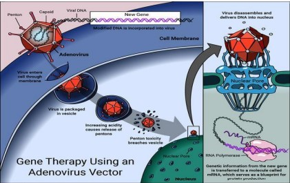
Figure 1: how the vector enters the cell’s nucleus
Before we would insert the isolated, intended gene inside
the body, we must know a new agent called Vector. As we
know, we aim to change an abnormal gene inside a cell by
entering a new gene but inserting the gene directly into
the cell always tends to fail. Therefore, scientists
looked for a carrier that would insert the gene
successfully into the cell. Vectors are a carrier that
would infuse with the cell and release its genome,
inclusive of the required gene inside the targeted cell.
The most used vectors are Viruses because they can easily
fuse with cells and inject their genome inside them.
Despite the bad reputation of viruses, engineered modified
viruses are not harmful to the body.The way of how the viruses interfere with the cell
depends on the kind of that virus. For example, Retrovirus
fuses with the cell and integrates its genetic components
inside the cell‘s chromosomes. On the contrary,
Adenoviruses eject their components but without
integrating them into chromosomes.
There are some other ways of injecting the body with
vectors such as taking the cell outside the body and
injecting it artificially with the vectors then returning it
to the body
[4].
V. Types of genetic therapy
There are two types of genetic therapy: somatic therapy
and germline therapy. Somatic therapy is inserting the new
gene in a somatic cell (cells that do not produce sperms
or eggs). Somatic therapy does not ensure that the disease
will not appear in successive generations, and it requires
the patient to take it several times as its effect does
not last long. On the other hand, germline therapy targets
the reproductive cells which produce gametes that later
develop into an embryo. Germline therapy occurs one time
in life. It happens either in pre-embryo to treat genetic
defects or it is used to treat a flawed adult sperm or egg
before entering the fertilization process
[5].
VI. Genetic therapy and psychiatric disorders
The productivity of individuals within their society is
determined by their mental conditions. If they suffer from
a mental issue, they will not behave well in their
routines. Psychiatric disorders are a psychological and
behavioral defect that causes disturbance in the
functions, feelings, and perceptions of the brain. Ranging
from sleep troubles to Alzheimer's, psychiatric disorders
have many different forms, such as Depression,
Schizophrenia, Bipolar disorders, and development
disorders like ADHD
[6].
Neuroscientists and researchers say that there are many
factors attribute to the causation of chronic Psychiatric
disorders. They classified those factors into two groups –
minor factors and major factors. Minor factors, such as
environmental and social influences, contribute less than
those of the major factors
[7] .Among many major contributors to psychiatric disorders,
Genetics(heredity) is the most notable factor in all
mental illnesses. According to advanced studies of
genomics, Psychiatric disorders tend to be heritable, and
mentally defective parents’ offspring have a high
susceptibility to receive a mental illness. Etiology, the
science of causation of a disease, has shown that both
Depression and Bipolar disorders have profuse genetic
origins
[8]. Depressive disorders have about 30-40% genetic
contributions
[9] .
VII. What makes gene therapy the expected future approach
for most of the psychiatric disorders?
Despite the continuous research and advances in medical
treatment methods for various psychiatric conditions, a
large number of patients remain unresponsive to current
approaches. Development in human functional neuroimaging
has helped scientists identify specific targets within
dysfunctional brain networks that may cause various
psychiatric disorders. Consequently, deep brain
stimulation trials for refractory depression have shown
promise. With the procedure and targets being advanced,
that helped scientists use similar techniques to deliver
biological agents such as gene therapy.Identification of specific molecular and anatomic targets
is important for the development of gene therapy. In gene
therapy, the vehicles used to transfer genes to the
neurons in the brain are modified viruses, called viral
vectors. Viruses have the ability to transfer their
genetic material to the target cells. That enables viral
vectors to take advantage of that ability. The viral coat
of the vectors is able to deliver a payload with the
therapeutic gene efficiently while decreasing the proteins
or viral genes that might cause replication and spread of
the toxicity or inflammation of the virus.
[11]
Depression
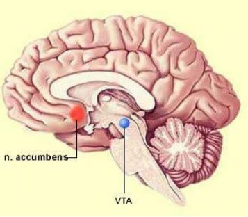
Figure 2: A human brain picture with labeled nucleus
accumbens.
[19]Neuroanatomic substrates and circuits of depression
remain poorly understood although depression is one of
the most widely studied psychiatric diseases.[11]
Poor signaling of the neurotransmitter serotonin causes
depression. Serotonin is trafficked by p11 protein in
the living brain. The gene expresses a protein, which is
p11, that binds to the serotonin receptor molecules
carrying them to the cell’s surface and positioning them
to the neighboring cells.A neurosurgeon, at Weill Cornell Medical College in New
York, called Michael Kaplitt worked with Greengard and
other researchers on an experiment that tested gene
therapy’s ability to cure depression in mice. Firstly,
the researchers used a technique known as RNA
interference to block the expression of p11 protein in
the nucleus accumbens of two mice, which were known to
be linked to depression. Next, they injected a viral
vector, which carried the p11 gene, into the nucleus
accumbens of the mice lacking the gene. In the end, they
found that the viral vector helped undo the
depression-like symptoms in the mice.
[12]
Addiction
In 1998, Carlezon et al. showed significant results in
using gene transfer techniques to modify drugseeking
behavior in mice.[13]
Although the addiction to other drugs has been studied
well, we will talk here about cocaine addiction as an
example. Rats treated with a 5-HT1B agonist were found to
have reduced cocaine-seeking behavior. The reduced
cocaine-seeking behavior was blocked by the 5- HT1B
antagonist. But, at the same time, 5-HT1B agonist reduced
sucrose seeking in mice as well. Therefore, that indicates
that 5-HT1B agonist caused anhedonia or depression-like
behaviors in mice in addition to reducing cocaine-seeking
behavior.[11]
Recently, scientists were able to use similar methods to
modify ethanol intake in animal models targeting the
expression of the aldehyde dehydrogenase gene (ALDH2)
leading to a significantly altered alcoholdrinking
behavior.
[13]
OCD
OCD, also known as obsessive-compulsive disorder, is
present in 2% of the Earth’s population. It is
characterized by obsessions that lead to anxiety and some
behaviors could relieve this anxiety. It is a
heterogeneous disorder that cannot be identified by clear
biological symptoms or environmental causes. Sapap3 is a
protein that is expressed in high levels in the striatum.
In rodents, a deficiency of Sapap3 in the lateral striatum
produced an OCD-like phenotype. The lateral striatum is a
cluster of neurons in the basal ganglia of the forebrain.
Sapap3 KO mice exhibited OCD-like behaviors that were
alleviated by selective serotonin reuptake inhibitor
treatment.
[11]
VIII. Gene therapy and p11 protein in treating Depression
/Bipolar
Bipolar disorder and genetics
Bipolar disorder is a serious psychiatric disorder that
is also known to have a strong genetic component. Adoption
studies, segregation analyses, and twin studies have shown
that the possibility of developing bipolar disorder,
especially BP-1, is sometimes very high due to genetic
factors. The identification of a specific gene that causes
the bipolar disorder is difficult because it’s not related
to mendelian genetics, so it is more complex. Genome-Wide
Association or GWA have started using dense SNP maps, also
known as Single-nucleotide polymorphism, to study bipolar
disorder. SNP mapping is the most dependable way to map
genes because it is very dense. Baum et al used a
two-stage strategy, he started with 461 bipolar cases and
563 controls, and he showed significant findings in a
sample of 772 bipolar cases and 876 controls and found
evidence for novel genes linked with bipolar disorder,
including a gene for diacylglycerol kinase, which plays a
main role in the lithium sensitive phosphatidylinositol
pathway.[18]One of the major things that most people with bipolar
disorder experience is depression. Therefore, we can say
that reducing depression symptoms with gene therapy may
lead to significant alleviation of the seriousness of the
bipolar disorder.
What is p11 protein?
P11 is a kind of protein encoded by the gene S100A10. Its
function is the intercellular trafficking of the
transmembrane protein to the cell surface. Researchers
found out that mice with a decreased level of p11 protein
in their brains displayed a depression-like
phenotype.[14]
Moreover, they turned to the postmortem brains of 17
individuals, some of them had depression and others
didn’t. Finally, they discovered that the individuals, who
had depression, had lower levels of p11. Therefore, we can
say that p11 has a role in treating depression.[13]
Sucrose preference test and anhedonia in mice
Anhedonia is the inability to experience joy from
enjoyable activities and it is a symptom of depression.
Sucrose preference test or SPT is a protocol used to
measure anhedonia in mice. It was the reason why
scientists were able to diagnose mice with depression.
Therefore, they tested the injection of a viral vector
containing p11 protein to cure depression. Rodents are
known to naturally prefer sweet solutions when given a
two-bottle free-choice regimen with access to both sucrose
solution and regular water. However, when they experienced
depression, they did not show a preference for the sucrose
solution.
IX. Gene therapy pros and cons
Currently, gene therapy research has been ongoing for
decades. Researchers say that it could be used to treat
various diseases. However, they had to dive more into it
to discover its pros and cons.Gene therapy is sometimes better than other treatments
because it has many advantages. For instance, its effects
are long-lasting as the defective gene is replaced by a
healthy one. Therefore, that healthy gene is the one that
will be transferred to the offspring. Furthermore,
germline gene therapy can be used to replace incurable
diseases’ genes in gametes. That results in eradicating
genetic diseases such as Parkinson’s disease, Huntington’s
disease, and Alzheimer’s disease.Conversely, gene therapy has several cons. For instance,
it can go wrong because it is still under research. The
immune system response can lead to inflammation or failure
of the organ. In 1999, a clinical trial was conducted at
the University of Pennsylvania on an 18-year-old man, who
died at the end. In the clinical trial, the Ad5 vector was
used to deliver the gene for ornithine decarboxylase, a
deficient hepatic enzyme. An investigation by the
university showed that the man died due to a massive
immune reaction.[15]
Moreover, it can be much more expensive than other
treatments since it is a technologically-based therapy.
Accordingly, socioeconomic segregation would emerge as the
rich would be disease-free while others would be
suffering.
X. Enduring with gene therapy is tough because it has many
Ethical obstacles
Gene therapy: A double-edged sword
We must recognize that the power of gene therapy is not
limited to the cure or prevention of genetic diseases.
Many people support technologies that can avoid the birth
of a child with a genetic disorder such as Tay Sachs
disease, Down syndrome, or Huntington’s disease, although
this technology might result in aborting established
pregnancies. Questions about gene therapy have gone beyond
its ability to cure some defects. Some difficult questions
became broadly included such as:
What kind of traits will an infant have?
How much will economic forces affect the hiring or
insuring of individuals who are genetically at risk of
having costly diseases?
How much data can be secured if an individual’s genetic
information is stored on computer disks?
The human genome project is a research project about the
genes that structure and control functions in the human
body. The United States government has created a panel of
ethics experts to prevent the use of the knowledge for
harm. In fact, this project is similar to the early
research stages of nuclear science. Nowadays, nuclear
power is known to be a double-edged sword. Therefore, the
leakage of information about the human genome project may
lead to massive annihilation.[16]
Controversy against gene therapy
Critics assert that in a world that values physical
beauty and intelligence, gene therapy may be exploited in
a eugenics movement that promotes perfection. People with
mental retardation will not be allowed to reproduce. That
could lead to discrimination. The genetic profiles may be
known by potential members of society which will result in
the lack of privacy. Moreover, with the world valuing
strengths, this could make special capabilities necessary
for a person to be an active member of society. As a
result, high standards of physical beauty, intelligence,
and capabilities will be put which will result in
inequality.[16]On the other side, many scientists support the
development of gene therapy because it will benefit
humankind and will enable them to save many human lives
and alleviate their suffering.
Justice in the distribution of gene therapy
If gene therapy is shown to be effective and safe in
curing diseases, the rich will monopolize the treatment.
Additionally, it might be used for various reasons, other
than just correcting genes, such as controlling the traits
and gender of an infant. The presence of special
capabilities in a human would be normalized which will
lead to the preference of rich people with perfect
modified genes. On the other hand, middle and low-income
families will be under pressure to achieve perfection and
that will make them oppressed. In addition, they will not
have the opportunity to be treated with gene therapy
because it is going to be highly expensive.[16]
XI. Conclusion
As genetic diseases are increasing rapidly and may result
in chronic health issues, gene therapy would be one of the
most promising medications. In addition to its significant
success in curing diseases such as leukemia, heart
diseases, and diabetes, it was discovered that it could
contribute to treating psychiatric disorders. Various
psychiatric disorders were noticed to have a major genetic
component. As a result, research has been ongoing to find
whether gene therapy was scientifically appropriate to
treat psychiatric disorders or not. Several experiments
have been conducted on mice to measure the therapy’s
efficiency. Fortunately, these experiments have shown
promise.As the research has demonstrated, gene therapy has
numerous merits that can benefit humankind. Nevertheless,
it has many disadvantages that can result from the
reaction of the immune system. Additionally, critics
affirm that the therapy could go beyond correcting genetic
defects. So, ethical issues might emerge as genetic
information will not be secured and standards of special
capabilities will be put. That can prevent many people
from being active members of society.To conclude, gene therapy is a double-edged weapon,
however, further research on it will contribute to the
eradication of many serious diseases.
XII. References
Cardiovascular impacts with astronauts on Mars
Mohanad Elagan (STEM High School for boys 6th of
October) Fares Ayman (Obour STEM High School) Joyiriaa
Monier (Maadi STEM High School for Girls) Shahd Tamer
(Mansoura Secondary School for Girls) Mentor:
Youssef Elgharably (STEM Gharbiya High School)
AbstractFor centuries, humans desired to learn and explore outer
space, leave this planet, and travel for many years. In
recent decades, many steps have been taken in the right
direction. As a result, we have successfully conquered outer
space. However, the beginning was such a difficult step; as
a new frontier is developed, new problems loom over the
horizon. Many issues began to arise to oppose the projects
of space exploration. It cannot be said that all the
problems are associated with the space itself but rather
with humans. Because it is related to humans and their
health on other planets, medical issues remain the most
significant and most severe globally. Just one of these
issues is the cardiovascular system challenge. This research
is going to delve deeper into the potential risks of the
cardiovascular system and how it affects human life on other
planets. Furthermore, some helpful suggestions for resolving
the issue are provided.
I. Introduction
Africa was the origin of humanity. Nevertheless, we did
not all remain there—our forefathers travelled all across
the continent for hundreds of years before leaving. Why?
We probably glance up to Mars and wonder, "What is up
there?" for the same reason. Are we able to travel there?
Perhaps we could
[1]. There are several reasons to seek for a habitable
planet to live on in the future. One of the most crucial
reasons is the relationship between population growth and
global warming. Because the circumstances on Mars are
comparable and similar to those on Earth, astronauts
prefer to study it. Astronauts on distant worlds, like
Mars, face a range of difficulties. Medical problems are
the most significant of these difficulties. Radiation,
gravity (or lack thereof), fitness loss, and
cardiovascular effects are just a few of the obstacles
[2] . As a result, gravity has an impact on many components
of the cardiovascular system, including the heart.On Earth, the veins in our legs, for example, work
against gravity to return blood to the heart. The heart
and blood arteries, on the other hand, alter in the
absence of gravity, and the longer the flight, the more
severe the changes. With microgravity, the size and
structure of the heart, for example, alters, and the mass
of the right and left ventricles decreases. This problem
might be due to changes in myocardial mass and a reduction
in blood volume. In space, the human heart rate is also
lower than on Earth
[3]. During long-duration spaceflight, fluid changes and
ambulatory blood pressure decrease occur. Therefore, the
systematic development and assessment of possible remedies
have become a significant focus of space-related research.
The priority for cardiovascular risks included (i)
diminished cardiac function; (ii) impaired cardiovascular
autonomic functions; (iii) impaired cardiovascular
response to orthostatic stress; (iv) impaired
cardiovascular response to exercise stress; (v) ---;
Long-term cardiovascular deconditioning will need to be
addressed in the context of future Mars missions in order
to: (i) evaluate the efficacy of countermeasures and
optimize them in order to ensure the astronauts' safety;
(ii) improve and spread risk thresholds, especially for
physical activity after landing. Specific pharmacological
medications are meant to improve hemodynamic and autonomic
functioning, among other things. Furthermore,
spaceflight-induced alterations to the muscles and
cardiovascular system lead to a reduction in aerobic
fitness
[4]. Consequently, fitness exercise will be excellent advice
for avoiding minor problems from becoming major problems
such as cardiovascular and fitness difficulties.
The objective of this study is to offer an assessment of
potential risks to the cardiovascular system during space
flight based on a thorough analysis of published evidence.
Specific therapy of processes linked with cardiovascular
changes that lead to astronauts' operational performance
being impaired will be addressed.
II. Risks to the cardiovascular system during space flight
assessment
Diminished cardiac function
Experiments in orbit have shown that when astronauts
return to Earth, their stroke volume is considerably
reduced
[5
,
6,
7,
8,
9,
10]. Echocardiographic data revealed that a smaller cardiac
size was related to a smaller stroke volume
[6,
10]. Although space flight is associated with less cardiac
filling due to a reduction in circulating plasma and blood
volume, data from magnetic resonance imaging measurements
taken from four astronauts who participated in the 10-day
D-2 NASA space mission revealed an average 14 percent
reduction in left ventricular mass
[11] . These are the first human data to show a risk of
cardiac remodelling during space missions, affecting
myocardial function and reducing stroke volume.
Furthermore, ground simulation tests have shown that
decreased ventricular compliance might impair diastolic
function and affect heart-filling
[12].
Nevertheless, recent data from animal trials on the
ground and in space shows that smaller cardiac size merely
reflects the impact of negative caloric balance and body
mass loss that astronauts experience during space travel,
resulting in a constant heart mass to body mass ratio
[13]. Measurements of myocardial function curves before and
after the 84-day U.S. Skylab mission
[8], ejection fractions measured before and during the
237-day Russian Salyut-7 mission
[14], and arterial pulse wave velocities measured before and
during the Russian 23-day Salyut-1 and 63-day Salyut-4
missions
[8], regardless. The findings from the space mission likely
reflect the efficacy and significance of existing
intensive exercise countermeasures in maintaining normal
heart function. As a result, in the context of existing
effective exercise space flight countermeasures, the risk
of decreased cardiac function during or subsequent space
travel appears to be minimal.
Impaired cardiovascular autonomic functions
After microgravity exposure, autonomicallymediated
baroreflex systems that regulate cardiac chronotropic
responses and peripheral vascular resistance may adapt,
resulting in insufficient blood pressure regulation. Hypo
adrenergic responsiveness has been proposed as a
contributing factor to postflight orthostatic intolerance,
as demonstrated by a link between low blood norepinephrine
and lowered vascular resistance in astronauts before they
syncope
[15,
16]. Since sympathetic nerve activity, circulating
norepinephrine, and peripheral vascular resistance are all
increased in orthotactically stable astronauts after space
flight
[16], sympathetic withdrawal at the point of presyncope
[17 ,
16,
18], as well as blood sampling in the supine posture of only
the presyncope astronauts, may explain other than
hyperadrenergic responsiveness for lower circ. Presyncope
was linked to reduced cardiac vagal nerve traffic
withdrawal produced by carotid baroreceptor stimulation
during stand tests after simulated and genuine
microgravity
[18]. Although syncopal individuals' heart rates increased
with standing, their tachycardia was less than half that
of no syncopal ones. These findings were the first to show
that impaired carotid-cardiac baroreflex function can
compromise tachycardic mechanisms' ability to optimize
heart rate and, as a result, cardiac output while
standing. As a result, the reduction of
baroreflex-mediated cardiac chronotropic responses
produced by microgravity might pose a cardiovascular
danger by reducing reflex compensatory tachycardia
responses, which are required to maintain sufficient
cardiac output.
Impaired cardiovascular response to orthostatic stress
Since the U.S. Gemini program
[19] , orthostatic hypotension and compromise have been well
documented. Presyncope symptoms have been reported in 28
percent to 65 percent of mission specialists or scientists
studied during a stand or tilt test after returning from
specific life science space missions
[5,
16,
18]. Lower circulating blood volume, stroke volume, and
cardiac output, as well as a limited ability to raise
peripheral vascular resistance, have all been related to
astronauts' poor orthostatic performance during space
travel
[16 ,
18]. It's obvious that an astronaut's incapacity to stand
and conduct an emergency evacuation from a spaceship after
landing might be a life-threatening situation.
Consequently, decreased cardiovascular response to
standing after returning from space might be one of the
most serious threats to astronauts' safety, well-being,
and performance.
Impaired cardiovascular response to exercise stress
Human individuals subjected to ground microgravity
simulations have shown a substantial decrease in aerobic
capacity in many tests
[19] . More recently, after just 9 or 14 days in space, six
astronauts showed a 22% drop in aerobic capacity, linked
to a fall in stroke volume
[14]. It is also evident that decreased heart-filling, i.e.,
end-diastolic volume, affects reduced stroke volume during
physical labour in space
[20] . The reduced circulating blood volume level is
significantly linked with the percentage reduction in
maximum oxygen consumption following cardiovascular
adaptation to terrestrial micro-gravity simulations [19],
implying a close connection between blood volume and
cardiac filling. However, there is no indication in the
literature that a loss of 20% to 25% of aerobic capacity
during or after space flight has hampered operational
effectiveness.
III. Cardiac output to Mars
Gravity affects several components of the circulatory
system, including the heart. On Earth, the veins in our
legs, for example, struggle against gravity to return
blood to the heart. The heart and blood arteries, on the
other hand, change in the absence of gravity, and the
longer the flight, the more severe the changes.
With micro-gravity, the size and form of the heart, for
example, alters, and the mass of the right and left
ventricles decreases. This could be due to changes in
myocardial mass and a decrease in fluid volume (blood). In
space, the human heart rate (number of beats per minute)
is also lower than on Earth. In fact, it has been
discovered that the heart rate of astronauts standing
erect on the International Space Station is similar to
that of those resting down on Earth before takeoff. In
space, blood pressure is also lower than on Earth.
The heart's cardiac output — the volume of blood pumped
out each minute – diminishes in space as well. There is
also a redistribution of blood in the absence of gravity:
more blood stays in the legs and less blood returns to the
heart, resulting in less blood being pumped out of the
heart. Reduced blood supply to the lower limbs is also a
result of muscle atrophy. Because of the lower blood flow
to the muscles and the reduction of muscular mass, aerobic
capacity is impacted.
[20]
Cardiovascular Health in Micro-gravity
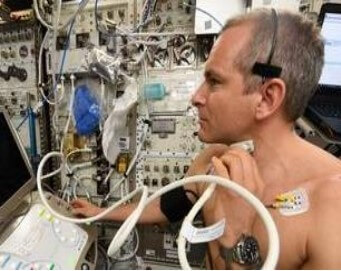
Figure 1: Canadian Space Agency astronaut David
SaintJacques performs an ultrasound for Vascular Echo,
one of three Canadian experiments in the Vascular
series, which study the effects of weightlessness on
astronauts’ blood vessels and hearts aboard the
International Space Station.
The cardiovascular gadget that consists of each
coronary heart and blood vessel has developed to perform
in Earth’s gravity whilst standing, sitting, or
mendacity down. Daily bodily hobby whilst running or
exercise towards gravity maintains the entirety flowing
smoothly. As quickly as astronauts arrive in
micro-gravity, and whilst they stay at the blood and
different frame fluids are pushed “upward” from the legs
and stomach towards the coronary heart and head. This
fluid shift reasons a lower quantity of blood and fluid
with-inside the coronary heart and blood vessels even
whilst astronauts enjoy swelling with-inside the face
and head. Because spending time in the area impacts the
human coronary heart and circulatory gadget, pretty a
chunk of studies performed aboard the distance station
seem at those results in each the short- and long-term.
Much of this study's ambitions are to increase and take
a look at countermeasures to cardiovascular
modifications. What we examine has vital packages at the
floor as well, as shown in figure 1, in component due to
the fact the various modification visible in the area
resemble the ones because of aging on Earth. Fluid
shifts skilled via way of means of astronauts for the
duration of prolonged micro-gravity missions on the
distance station have an effect on now no longer most
effective the cardiovascular gadget however additionally
the mind, eyes, and different neurological functions.
The obvious boom in fluid in the cranium is an idea to
boom mind stress, which can purpose listening to loss,
mind edema, and deformation of the attention referred to
as Spaceflight Associated Neuron-ocular Syndrome. [21]
In micro-gravity, the coronary heart modifications its
form from an oval (like a waterstuffed balloon) to a
spherical ball (an air-stuffed balloon), and area
reasons atrophy of muscle mass that on Earth paintings
to constrict the blood vessels, so that they can not
manage blood go with the drift as well. On go back to
Earth, gravity as soon as again “pulls” the blood and
fluids into the stomach and legs. The lack of blood
volume, mixed with atrophy of the coronary heart and
blood vessels that may arise in the area, reduces the
cap potential to regulate a drop in blood stress that
takes place while we stand on Earth. Some astronauts
enjoy orthostatic intolerance - difficulty or
incapability to face due to lightheaded and/or fainting
after go back to Earth. Exercise in the area is an
effective manner to hold maximum forms of cardiovascular
fitness. Equipment is to be had on the distance station
each for resistive sporting events the use of the
Advanced Resistive Exercise Device and cardio sporting
events the use of a treadmill or desk-bound bike, as
shown in figure (2).
Figure 2: ESA (European Space Agency) astronaut
Alexander G erst gets a workout on the Advanced
Resistive Exercise Device (ARED) in the Tranquility
node of the International Space Station.
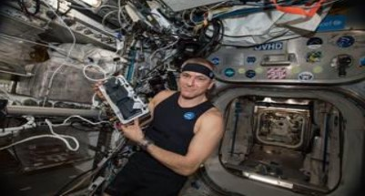
Figure 3: Canadian Space Agency astronaut David
SaintJacques wearing the Bio-Monitor, a Canadian
technology designed to measure and record astronauts’
vital signs. The Vascular Aging investigation uses the
shirt to collect data.
In addition, astronauts can put on unique trousers that
use stress variations to drag blood returned into the
stomach and legs. Important studies are being executed on
the distance station to examine extra approximately SANS
and to increase and take a look at countermeasures to the
numerous viable specific cardiovascular modifications.
This area station study has vital packages on Earth as
well, in component due to the fact the various
modifications visible in the area resemble the ones
because of aging or illnesses -- cardiovascular disorder
because of inflammation, loss of exercise, viable
intracranial hypertension, orthostatic intolerance, and
hormonal and metabolic modifications, as shown in
figure(3). Scientists are inspecting the underlying
cellular mechanisms at the back of many cardiovascular
structures modifications are now no longer most effective
in astronauts however additionally via way of means of the
use of version organisms, mobile cultures, and stem cells.
[22]
IV. Experiment
The radiation and low gravity of space also have an
impact on the body’s vascular system, causing circulatory
problems for astronauts when they return to Earth and an
increased risk of heart attack later in life:
Figure (4): In support of the Blood Pressure Regulation
Experiment (BP Reg), Chris Hadfield of the Canadian
Space Agency is pictured after setting up the Human
Research Facility (HRF) PFS (Pulmonary Function System)
and the European Physiology Module (EPM) Cardiolab (CDL)
Leg/Arm Cuff System (LACS) and conducting the first ever
session of this experiment.
Marlene Grenon, MD, associate professor of vascular
surgery, has long been interested in the effects of space
flight on the vascular system. “Astronauts are in great
shape, and training routines are a part of their daily
lives,” Grenon said. “As a result, we must recognize what
is taking place here. Is it a result of radiation?
Gravity? What other physiological considerations are
there?”. You Grenon researched the effects of simulated
microgravity on the morphology of vascular endothelial
cells, which line the interior of blood arteries. Grenon
has a degree in Space Sciences from the International
Space University and developed UCSF's first direction on
the influence of spaceflight on the body, as shown in
figure(4).
Grenon grew the cells and placed them in an environment
that approximated a very low gravity environment. She
discovered that a lack of gravity causes a decrease in the
expression of specific genes within the cells that affect
plaque adhesion to the vessel wall. While the effects of
these changes aren't entirely evident, it's known that a
lack of gravity has an impact on molecular features.Furthermore, previous research by Grenon revealed that
micro-gravity causes changes among the cells that regulate
energy flow within the heart, potentially putting
astronauts at risk for cardiac arrhythmia.In 2016, Schrepfer looked into the vascular architecture
of mice who had spent time on the International Space
Station, as well as vascular cells produced in
micro-gravity on Earth. Her team is still analyzing their
findings, but it appears that the carotid artery
partitions have thinned in mice in the location, maybe due
to the lower blood pressure required for circulation due
to the lower gravity.The researchers also discovered that the aesthetic cells
showed changes in gene expression and control that were
similar to those seen in patients with cardiovascular
disease on Earth.While those changes aren't harmful in the
microgravity of the Space Station, they have a deleterious
impact on blood circulation on Earth.When astronauts
return to Earth's gravity, muscle weakness is just one of
the reasons they can't get up, according to Schrepfer.
“They also don't get enough blood to their brain since
their vascular function is impaired,” says the
researcher.There is reason to be optimistic: Schrepfer and her
colleagues have discovered a tiny chemical that prevents
the weakening of vascular partitions in mice. She and her
team are planning to conduct protection experiments on
people on the inside in the near future.
[23][24]
Calculations attempts on mars
The floor gravity of Mars is simply 38% that of Earth.
Although micro-gravity is understood to purpose fitness
issues such as muscle loss and bone demineralization, it
isn't always recognized if Martian gravity might have a
comparable impact. The Mars Gravity Bio-satellite turned
into a proposed task designed to examine extra
approximately what impact Mars' decrease floor gravity
might have on humans, however it turned canceled because
of a loss of funding. Due to the shortage of a
magnetosphere, sun particle events and cosmic rays can
without difficulty attain the Martian floor.- Mars affords adversarial surroundings for human
habitation. Different technology had been evolved to help
long-time period area exploration and can be tailored for
habitation on Mars. The current file for the longest
consecutive area flight is 438 days via way of means of
cosmonaut Valeri Polyakov, and the maximum amassed time in
the area is 878 days via way of means of Gennady Padalka.
The longest time spent outdoor the safety of the Earth's
Van Allen radiation belt is ready 12 days for the Apollo
17 moon landing. This is minor in assessment to the
1100-day adventure deliberate via way of means of NASA as
early because the 12 months 2028. Scientists have
additionally hypothesized that many one-of-a-kind organic
features may be negatively laid low with the surroundings
of Mars colonies. Due to better tiers of radiation, there
may be a large number of bodily side-consequences that
have to be mitigated. In addition, Martian soil consists
of excessive tiers of pollutants which can be risky to
human fitness.- The distinction in gravity might negatively affect
human fitness via way of means of weakening bones and
muscles. There is likewise the chance of osteoporosis and
cardiovascular issues. Current rotations at the
International Space Station positioned astronauts in 0
gravity for 6 months, a similar period of time to a
one-manner experience to Mars. This offers researchers the
capacity to higher recognize the bodily country that
astronauts going to Mars might arrive in. Once on Mars,
floor gravity is simplest 38% of that on Earth.
Micro-gravity impacts the cardiovascular, musculoskeletal,
and neuronvestibule (critical nervous) systems. The
cardiovascular consequences are complex. On earth, blood
with-inside the frame remains 70% low the heart, and in
micro-gravity, this isn't always the case because of not
anything pulling the blood down. This will have numerous
bad consequences. Once moving into micro-gravity, the
blood stress with-inside the decrease frame and legs is
drastically reduced. This reasons legs to come to be
vulnerable via lack of muscle and bone mass. Astronauts
display symptoms and symptoms of a puffy face and chook
legs syndrome. After the primary day of re-access returned
to earth, blood samples confirmed a 17% lack of blood
plasma, which contributed to a decline of erythropoietin
secretion. citations and a lot of references to your
claims.
[25]
[26]
V. Pharmacological countermeasures
After such extensive experiments, both in space and on
the ground, it was determined that physical therapy should
target plasma or blood expansion, autonomic dysfunction,
and impaired vascular reactivity. This can assist in the
identification of the most appropriate countermeasures for
orthostatic and physical work performance protection.
Several practices included using agents such as
Fludrocortisone or any electrolyte-containing beverages
that can increase the amount of blood circulating
throughout the body. In more detail, betaadrenergic
blockers can be used to reduce the degree of cardiac
mechanoreceptor activation or to inhibit epinephrine's
peripheral vasodilatory effects. Furthermore, by
inhibiting parasympathetic activity, disopyramide can be
used to avoid vasovagal responses. Finally,
alpha-adrenergic agonists such as ephedrine, etilephrine,
or midodrine are used to increase venous tone and return
while also increasing peripheral vascular resistance
through arteriolar constriction.
[27]Scientists relied on specific experimentation and testing
of blood volume expanders and vasoconstrictors to test all
of those agents. Scientists were able to debrief that
consuming 8 g of salt tablets with 912 ml of fluid was
designed to make an isotonic saline drink approximately 2
hours prior to reentry in an attempt to restore blood
volume. This method was used for short-duration space
missions, but exposure to microgravity for more than seven
days did not yield the same results.After the saline drink failed to counteract the changes
that occurred after a few hours, the question became how
to maintain the body's state and treat orthostatic
hypotension for such a long time. Fludrocortisone has been
used successfully in the treatment of orthostatic
hypotension; it works by increasing sodium and fluid
retention as well as sensitizing alpha-adrenergic
receptors. As such, Fludrocortisone appears to be most
effective when taken over a period of days to weeks rather
than all at once.In a more controlled experiment, the goal was to compare
the efficacy of the saline regimen and Fludrocortisone as
countermeasures for reduced plasma volume and orthostatic
intolerance after spaceflight.
[28][29]The experiment was divided into two parts, the first
testing the saline regimen and the second the
Fludrocortisone. First, eleven healthy males were
subjected to six hours of head-down bed rest at a slope of
six degrees. Members were then divided into two groups.
The first group ate eight salt tablets and drank 960 ml of
water two hours before the ambulation. On the other hand,
the second group received 0.2 mg oral fludrocortisone at
0800 and 2000 h the day before and 0800 h the day the
subjects got out of bed (2 hours before standing). The
plasma volume decreased by 12% on day 7 of bed rest,
according to the findings. Fludrocortisone restored it,
but saline load did not. Despite a similar increase in
heart rate between the two groups, the saline loading
group experienced more orthostatic hypotension than the
fludrocortisone group. Finally, the use of Fludrocortisone
as a treatment for orthostatic intolerance was
discontinued. The α -agonist drug was recently used to
treat the same symptoms under the same conditions. Using
this type of drug on the same people produced better
results than the Fludrocortisone and saline regimen.
[30][31]
VI. Conclusion
Finally, it can be said that traveling into space is now
easier than ever, but the challenge now is determining how
to achieve the best results and keeping track of
self-health during space flights. As seen, medical issues
arising from the cardiovascular system are critical due to
their vitality in keeping the astronauts alive during
their missions. We have seen how differences in gravity
can lead to fundamental problems in space, such as changes
in the size and structure of the heart muscle, fluid
changes, and a drop in blood pressure. In addition to
several possible outcomes, an experiment was shown to
demonstrate how radiation and low gravity in space can
have an impact on the human body, as well as issues with
the cardiovascular system. Finally, using gravity
calculations between the Earth and Mars, the scientific
idea behind the medical problems is clearly proven. This
reveals the mysteries underlying those phenomena.
VII. References
BCI based games and Psychiatric disorders
Roaa Hany (STEM High School for Girls - Maadi) Ahmed Ayman
(STEM High School for boys 6th of October) Mohamed
Ahmed (STEM High School for boys 6th of October) Kathrine
Rezk (STEM High School for Girls - Maadi) Mentor:
Nabil Rateb (STEM High School for boys 6th of
October)
AbstractAs modern computers technology developed to understand
human brain signals, it’s great to use a computer system as
an output of brain signals. This developed technology is
brain-computer interface (BCI).A brain-computer interface,
sometimes called a brain-machine interface or a direct
neural interface, is a hardware and software communications
system that allows disabled people a direct communication
pathway between a brain and an external device system rather
than the normal output through muscles. After
experimentation, three types of BCI have been developed
which are Invasive BCIs, semi-invasive BCIs, and
Non-invasive BCIs that differ in their implementation place
of the brain. BCI is used in different applications such as
gaming applications that provide these disabled people with
entertainment depending on their brain signals as well as
its use in the medical field and the bioengineering one. In
addition, its usage as neurofeedback therapy contributing to
the treatment of psychiatric conditions such as ADHD and
anxiety.
I. Introduction
Attention deficit hyperactivity disorder (ADHD) is a
neurobiological disorder, characterized by symptoms of
inattention, overactivity, and impulsivity
[2]. ADHD is estimated to affect 5 % of children worldwide
[5]. While many Psychiatric disorders like ADHD have no
cure, advancement in gaming technologies in particular,
has had a long-lasting effect in treating patients with
these symptoms
[5] . The idea of incorporating gameplay as a new treatment
has shown great promise for patients with psychiatric and
cognitive disorders.
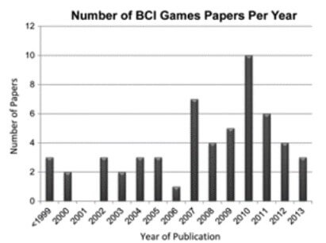
Figure 1: Number of BCI Games Papers Per Year.
Brain-computer interfaces (BCIs) have been integrated in
digital games since the beginning of BCI development
[6] . Researchers have been exploring the potential of
gameplay elements as a means of enhancing cognitive
functions. By providing the patients with an entertaining
environment, researchers hope to create more efficient
therapy for patients with psychiatric disorders, BCI game
therapy
[5]. Recently, BCI games have become increasingly popular
among many BCI research studies, with a large increase in
the number of studies within the last decade (Fig. 1)
[6] .
BCIs enable users to interact with a device through brain
activity only, this activity is measured and processed by
the system's several hardware technologies, among which
Electro Encephalo Graphy (EEG), Magneto Encephalo Graphy
(MEG) functional Magnetic Resonance Imaging (fMRI),
functional Near InfraRed Spectroscopy (fNIRS), Electro
Cortico Graphy (ECoG) and Subcortical Electrode Arrays
(SEA) have all been used for BCI research
[3]. Integrating these technologies into a gaming
environment will allow doctors to measure brain activity
and neural signals during therapy.
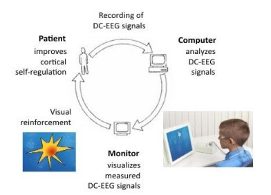
Figure 2: Recording EEG signalsBCI games have become progressively more advanced in
recent years, and have come to include 3-D environments,
multiple user objectives, and hybrid control systems
combining both conventional input devices and BCI systems
[6]. These advancements have opened the possibility to test
multiple paradigms during therapy. Neurofeedback (NF)
therapy (T), In particular uses BCI to enhance attention
and other cognitive abilities. The most commonly employed
NFT is based on surface EEG, as it is cost effective,
practical, and transportable
[3]. EEG-NFT (fig. 2) involves measuring neural signals and
guiding patients towards improved neural function:
patients observe a suitable graphical representation of
their actual brain activity, usually processed through a
computer, and learn to selfregulate this activity in order
to bring it to a desired state. Tasks involved in NFT are
repetitive and standardized. When the task is finished,
the system responds to the patient indicating they have
reached the required brainwave pattern. Several conditions
including attention deficit hyperactivity disorder (ADHD),
anxiety, epilepsy, and addictive disorders have been
treated using EEG-NFT, which shows the ability of BCI to
treat both neurological and psychological disorders
[3].
II. An overview of BCI
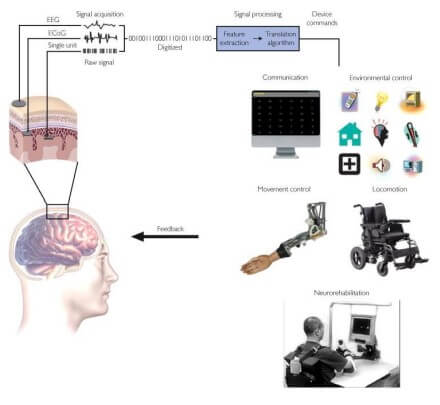
Figure 3: BCI loop and applications in different fields.
As modern technology advances and our understanding of
the human brain deepens, we are getting closer to making
some of science fiction's marvels a reality.Imagine having a real device that sends signals directly
to the brain to make a person see, or feel something as
soon as the person thinks about implementing this
command.The development of a brain-computer interface (BCI) may
be the most important invention that has occurred in
decades for people with severe disabilities.The "BCI" is called a brain-machine interface or a direct
neural interface. It works by transforming thought into
reality without requiring any physical effort. It is a
communication or association pathway between the human
brain and an external device.BCIs had been the recent development of HCI, but still,
many realms have to be explored. Following extensive
testing, three types of BCIs were developed: invasive
BCIs, partial-invasive BCIs, and non-invasive BCIs.Furthermore, BCIs have been used in a variety of
extremely useful applications.For example, it has been used in bioengineering
applications, where brain-computer interfaces have the
potential to allow patients with severe neurological
disabilities to interact and communicate with society
again, supporting them to break free from isolation as
well as move around and enjoy the scenic views.It also enabled quadriplegics or disabled people to play
computer games without exerting any effort; all they had
to do was think, and the BCI translated their thoughts
into actions in the game
[8] .Moreover, It used other fields like human subject
monitoring, neuroscience research, man-machine
interaction, military applications, and counterterrorism
[9].
III. Loop and components
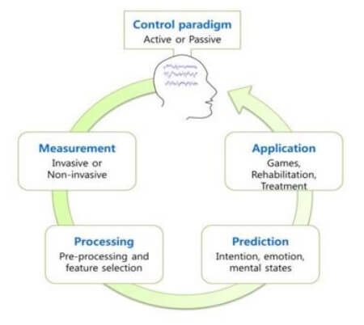
Figure 4: the closed loop of BCI.BCI is comprised of five elements that form a closed loop
on its framework, as shown in Figure (4).These are “Control paradigm”, “Measurement”,
“Processing”, “Prediction”, and “Application”
[10].The BCI interprets a user's intention or mental state
using these five steps and uses the information to run the
application. This closed loop between the user and the
application is repeated until the system is terminated,
with the four modules forming an interface between
them.
The following are the specifics of the BCI
elements:Control paradigm:At this stage, the user can transfer data to the system
by pressing a button with the appropriate function, or by
moving the mouse in traditional interfaces. However, BCI
necessitates the development of a "control model" for
which the user can be held accountable. For example, the
user may imagine moving a part of the body or focusing on
a specific object to generate brain signals that include
the user's intent.Some BCI systems may not require intended user efforts;
instead, the system detects the user's mental or emotional
states automatically. They are classified as active,
reactive, or passive approaches in terms of
interaction.Measurement:Brain signals can be measured in two ways: invasively and
non-invasively. Invasive methods, such as
electrocorticogram (ECoG), single microelectrode (ME), or
micro-electrode arrays (MEA), detect signals on or inside
the brain, ensuring relatively good signal quality.However, these procedures necessitate surgery and carry
numerous risks; thus, invasive methods are clearly not
appropriate for healthy people. As a result, significant
BCI research has been conducted using non-invasive methods
such as EEG, magnetoencephalography (MEG), functional
magnetic resonance imaging (fMRI), and NearInfrared
Spectroscopy (NIRS), among others. EEG is the most widely
used of these techniques.EEG is inexpensive and portable when compared to other
measuring devices; additionally, wireless EEG devices are
now available on the market at reasonable prices. As a
result, EEG is the most preferred and promising
measurement method for use in BCI games.Processing:The measured brain signals are processed to maximize the
signal-to-noise ratio and select target features. Various
algorithms, such as spectral and spatial filtering, are
used in this step to reduce artifacts and extract
informative features. The target features that have been
chosen are used as inputs for classification or regression
modules.Prediction:This step makes a decision about the user's intention or
quantifies the user's emotional and mental states.
Classifiers such as threshold, linear discriminant
analysis, support vector machine, and artificial neural
network are commonly used for prediction.Application:After determining the user's intent in the prediction
step, the output is used to change the application
environment, such as games, rehabilitation, or treatment
regimens for attention deficit hyperactivity disorder.
Finally, the user is given the predicted change in the
application as a response.
IV. BCI Applications
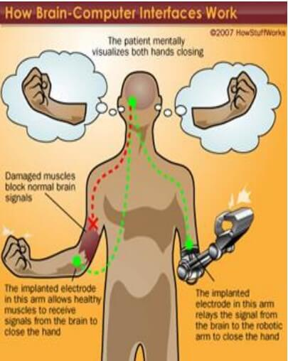
Figure 5: example of Bioengineering applications.
There are numerous applications that use BrainComputer
Interface (BCI). Bioengineering, human subject monitoring,
neuroscience research, manmachine interaction, military,
gaming, and counterterrorism applications are a few
examples. We'll go over a quick rundown of some of these
applications.
Bioengineering
Brain-computer interfaces have the potential to enable
patients with severe neurological disabilities to
re-enter society through communication and prosthetic
devices that control the environment as well as the
ability to move within that environment as shown in
figure (5)
[11].
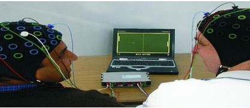
Figure 6: People playing Ping Pong Using BCI
Gaming
In that hectic life, the most important interest is
work and maybe family which increases boredom. So, what
thoughts about disabled people without even work or
entertainment?Some researchers have focused recently on the
application of BCI to games for use by healthy people.
Studies have demonstrated examples of BCI applications
in such well-known games like “Pacman” , “Tetris”, and
“World of Warcraft”, as well as new customized games,
such as “MindBalance” , “Bacteria Hunt” , and others
[10].Disabled people through amputated limbs or even
paralysis live most of their life in a boredom feeling;
so many research are done to provide them with
entertainment factors through BCI sensors that enable a
direct control between brain signals and an external
device as computer or robot. Hence the use of BCI in
gaming began.Gaming BCI is a very interesting development of BCI
usage where it allowed these people to get entertained
through games depending on their brain signals without
such a big effort. In addition, the gaming section
increases from user ability to acquire new skills of
controlling BCI through the entertainment engagement and
the extra communication modalities through the
interesting compete play also through gaming enthusiasm
that allows getting from level to a higher one to get
more ranking in the completion through more and more
efforts and attempts. So, that increases people's
ability to control and become more adaptable to BCI
systems, and then the accuracy of the resulted signals
increases
[12] .Besides the general gaming benefits in stress
relieving, brain function improvement, and the energetic
(fresh feeling).
Medical
The spectrum use of BCI for control is very wide and
includes different applications such as neural prostheses,
wheelchairs, home environments, humanoid robots and much
more. Another exciting clinical application of BCIs
focuses on facilitating the recovery of motor function
after a stroke or spinal cord injury.
Neuroscience research
Neuro-technology and Neurosciences have been continuously
advancing, as a result society, individuals, and
healthcare professors had to deal with this advancement,
BCI seems to be an emerging technology in Neurosciences.
Also it is known that BCI technology is providing such a
direct relation between our brains and the external
devices by passing the neuromuscular pathways
[13].
This amazing technology had a great impact in making a
disabled person communicate with his/her environment
[14].BCI has changed the way provided by Professors to the
neurosurgical services it also helped to achieve the
neurosciences laboratory advances
[15].One of the main challenges facing neuroscientists is to
understand how our brains networks work together. One
method was actually used was to deliver brief pulses of an
electrical current inside a patient’s brain and at the
same time, the resulting voltage in the other regions of
the brain is measured and monitored.Recently, a new sub-field of Neuroscience has been
matured as an effect of BCI, It was mainly around the
systematic measurement and stimulation through the
implanted arrays of our brain surfaces, deeplypenetrating
electrodes which are typically called “Coritco-Cortical
Evoked Potentials” (CCEPs), and in special cases the short
pulses that happen regularly after each other by several
seconds only, “Single Pulse Electrical Stimulation” (SPES)
[16].
However, this new field generated a great complex,
time-intensive, and difficult to measure tasks for humans,
but a well-suited tasks for AI machines, So the
researchers created a new type of AI algorithm for this
purpose.
V. Psychiatric disorders
Mental illness or psychiatric disorders are mainly a wide
range of health conditions or neurological disorders that
can affect your mood, thinking, and even your behavior. It
doesn’t mean that people having mental health concerns from
time to time have a mental disorder, but a mental health
concern is said to be a mental disorder in case of ongoing
symptoms that affect the person’s ability to function. A
variety of environmental and genetic factors are the main
cause of Psychiatric disorders, this includes:
The brain chemistry
This happens when the neural networks involving the brain
chemicals (that carry signals to different parts of the
body and brain) are impaired, the function of nerve
systems and receptors changes causing depression and other
mental issues.
Inherited traits
Many genes are capable of increasing the risk of
developing mental disorders.
Environmental exposures before birth
Exposure to some conditions, toxins, drugs, or Alcohol
can sometimes be linked to Psychiatric disorders. Examples
of Psychiatric disorders include ADHD, Autism, addictive
behaviors, eating disorders, schizophrenia, anxiety
disorders, and depression.All these examples of Psychiatric disorders cause many
common symptoms including feelings of guilt, fear, and
worry, confused thinking, inability to concentrate,
continuous feeling down and ongoing sadness, extreme
tiredness, inability to handle stress, drug, and
alcohol-abusing, excessive violence, in addition to trouble
understanding of some situations and people.A psychiatric disorder can also lead to many physical
symptoms including stomach pain, headache, and back
pain.Due to all of these symptoms, a treatment way must be
followed, the treatment way mainly depends on the symptoms
the person have, ways of treatment include:
Medication
Although medications don’t cure, they just improve
symptoms
Psychotherapy
Also, they are called talk therapy, involves talking with
a therapist about mental issues and conditions.
Psychotherapy in most cases is completed successfully in
just a few months, but in many cases, life-long treatment
is needed.
Brain-stimulation treatments
They are usually used for treating depression, they
include electroconvulsive therapy, vague nerve
stimulation, repetitive transracial, deep brain
stimulation, and magnetic stimulation.As we are currently at the age of technology, scientists
invented a new way to treat Psychiatric disorders using
Brain-Computer Interface (BCI).BCI has been used in the treatment of attention deficit
hyperactivity disorder (ADHD) which is a neurological
condition that causes many symptoms including hyperactivity,
impulsivity, loss of attention, and cognitive task
difficulty. It also can be responsible for the negative
academic skills and semiprofessional outcomes. Scientists
have found that the interactive multi-player games are the
same as a therapeutic and long-term usage due to the higher
social motivation and cooperation among children with ADHD
[17].
VI. ADHD treatment using BCI based games
To treat ADHD using BCI based games, an experiment was
conducted in 2015 to study a BCI system that mainly uses
steady state potentials, such that their main target is to
improve the attention levels of people suffering from ADHD
[18] .This system was in the form of a game composed of two
sub-rooms, the first one is a 3D classroom including 2D
games on the blackboard. This game’s main purpose is to
measure patients’ attention levels by changing the game
environment from the 2D classroom to the 3D one.Results have shown that when the game environment changes
from the 2D environment to the 3D one, in addition to
adding some distractions to the screen, patients’
attention levels drop and they get distracted. Also,
Results have shown that when attention levels advances,
accuracy levels decrease during playing, and time taken to
pass a level increases
[19].So, the higher the level of the game, the harder and more
difficult it becomes to concentrate.More recently, a new game was held named FOCUS, its main
purpose is to detect and determine the focus & attention
of patients suffering from ADHD. The game utilizes the EEG
BCI device in order for the player or the patient to
control the game’s avatar movement by concentrating, by
this way the attention level of patients with ADHD is
amplified and thus ADHD is treated
[20].
VII. BCI game therapy
Neurofeedback or electroencephalography (EEG) according
to its medical term is a kind of biofeedback, process to
learn how to change physiological activity for the
purposes of performance and improving health, that
measures brain waves and body temperature in a
non-invasive way where it changes and normalizes the speed
of specific brain waves in specific brain areas to treat
different psychiatric disturbances like ADHD and
anxiety.So, it teaches self-control of brain functions by
measuring the brain waves then giving feedback represented
in audio or video. The produced feedback depends on the
susceptibility and desire for the brain activities where
it's positive or negative of the brain activities are
desirable or undesirable, respectively.Neurofeedback is adjuvant therapy for psychiatric
conditions such as attention deficit hyperactivity
disorder (ADHD), Generalized anxiety disorder (GAD), and
phobic disorderThe treatment starts by mapping out the brain through
quantitative EEG to identify what areas of the brain are
out of alignment. Then EEG sensors are placed on the
targeted areas of your head where brain waves are
recorded, amplified, and sent to a computer system to
process the produced signals and give the proper feedback.
Then that brain current state is compared to what it
should be doing
[21].
Given the fact that intrinsic motivation is found in
gaming and that it provides positive influences on
concentration and motivation, it’s recommended to focus on
gaming when creating neurofeedback training software.
Imagine neurofeedback which is applied as a treatment is
being perceived as fun and enjoyable action which is found
in games. In this case a shift from ‘treatment’ to ‘play’
could be both desirable and achievable
[22]. So, serious games proved their worth and have been
found effective training tools in mental health care, for
example, for improving cognitive abilities in older
adults, improving cognitive functioning in patients with
alcohol abuse, enhancing emotional regulation in
individuals with eating disorders, band improving
executive functioning in children with attention deficit
hyperactivity disorder (ADHD)
[23].
In addition, Games are developed to be appealing to
psychiatric patients that increase their motivation for
treatment through neurofeedback therapy. Furthermore,
these games represent effective training tools in mental
health care where they improve cognitive abilities in
adults
VIII. Conclusion
The Neurofeedback (NFB) therapy technique provides the
user with real-time feedback on brainwave activity. That
activity is measured by sensors in the form of a video
display and sound. Brain-Computer Interfaces (BCI)
framework consists of five stages that form a closed
loop.BCI helps patients with neurological disabilities to
re-communicate by prosthetic devices. BCI also provides
disabled people through amputated organs with the
entertainment they need; as they mostly feel bored. Gaming
BCI allowed these people to get entertained through games
that don’t need effort, only brain signals.Psychiatric disorders are mental health issues that can
affect your mood and actions. A variety of things are
capable of causing these disorders. Inherited traits &
environmental exposures can be reasons for psychiatric
disorders. Psychotherapy is one of the ways to get rid of
mental health issues. In most cases, psychotherapy is
completed successfully in a few months, but in many cases,
a life-long treatment is needed.Brain-stimulation treatment can be used to get rid of
depression, but as it is the age of technology, BCI is now
capable of getting rid of those disorders. Depression,
substance abuse, anxiety, and mood instability; all these
are disorders that NFB has shown effectiveness in. There
is proof that supports the idea that NFB decreases
seizures. Some proof also supports the effectiveness of
NFB for ADHD.
IX. References
Artificial consciousness: from AI to conscious machines
Nehal Mamdouh (Maadi STEM High School for Girls) Yossef
Eldershaby (Gharbiya STEM high school) Mentor:
Roaa El-fishawy (STEM High School for Girls - Maadi)
AbstractConsciousness is a subjective (implicit) experience.
Artificial consciousness aims to simulate this
consciousness. This is by building a model as complex as a
human brain. Any model less complex than the brain will not
be able to simulate the human brain nor a part of it.
Building a subject is one of the biggest difficulties
because scientists till now don’t know what specifically a
subject is. Consequently, it is impossible to build
something you don’t know it. Many attempts tried to build
machines able to do tasks with the same proficiency as
humans. Many attempts succeeded as deep blue that beat the
chess world champion Garry Kasparov, but this didn’t reach
human consciousness yet. It just follows specific complex
commands. This category of machines lacks emotions, love,
creativity, desire, and curiosity. Now, scientists try to
model the brain by RAM which every neural connection
(synapse) equals a floating-point number that requires 4
bytes of memory to be represented in a computer. The brain
contains 1015 synapses that equal 4 million GBs of RAM. This
memory is not available on a computer till now. It is
predicted that it will be available near 2029. This idea may
fail for any reason, but all researchers, scientists, and
technologists believe that artificial consciousness will
become a reality someday even in the far future.
I. Introduction
What is Consciousness?
Consciousness is one of the most mysterious scientific
concepts. Scientists till now discover more about the
methodology of human consciousness. Consciousness is
everything you experience and everything you feel, which
are sometimes named qualia. Many modern philosophers
believe that this is just an illusion as they believe
should be a meaningless universe of matter and void
[1]. Logically this is wrong as it doesn’t depend on any
scientific reason and it is opposite to the real situation
that these experiences, by way or another, exists.
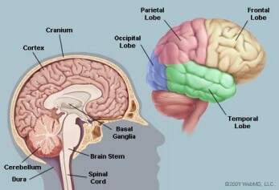
Figure 1: Human Brain AnatomyIn 2018, David Gamez, a Lecturer at Middlesex
University, developed another explanation for
consciousness: over the last 3 centuries, science has
developed a series of interpretations of the world that
have stripped objects of their sensory properties. You
consciously deal with an apple as a red and tasty
object, but scientifically apples are colorless
collections of jigging atoms. These colors, sounds,
smells and all sensations that we encounter in our daily
life need to be associated with something and this thing
is consciousness. Gamez defines “consciousness” as
another name for our bubbles of experience, which
contain the sensory properties that science removed from
the physical world
[2] .
The rise of Artificial Consciousness accompanied by
Artificial Intelligence
The rise of AI especially and technology generally in the
20th century caused the foundation of a new field related
to AI which is Artificial Consciousness (AC). The idea of
the universal effective AI model, which is creating
machines as have all human aspects, is the reason that
scientists created a new field
[3]
[4][5]. Scientists consider Artificial Consciousness as a
branch or sub-field of AI. The reason is that Artificial
Intelligence (AI) is the ability of a digital computer or
computercontrolled robot to perform tasks commonly
associated with intelligent beings (human activities)
[6], Artificial Consciousness is the simulation or the use
of AI to model a conscious machine. The ambiguity here is
as mentioned before, consciousness is one of the most
ambiguous scientific concepts about humans till now, and
AI depends on computations, algorithms, processing, and
functions of AI method to simulate human activities, but
consciousness is thought to be untouchable with those
methods.[7]Artificial Consciousness is mainly inspired by human
imagination. This is proved by the idea that the first
spot on intelligent robots was by sci-fi movies and
stories. Since the early 1950s, sci-fi movies depicted
robots as human-crafted machines able to perform complex
operations, work with us on critical missions in hostile
environments, or pilot and control spaceships in galactic
travels
[7].The most famous example of this archetype, HAL 9000, the
main character in Stanley Kubrick’s 1968 epic, 2001: A
Space Odyssey. HAL controls the entire spaceship, talks as
a human with the astronauts, recognizes the crew’s
emotions and renders aesthetic judgments. it also murders
astronauts in pursuit of a plan elaborated from flaws in
its programming. On the other side, it plays chess too.
This theme was developed by time from James Cameron’s
terminator in 1984 to terminator 2 in 1991 and the matrix
in 1999
[7]. Nevertheless, the term of AC was not used in those
movies. It was just an interesting fantasy theme. The
words “Artificial consciousness” were first used in the
book Kibernetikai ge´pek, by Tihame´r Nemes, the author,
in 1969. He wrote a paragraph about Artificial
Consciousness indicating the features of a conscious
machine.
AC is a controversial concept because it gives rise to
several issues that require combining much information
from different disciplines especially computer science,
neurophysiology, and philosophy
[7]. AC can be classified into two kinds:
Weak artificial consciousness: It is a simulation of
conscious behavior. implementation of a smart program
that simulates the behaviors of a conscious being at a
primary level of technology and AI, without
understanding the mechanisms that generate consciousness
[8]. Something like a primary model.
Strong artificial consciousness: It refers to real
conscious thinking emerging from a complex computing
machine (artificial brain). In this case, the main
difference with respect to the natural counterpart
depends on the hardware that generates the process
[8].
This review will focus on the development of artificial
consciousness from weak to strongest predicted version. It
focuses on the biological and psychological perspectives
too, conducting many questions about AC and aiming to
solve it by representing the rise and the development of
AC and what ambiguities it faced chronologically.
II. Consciousness, biological process, or psychological
concept:
Consciousness is a subjective experience. What “it is
like” to perceive a scene, to endure pain, to entertain a
thought, or to reflect on the experience itself. When
consciousness fades, as it does in dreamless sleep, from
the intrinsic perspective of the experiencing subject, the
entire world vanishes. Consciousness mainly depends on the
integrity of certain brain regions and the particular
content of an experience depends on the activity of
neurons in parts of the cerebral cortex (look at fig 1
[9]). In fact, refined clinical and experimental studies are
not sufficient for understanding the relationship between
consciousness and the brain. It is still anonymous why the
cortex supports consciousness when the cerebellum does
not, despite having four times as many neurons
[10].
As a prescientific term, “Consciousness” is used in
widely different senses. A machine must be turned on
properly for its computations to unfold normally.
Distinguishing two other essential dimensions of conscious
computation can be useful. We label them using the terms
global availability and selfmonitoring. C1: Global
availability corresponds to the transitive meaning of
consciousness (as in “The driver is conscious of the
light”). It refers to the relationship between a cognitive
system and a specific object of thought, such as a mental
representation of “the fuel-tank light.” This object
appears to be selected for further processing, including
verbal and nonverbal reports. Information that is
conscious in this sense becomes globally available to the
organism; for example, we can recall it, act upon it, and
speak about it. This sense is synonymous with “having the
information in mind”; among the vast repertoire of
thoughts that can become conscious at a given time, only
that which is globally available constitutes the content
of C1 consciousness[11]In at least three quite different ways the term
“consciousness” has been used.
(1) It has sometimes been defined as a state, as in
drowsy, alert or altered states of consciousness.
(2) It has also been used to refer to an architectural
concept, namely the executive system at the center of
cognition that seems to receive input, allocate attention,
set priorities, generate imagery, and initiate recall from
memory.
(3) It may be used as an indicator of representational
awareness, as in becoming conscious of some specific idea
or event.
From an evolutionary perspective, these different meanings
of the word elicit very different explanations in terms of
biological fitness and selection pressures; moreover, their
underlying mechanisms appear in evolutionary history at
different times and in different species. For example, the
brain mechanisms of state variables would appear to be more
fundamental than the other two, since basic arousal and
sleep mechanisms evolved early and are essentially similar
in many mammals. The neural machinery supporting our
putative attentional architecture comes next in the
evolutionary hierarchy since it is concerned mostly with the
control of complex behaviors and only appears in fairly
advanced organisms.[12]
III. AC Origin
The origin of the term “AC”
Engineers are in always attempt to design something,
which could not be defined precisely. They aimed at
building artificial replicas which imitated some features
of something, real or virtual, that elicited their
imagination
[13] . On the other hand, neuroscientists like Giulio Tononi
and Gerard Edelman claimed that
[14]: To understand the mind we may have to invent further
ways of looking at brains, and here is how it starts:
AC tech discipline
Artificial consciousness is a technological area closer
to robotics and AI technical fields. It is not
surprisingly a scientific discipline and has a limited
relation to psychology or neurosciences. Nevertheless, in
the future, artificial consciousness could give unexpected
contributions to the understanding of the study of the
human mind because it is a reliable testbed for checking
theories and hypotheses. Artificial consciousness is
perfectly described as “epigenetic robotics” both
disciplines stress the role of development. However,
artificial consciousness leaves the implementation of the
sensory-motor-cognitive system to epigenetic robotics. In
simpler terms, AC is addressing the issue of the robot
with the external environment. because artificial
consciousness sits on two giants’ shoulders (neurosciences
and artificial intelligence), researchers are not seeking
to make a confusing use of linguistic terms, Today, the
term ‘artificial consciousness’ has a pure technological
meaning.Researchers often use consciousness in its folk
psychology and everyday meaning. The researchers in the
field of artificial consciousness know well that the study
of natural consciousness is far from being conclusive
[15] .Researchers adopt a typical engineering attitude. They
build artifacts that evoke characteristics of a human
being from the scratch. However, they do not want to
insert a module (a sort of ‘consciousness module’) in a
pre-assembled robot. They want to build a conscious-like
robot, i.e. a robot which behaves like a conscious being.
Very often, engineers build artifacts before knowing
exactly the laws which are at the basis of the processes
and methods used in the construction of the artifact
itself (engineers design and build proteins even if they
do not know the laws governing the protein folding in 3D).
Ray Kurzweil writes:The question here should be “how will we come to terms
with the consciousness that will be claimed by
non-biological intelligence?” Such claims will be accepted
from a logical practical perspective for only one thing
“they” will turn into “us”, so there won’t be any clear
distinction between non-biological and biological
intelligence. Furthermore, these nonbiological entities
will be extremely intelligent, so they’ll be able to
convince other humans of their consciousness:
They’ll have the delicate emotional cues, which convince
us today that humans are conscious.
They will be able to make other humans feel
contradictory feelings.
They’ll get mad if others don’t obey their claims.
But, this is fundamentally a political and psychological
prediction, not a philosophical argument.
[16]
From AI to AC
“Mind cannot be demonstrated as identical to brain
activity” an equivalence that Bennett and Hacker regarded
as a metrological fallacy
[3] . We experience only humanoid consciousness as a whole
and not in one of his/her parts, not even in a neural
sophisticated part like the brain. If the concept of a
man-made artifact that acts like a human being were
accepted, artificial consciousness would acquire a new
status and it would be an updated version of artificial
intelligence.In 2005, Teed Rockwell wrote in his issue, Neither Brain
nor Ghost, that one of the biggest mistakes of symbolic
systems AI was to substitute the propositions that are
caused by experience for the experience itself—this may be
right in case of linguistic experience only, but the
experience is not limited to linguistic affair only. Those
AI researchers, who limited experience to linguistic
affairs only, saw common sense as a particular set of
concepts
[17].
Another attempt by other researchers was to translate
common sense into a set of propositions and store all the
propositions in their machines’ memories. But it is clear
to almost everyone that it was a doomed project. It was
necessary to program in even statements as obvious as
‘when you put an object on another object and move the
bottom object, both objects move’, one of many statements
that never has to be verbalized by anyone who has a body
and conscious brain and has used them to try to move those
objects then failed and recognized why this phenomenon
happened then stored this observation or conclusion in
form of experience consciously to use it in other
situations.
IV. AC technical development and difficulties
How to verify consciousness (Turing test)?
In 1950, Alan Turing, an English mathematician, computer
scientist, logician, philosopher, and theoretical
biologist, tried to answer one of the most ambiguous
questions at this time “can computers think?” Turing
considered the machines as digital computers only and
operationalized thinking as the ability to answer
questions in a particular context. The test is to ask a
question for a computer and the same question for a human
operator. Both answer it on a keyboard for 5 minutes. The
answer should be well enough that the interrogator could
not easily discriminate between the human and computer.
The examiner inputs a question about anything that comes
to his mind. Both the computer and the human respond to
each question. If the examiner cannot with confidence
distinguish between the computer and the operator based on
the nature of their answers, we must conclude that the
machine has passed the Turing test
[18][7][19].
Point to consider, Turing in his original paper didn’t
mention consciousness except in the context of an
objection that the thought in the brain is always driven
and accompanied by feeling. In other words, consciousness
is feeling. So, the text generated by the machine in the
absence of feeling, however it seems convincing, could not
be taken as a sufficient indicator of thought
[19].
In 1990, the Turing test received its first formal
acknowledgment. Hugh Loebner, a New York philanthropist,
and the Cambridge Center for Behavioral Studies in
Massachusetts established the Loebner Prize Competition in
Artificial Intelligence. It was awarded a $100,000 prize
for the first computer which succeeded in the Turing test
[7][19].
Development of Turing test
In 1998, the questioning’s scope has been wider and
nearly include anything. Each judge selects a score on a
scale of 1 to 10. 1 means human and 10 means computers.
Now, current computers can pass the Turing test (pass here
means confidence distinguish between the computer and
human) in case presence of restrictions to interact to
highly specific topics as chess. So far, no computer has
given responses indistinguishable from a human, but every
year the computer’s scores edge closer to an average of 5.
The possibility of building a device that will pass the
human Turing test, at least in the far future, is not
ruled out yet
[18][19].
More recently, people have suggested extensions to the
standard test that involve processing more material beyond
text as audio, visual data, or controlling a humanoid body
in a human-like way for an extended time interval. By
these suggested modifications, passing any of the Turing
tests needs a machine would almost certainly have to have
experience of the world, a capacity for imagination, and
emotional behavior. Because there is no sequence of
pre-programmed responses is likely to be convincing over
an extended time
[19].
Computer beats human
On 11 May 1997 at 3:00 P.M. in New York City, for the
first time in the history, a computer beat reigning world
chess champion, Garry Kasparov. It was IBM’s Deep Blue. It
is estimated that the search space in a chess game
includes about 10,120 possible positions. Deep Blue could
analyze 200 million positions per second. Deep Blue
victory can be explained by its speed combined with a
smart search algorithm, able to account for positional
advantage. In other words, computer superiority was due to
brute force, rather than sophisticated machine
intelligence. The conflict here is whether this means that
Deep blue is conscious or not
[20][7][21]. If Turing’s thought was applied in this case, so this
means that Deep Blue is conscious. Because Kasparov
expressed doubts while he was playing against the
computer. Sometimes, he felt like playing against a human,
not a programmed machine. In some situations, he
appreciated the beauty of the moves done by the machine,
as if it was driven by intention, rather than by
algorithms. So, this asserts that if the Turing test was
conducted here, Deep Blue will certainly pass the test as
its performance can’t be distinguished from human
performance. so, in Turing perspective, Deep Blue is
conscious.
The conflict here when considering another perspective.
From a pragmatic perspective, Turing may be right. We as
humans believe that anyone like us is self-conscious too.
The reason is that we consider the similarity between us
as a factor, this person has as same organs as me and has
the same brain too. So, he is self-conscious like me.
Nevertheless, if something with a different structure as
mechatronics organs, neural processors, and technological
parts, but behave as a human. The answer now may be
different, the possibility of being self-conscious is not
low. In the case of Deep Blue, it doesn’t behave like
humans. It is like a calculator. It does the ordered
process, but does Deep Blue or Calculator understand what
they do? They both apply or take procedures by following
specific given algorithms or commands with a difference in
complicity
[20][7]. It can be said that this category of machines as a
calculator or Deep Blue is driven by electronic circuits
working in a fully automated mode. It doesn’t show
creativity, love, emotions, or unlogic decisions depending
on desire or livingorganism instinct. Just act as operated
slave
[20].
Difference between subject or object:
Manufacturers work on building sophisticated robots
called epigenetic robots. They aim to reach unique
personalities for robots through the interaction with the
environment and make them capable of going through a
series of development phases of a normal human (from
toddler to adult). This idea appeals to consumers.
Moreover, robots must show emotions like happiness, anger,
surprise, and sadness, in different degrees. Those robots
must be curious and able to explore the external world on
their own: these robots develop concerning their personal
history. However, designing and implementation of robots
capable of having a subjective experience of what happens
to them are not achieved yet.The recent research on consciousness is focused on the
design of conscious machines. The time has come to elevate
from behavior-based robots to conscious robots. before any
new design approach towards a new generation of artificial
beings, engineers have to deal with a new problem: how to
build a subject? engineers didn’t use to build subjects
before
[7][4].
Implicit, which is subject, in many theories is explained
as an external event and is represented in the brain (the
object), so they are connected, but from the same
perspective they are different, they are not the same
thing. This undemonstrated hypothesis is the reason why it
is hard to address what is consciousness. So, this makes
building subjects nearly impossible till scientists
clearly demonstrate what is consciousness
[7][4].
Is it possible the machines could be conscious?
In 1980, the philosopher John Searle presented his proof
that machines could not possibly think or understand. The
reason is that computers do human tasks but in an
unintelligent manner. He believes that no matter how good
the performance of the program if it can’t think and
understand
[22]. Nevertheless, this assumption has some problems. If
this reason was applied to the biological counterpart or
human brain. In fact, those are also biologically operated
to respond to specific inputs by specific reactions and
each neuron automatically responds to any input according
to fixed natural laws. Each neuron or cell does its
function, but it could not possibly think or understand
why it did that. In other words, cells are not conscious.
However, this does not prevent us from experiencing
happiness, love, and irrational behaviors. This negates
Searle’s assumption
[20].
In 2015, a book called “Impossible Minds” discussed this
topic from a scientific rigor aspect. It addressed the
diversity between biological and artificial brains. They
both can do the same task in different ways. This doesn’t
matter on the result that we observe, which is
consciousness. So, the issue became in our beliefs. If we
believe in AC concerning our religious regulations. This
means that the possibility of realizing an artificial
self-aware being remains open
[23].
All research indicates that AC is possible. No one reason
negates this fact. It is not achieved yet. But it is
possible, and scientists predict that it will happen in
the near following years.
V. AC future
When will a machine become self-aware?
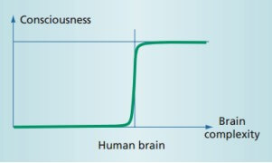
Figure 2: The self-awareness threshold
After proving that creating conscious machines is not
impossible yet. The scientific answer to this question
is controversial, but it is possible to indicate a
condition that must happen to consider the machine as
self-aware. A neural network must be as complex as the
human brain or more because less complex brains are not
able to produce conscious thoughts. It will not produce
any conscious thoughts (see figure 2
[7]). Consciousness is a step function of brain complexity
[20] .
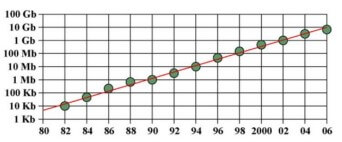
Figure 3: Typical random-access memory installed in
personal computers
Since memory is used to simulate the human brain. What
is the capacity of the memory needed to equate the brain
in complicity? The human brain contains about 1012
neurons, and each neuron makes about 103 connections
(synapses) with other neurons. So the total equals 1015
synapses. Each synapse can be simulated by 4 bytes. In
consequence, 4 x 1015 bytes (4 million Gigabytes). Then,
Is such a memory available on a computer? Since 1980,
the RAM capacity has increased exponentially by a factor
of 10 every 4 years (see figure 3
[20]).
So, bytes = 10 ((year – 1966)/4)
We just have to substitute that number in the equation
above and compute the result. The answer is the year 2029.
In any case, even if we adopt different numbers, the
computation’s basic principle remainsthe same. we could
advance that date by only a few years.
VI. Conclusion
Consciousness refers to your personal perception of your
unique thoughts, memories, feelings, and environments.
Essentially, your consciousness is your awareness of
yourself and the world around you. This awareness is
subjective and unique. From a neurological perspective,
Science is still exploring the neural basis of
consciousness. But even if we have a complete neuroscience
picture of how the brain works or performs, many
philosophers still believe that there is still a problem
they call the "Consciousness Problem." The brain is the
most complex organ in the entire universe as we know it.
It has about 100 billion neurons. It has more neural
connections than there are stars in the entire universe.
This is why we are incredible beings who have a spark of
consciousness.A popular discussed approach to achieve general
intelligent models that can be conscious is whole
depending on reaching a “brain simulation”. The low-level
brain model is created by scanning and mapping the
biological brain in detail and copying its state to a
computer system or other computing device.Eventually, it is possible to indicate a condition that
must happen to consider a machine as self-aware or
conscious. A neural network must be at least as complex as
the human brain because less complex brains are not able
to produce conscious thoughts. Actually, it will not
produce any conscious thoughts. Scientists and technical
now work on building a model as complex as the human
brain. It is just a prediction. However, they believe that
AC will reach human consciousness in 2029. Even this
attempt failed, AC will reach human consciousness even in
the far future.
VII. References
Dialysis Machine: Effect of Technological Advancements
Kyrillos Wahba (STEM High School for boys 6th of
October) Mohamed Elshahawy (STEM High School for boys 6th
of October) Shehab Sherif (STEM High School for boys 6th
of October) Mentor: Ahmad Nasser (STEM
High School for boys 6th of October)
AbstractEight decades ago, the first artificial blood purifier was
invented. Today, in a world where spending twelve hours a
week in treatment is not a viable option to many patients,
the same bulky machines are still used. Fortunately,
scientists have been vigilant, and the notion of developing
a portable, reliable dialysis machine has been sought by
many. In this paper, we first begin by analyzing the
principle of Dialysis. Then we shed light on the
technological innovations achieved ever since the first
dialysis machine was mass-produced. The use of a high-flux
membrane dialyzer, ultrapure dialysis fluid, and convection
fluid has proved to greatly improve Dialysis. However, the
difficulties still prevail. And so long as an efficient
substitute can be found for the dialysate and proper
healthcare can be given to patients at home, a portable
dialysis machine is not going to be devised.
I. Introduction
The kidney is arguably one of the most important organs
in the human body because it cleans the human blood from
toxic wastes, so when it loses its renal functions, the
person can be exposed to death. Hence, scientists have
long hoped to invent a machine that simulates the function
of the kidneys to clean human blood. The first successful
machine for human Dialysis was invented and operated in
the 1940s by a Dutch physician called William Kloff. Kloff
came up with the idea of developing a blood purifier when
he saw a patient with kidney failure. Kloff became
interested in the possibility of artificial stimulation of
kidney function to remove toxins from the blood of
patients with uremia, or kidney failure. Although only one
person was successfully treated, Cliff completed
experiments to develop his design
[1].William kloff relied in his invention on the use of
cellophane after discovering that (cellulose acetate) can
be used as a semi-permeable membrane to purify the blood
from waste.[2]
The Clove machine consists of a horizontal rotating drum
made of wood slices wrapped around 30-40 meters of
cellophane (cellulose acetate) tubes, and the lower part
of the device is suspended in a dialysate (salt
solution).[2]
The patient’s blood enters the device through a cannula
connected to the artery, and then the blood moves to the
cellophane tubes wrapped around the rotating drum. When
the drum rotates, the tubes sink into a solution, and the
waste moves from the higher concentration to the lower
concentration, meaning from the blood through the
cellophane (semipermeable membrane) to the solution
[2]. The full dialysis cycle takes about 6 hours. And then
the blood entire the body again through another cannula
connected with a vein. This is how the first human blood
cleaning machine was invented. After many developments in
the field of Dialysis to this day, we have become
dependent on two types of Dialysis: hemodialysis and
peritoneal Dialysis.Hemodialysis:In hemodialysis, a doctor creates a vascular access site
in the patient’s arm before hemodialysis, then the blood
is pumped from the body to the artificial kidney machine,
which removes waste from the blood through a
semi-permeable artificial membrane using the Dialysis
solution and is returned to the body through tubes that
connect it to the device. Needless to say, hemodialysis is
done in hospitals
[3] .Peritoneal Dialysis:Peritoneal Dialysis, on the other hand, requires a
catheter, or piece of tubing, placed in your belly. The
dialysis solution enters the abdominal cavity
[4]. The blood is purified while inside the body, where the
protein membrane in the patient's abdominal cavity is used
as a semi-permeable membrane
[4]. Then the waste and the solution filled with the waste
are collected. The filtering process is finished, the
fluid leaves your body through the catheter. Since the
blood does not need to leave the body, this process is
carried out at home. As all this development came from
studying the diffusion of gases, not liquids, and that is
what will be discussed in this paper.
II. The scientific premise behind Dialysis
The principles of Dialysis can be tied back to Thomas
Graham’s discovery of diffusion. In his first article on
Gaseous diffusion, Graham proposed that the gaseous flow
was proportional to its density. He examined the escape of
hydrogen via a tiny hole in platinum and observed that
hydrogen molecules were moving out four times more quickly
than oxygen molecules. His tests were designed in such a
way that he could quantify the relative speeds of specific
molecular movements. He also observed that heat enhanced
the speed of these molecular movements while increasing
the force that resisted the atmospheric pressure by a
certain weight of the gas. Graham's numerical calculations
revealed that the velocity of flow was inversely
proportional to the square root of the densities. His law
demonstrated that the specific gravity of gases could be
assessed more precisely than usual. He also remarkably
noted that diffusive gas escapes faster in a compound.
This paved the way for the invention of the dialysis
machine. In Dialysis, Blood flows by one side of a
semi-permeable membrane, and a dialysate, or special
dialysis fluid, flows by the opposite side. A
semipermeable membrane is a thin layer of material that
has holes of different sizes or pores. Smaller solutes and
fluid pass through the membrane, but the membrane blocks
the passage of larger substances. This replicates the
filtering process that occurs in the kidneys when the
blood enters the kidneys, and the larger substances are
separated from the smaller ones in the glomerulus
[5].
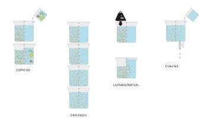
Figure 1: Osmosis, diffusion, ultrafiltration, and
dialysis
Another concept that is used in Dialysis is reverse
osmosis (RO). Osmosis is the method through which water
flows from a more concentrated solution into a less
concentrated one across a semi-permeable membrane to reach
a state of equilibrium. This means that clean water flows
through the filter to the polluted water so that the
concentrations are equaled: contrary to the goal of
Dialysis. In reverse osmosis, an applied pressure is
employed to counteract osmotic pressure and drive water
from high contaminant concentrations to low contamination
levels. It is therefore driven backward, and the
contaminated water attempts to enter clean water, but
since the filter must be passed first, the pollutants are
held, and only the pure water goes through them, which is
exactly what the goal of Dialysis is. Figure 1 illustrates
the various mechanisms of flow discussed
[6].
In general, there are pretreatment systems before
dialysis devices, which deliver a high quality of water
according to appropriate requirements, (primarily reverse
osmosis [RO]). Scientists believe that the malfunctioning
of pretreatment systems and the resultant poor feed water
quality of the dialysis instrument might be related to
some tragic occurrences at dialysis centers. Minimum trace
element concentrations such as heavy metals in Dialysis
can severely disrupt trace element concentration in
individuals with Dialysis. Elements such as aluminum,
nickel, cadmium, plum, and chromium must thus be taken
into account in particular. The rise in nickel level, for
example, may lead to acute nickel poisoning. Aluminum also
causes a disrupted balance of calcium phosphate not just
in dialysis patients, but also in brain and bone
conditions. over a long-term period of periods of time.
Based on the above, reducing heavy metals in water is
highly essential.
[7]
III. Technological Innovations in Hemodialysis
i. Online Monitoring Technologies
Dialysis Automation and Profiling has made the process
safer for the patient and the care team, reducing the
un-physiologic incidences of human mistakes. Online
Monitoring relies on the immediate information of
Parameters blood volume (BV), dialysate, conductivity,
urea kinetics, and thermal energy balance. The dialysis
machine uses these measurements to apply automated actions
to achieve the body's standards, such as sodium and
potassium modeling and temperature control which affect
the patient during or after the Dialysis.
[8]
ii. Effects of Automated sodium modeling
According to the received measurements, the machines
decide to keep the current concentration or change it; one
of these measurements is the dialysate sodium
concentration. The machine tends to raise the dialysate
sodium concentration to prevent intradialytic hypertension
causing after dialysis vicious harms; Increased thirst,
Intradialytic Weight Gain, and Hypertension; keeping in
mind that fluid retention of ≥ 4 kg between two subsequent
dialysis sessions is associated with a higher risk of
cardiovascular death.
[9]No studies have proven that the high dialysate sodium
concentration is better or more unsafe than the average
dialysate sodium concentration. By the same token, some
strategies keep the hemodynamic stability as safety rates
away from the sodium modeling high risk, such as
Temperature Modulation.
[10]But due to the online monitoring technology, the dialysis
teams don`t require understanding the dialysis process,
which makes the nurses use the high dialysate sodium
concentration to reduce hypertension during the session,
ignoring the longterm effects.
iii. Effects of Automated potassium modeling
An analysis: part of the 4D study has been conducted which
shows that a portion of high mortality is sudden death or
abnormal cardiac rhythm, where:
Patients without sinus rhythm were 89% more likely to die.
Cardiovascular events and stroke risk increased by 75% and
164%, respectively compared with preserved sinus rhythm
patients.
Left ventricular hypertrophy with more than two-fold,
increases the risk of stroke and sudden death incidences
by 60%.
[11]
The sudden shifts in the plasma potassium because of
hemodialysis sessions can cause death in arrhythmia-prone
patients. The lower concentration dialysate potassium is
used to remove the excess potassium, being the necessary
gradient.
[12]
In the early stages of Dialysis, the plasma potassium
concentration decreases rapidly, increasing the risk of
ventricular arrhythmias even if the patient doesn`t have a
prior record of heart disease.[12]
The online monitoring has solved this problem by modeling
the potassium concentration in dialysate in a way to
minimize initial rapid deflation; also, every kind of
patient has a different dialysate potassium concentration
where intradialytic premature ventricular patients use
fixed-rate (2.5 mmol / L) potassium or use a declining
potassium concentration ( 3.9 to 2.5 mmol / L ) and the
one who has constant blood to dialysate potassium gradient
of 1.5 mmol / L.
[13]A comparison was made between the two potassium dialysate
concentration techniques with 30 arrhythmia-prone HD
patients. Every patient went through the same acetate-free
biofiltration sessions: randomly, the constant
concentration ( 2.5 mmol / L ) potassium and potassium the
decreasing dialysate potassium. During the dialysis
sessions, the Holter Electrocardiographic and plasma
electrolyte measurements were recorded. After the sessions
with approximately 14h, the results show that the constant
potassium protocol is 3.9 times higher than the declining
one in the premature ventricular contractions with no
difference in any other points noticing that the
experiment was conducted only on the potassium
concentrations.
[14]
iv. Effects of Automated Temperature Modelling
Temperature modeling has been experienced by modifying
dialysate temperature via blood temperature monitoring
integration in the HD machines. The machine adjusts the
dialysate temperature between 34 &35.5◦ c according to the
patient blood temperature of 37◦ c. which results in
cardiovascular stability during the HD treatment better
than the normal dialysate temp.
[15]A review has conducted all the temperature adjustment
techniques like reducing dialysate temperature, either an
experimental, fixed Dialysate temperature reduction or a
biofeedback temperature control. The review shows that
reducing the dialysate temperature effectively decreases
intradialytic hypertension without affecting dialysis
adequacy, noticing that the long-term effects haven`t been
examined yet.
[16]
The mean positive impact of online monitoring
technologies and techniques is the body factors stability
during and after the dialysis process as in the potassium
and temperature modelling techniques. On the other hand,
sodium modeling has shown positive results in reducing
hypertension during processing, with after processing
harmful impacts like hypertension and increased
thirst.The most dangerous effect is the team knowledge of
dialysis process basics & sudden incidences that can
occur, whereas shown that automation of the process has
canceled required understanding of dialysis process that
the nurses and patients must-have.
IV. Purity of Dialysate and Dialysis Water
The water & concentrates used to produce dialysate and
the dialysate are required to meet quality standards to
reduce the injury risk of HD patients due to the chemical
and microbiological contaminants that can be in the
dialysate.
[17]
Intact bacteria V.S. Bacterial Products
In the dialysate, there are non-vicious contaminants like
intact bacteria that can`t proceed the dialyzer membrane,
and vicious bacterial products such as endotoxins, fragments
of endotoxin, peptidoglycans, and pieces of bacterial DNA
which can cross into the bloodstream causing chronic
inflammation due to stimulation on mononuclear cells. The
induced inflammatory state may be an essential contributor
to the long-term sickness associated with HD.
[18]
Preparation of Ultra-Pure Water
Studies have shown that tiny fragments of bacterial DNA can
maintain a chronic inflammation in HD patients by prolonging
the survival of inflammatory mononuclear cells.
[19]With more attention in the dialysis centers to ultra
pureeing, the water used in dialysate will help in reducing
the chronic inflammatory cases. However, there aren`t
studies demonstrating beneficial direct outcomes by using
ultrapure water and dialysate, and if it is not helpful, it
is not harmful. For ensuring safety, it`s recommended to
ultra-pureeing dialysate water and the dialysate.
V. Hemofiltration & Hemodiafiltration
Hemodialysis is based on diffusion; exchanging solutes
from one fluid to another through a semipermeable membrane
along a concentration gradient. Even HD High-Flux
Membranes don`t make a difference in the number of removed
solutes because solute diffusivity decreases rapidly with
increasing molecular size. Despite that, convection
therapies such as Hemofiltration (HF) and
Hemodiafiltration (HDF) can remove larger solutes.Convection requires large volumes of substitution fluid
which is covered with online ultrafiltration of dialysate
and sophisticated volume control systems to maintain fluid
balance.
Hemodiafiltration
HDF using a high-flux membrane dialyzer, ultrapure dialysis
fluid, and convection fluid is highly efficient. As studies
results, the high-efficiency online HDF is associated with a
35% reduced risk for mortality. Also, Regular use of online
HDF is associated with reduced morbidity as compared with
standard HD.
[20]
Hemofiltration
A comparative study has been made on High-flux HF with
ultrapure Low-Flux HD, shows a significant survival rate
in HF compared with standard HF (78% V.S. 57% 3yrs
follow-up). The study has demonstrated inclusion and
logistic problems associated with online monitored
Hemofiltration.
[21]The HDF and HF have ensured the efficient longterm
effects by studies and patients reviews. However, it is
needed to conduct more studies on these techniques to
ensure the patient's safety.
VI. Difficulties facing the development of portable dialysis
machines
Many obstacles have hindered the development of a smaller
dialysis machine let alone a full-fledged wearable
artificial kidney. The primary impediment has been the
lack of an effective strategy to enable toxin removal
without using substantial volumes of dialysate — a
limitation that applies to both hemodialysis and
peritoneal Dialysis.
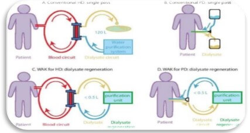
Figure 2: shown the massive improvement that occurred
when trying to reduce the amount of (dialysate) solution
used in the dialysis machine
In figure (2), we can see the massive improvement that
occurred when trying to reduce the amount of (dialysate)
solution used in the dialysis machine. As in (A), the
patient’s blood enters the dialyzer and enters the
dialysate solution from the other direction, then the
blood is purified by using a semi-permeable membrane and
the reverse osmosis process and after each cycle, the
blood returns to the body and the solution is regenerated
within the device in order to start a new cycle and the
old solution is discarded and Each cycle requires about
120 liters of dialysate solution.
[22]
(B) represents peritoneal Dialysis (PD). During PD, the
hypertonic dialysate is instilled into the peritoneal
cavity via a catheter to allow diffuse and convective
removal of waste solutes and osmotic removal of excess
water across the peritoneum.
[22]
After a certain period of time, the fluid (containing waste
and excess water) is drained and disposed of. C and D is a
representation of an artificial kidney that can be worn and
transported, as it has a purification unit for the dialysate
solution (dialysate regeneration), thus using a smaller
amount of solution (<0.5L), and smaller device size.
[22]
The use of sorbent material.
NASA has extensively studied ways to remove organic waste
from solutions to restore potable water during manned
space travel. These efforts have led to the development of
sorbents (materials that absorb other compounds very
efficiently), which can also be used to detoxify dialysate
solutions. Almost all attempts to develop a wearable
artificial kidney to date have incorporated absorbent
materials into the dialysate circuit to replenish the
dialysate. Sorbents containing activated charcoal are very
effective in absorbing heavy metals, oxidants, and some
uremic toxins such as uric acid and creatinine However,
sorbents have historically proven ineffective in binding
and removing urea, which has limited the usefulness of
sorbent-based systems.
[23]
decomposition of urea by using enzymes
There have been many attempts by scientists to convert
the urea compound contained within the dialysate solution
to be reused into a compound of ammonia and carbon dioxide
using enzymes, then the ammonia is absorbed using a
sorbent called zirconium phosphate and the carbon dioxide
is disposed of in the atmosphere. However, the combined
use of sorbents and the enzymatic decomposition of urea
are being tested by scientists and are under study.
[23]
Electro-oxidation
This method also dates back to early NASA investigations
of using electrooxidation to electrolyze urea into carbon
dioxide and nitrogen gas on metal-containing electrodes.
After that, these gases are excreted into the atmosphere.
But since urea is an acid, this can lead to the corrosion
of the metal, so work must be done to develop this
method.Even if dialysis machines were to be reduced in size,
there are many problems that patients with kidney failure
will face. For example, health care, where patients in the
hospital are safe next to the doctors and nurses, but if
the Dialysis becomes mobile far from the hospital, there
will be no strong health care, and a patient on portable
Dialysis will not have access to a caregiver in the event
of machine failure or exsanguination due to vascular
disconnection.
[23]As we saw there are some of the ways that are being
worked on to establish a purification unit for the
dialysate solution in order to use a smaller amount of
solution and thus reduce the size of the dialysis
machine.
VII. Conclusion
It cannot be denied that impressive technological
innovations in the field of Dialysis have been introduced
in the past few decades from the first machine has been
invented until now. However, the translation of these
technical achievements into hard clinical outcomes is more
difficult to demonstrate but some innovations really had
helped dialysis be better. Despite that, it is unlikely
that any of the innovations will be used in the next few
years as there aren`t enough studies that ensure the
long-term safety of patients. Furthermore, the need for a
caregiver at disposal will remain a must if an artificial
kidney were to be introduced.
VIII. References
Evaluating the effectiveness of smart nanomaterials in Nanodrug
Delivery Systems
Ahmed Hussein (STEM High School for boys 6th of
October) Eshaan Niraj Rajesh Kumar (Fitzalan High
School) Hana Urukalovic (American International School Of
Zagreb) Mentor: Ahmed Moussa (STEM High
School for boys 6th of October)
AbstractNanodrug delivery systems (NDDSs) are drug delivery systems
made of materials on the nanoscale which encapsulate active
compounds which aim to treat certain conditions. They can be
made of many different materials; however, hydrogels,
polymeric nanoparticles, and carbon nanotubes have become
one of the more prominent NDDSs in recent years. Each NDDS
has properties specific to its material. This literature
review will seek to establish which NDDS has the best
abilities in terms of some specific general properties which
can be observed in all DDSs, with the focus on hydrogels,
polymeric nanoparticles, and carbon nanotubes. After
analyzing the data and properties of each of the three
materials, we found each one surpasses the others in one
property that makes it unique. Thus, determining which of
these specific NDDSs is the most effective in general is
difficult, and they should be chosen based on what they
would be utilized for in a specific circumstance.
Nano drug delivery systems have recently become
increasingly more studied for their potential. Their main
advantage is their improved bioavailability and specific
drug delivery, which makes them better suited for the
treatment of some conditions than traditional drugs.
Because of this, drug delivery systems have become more
sophisticated as they focus on a more controlled and
targeted release. This helps avoid the systemic release of
the therapeutic substance. Bioavailability implies the
part of the drug in question which enters the circulation
and is, therefore, able to be absorbed and have an effect.
The bioavailability of nanoparticles is generally improved
due to increased solubility or the mechanisms which allow
for their passage through cell membranes.
[1]
Because of this potential of nanoparticles, it is
important to understand the general mechanisms of certain
types of NDDSs (nano-drug delivery systems), and the
materials used in their production, such as carbon
nanotubes, polymeric nanoparticles, and hydrogels.
II. Methodology
This paper is designed to critically evaluate the overall
efficacy of 3 smart nanomaterials when used in Nanodrug
Delivery Systems. Scientific information was carefully
selected by the authors from numerous reliable sources. To
facilitate this, Zotero was used to bookmark every source
and its respective citation, which was then added to an
extensive Bibliography. All citations and the Bibliography
follow the IEEE citation styles due to its widespread
usage in highly scientific research papers. By
analytically assessing each of the 3 materials before
rigorously comparing all of them together, the authors
were able to fully describe each material in its own
context before formulating further comparisons. The
criteria for finding sources was restricted so that only
primary sources are used – this action demonstrates that
scientific information is not unaltered in phrasing nor
the style of writing, as only the sources are located and
used.
III. Materials
Hydrogels
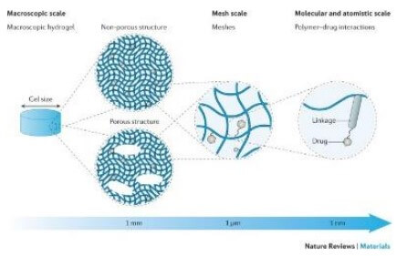
Figure 1: HydrogelsA hydrogel is a three-dimensional (3D) network of
hydrophilic polymers that can expand in water and store
a significant quantity of water while preserving
structure owing to chemical or physical cross-linking of
individual polymer chains, as seen in figure 1.
Biopolymers and/or polyelectrolytes are used to make
hydrogels.
[2]
For a substance to be classified as a hydrogel, it must
contain at least 10% water by weight (or volume).
Because of their high water content, hydrogels have a
similar degree of elasticity to real tissue. The
network's hydrophilicity is owing to the presence of
hydrophilic groups.
Hydrogels may be classified into two categories,
according to the source: those made of natural polymers
and those made of synthetic polymers
[3]. Physical, chemical, and biological hydrogels are all
possible. A change in environmental circumstances such as
temperature, ionic concentration, pH, or other factors
such as the mixing of two components can cause physical
gels to transition from liquid to gel. When compared to
other weak materials, chemical gels employ covalent
bonding to provide mechanical integrity and degradation
resistance. The gelation process in biochemical hydrogels
is aided by biological agents such as enzymes and amino
acids.
[2]
Hydrogels are utilized in a variety of applications. This
is owing to their unique architectures and compatibility
with a variety of operating situations. Hydrogels'
flexibility, which is due to their water content, allows
them to be used in a variety of environments ranging from
industrial to biological, and the biocompatibility of the
materials used to make them, as well as their chemical
behavior in biological environments, which can be
nontoxic, broadens their applications to the medical
sciences.
[2]
pH-sensitive hydrogels, temperature-sensitive hydrogels,
electro-sensitive hydrogels, and lightresponsive hydrogels
are among the numerous kinds available for various
purposes. The range of kinds makes it easier to use them
in several applications.
StrengthsTo avoid fast clearance by phagocytic cells, particle
size and surface characteristics can be tweaked, allowing
for both passive and active drug targeting.
[4]
Hydrogels are an excellent alternative for medication
delivery because of their characteristics. Controlling two
parameters, the degree of crosslinking in the matrix and
the affinity of the hydrogel to the aqueous environment in
which swelling occurs can result in high porosity hydrogel
structures. Because of their porous architecture,
hydrogels are extremely permeable to a variety of
medicines, allowing them to be loaded and released under
controlled settings
[5]. The ability to release medicines for extended periods
of time (sustainedrelease) is the major benefit derived
from hydrogels in drug delivery studies, resulting in the
administration of a high concentration of an active
pharmaceutical material to a specific site for an extended
length of time.
[2]
Improved treatment effectiveness and reduced adverse
effects by controlled and prolonged medication release at
the target location. Drug loading is quite high and may be
accomplished without the use of chemicals; this is an
essential aspect of maintaining drug activity.
[4]
Oral, pulmonary, nasal, parenteral, intra-ocular, and
other modes of delivery are also possible.
[4]
Because of their high water content, hydrogels have a
similar degree of elasticity to real tissue. They're
biodegradable, biocompatible, and injectable.
[6]
Due to their small size, capillary veins can reach the
tiniest capillaries and penetrate tissues through
paracellular or transcellular routes.
[4]
Weaknesses
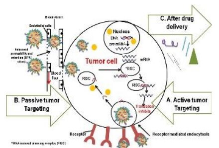
Figure 2: Polymeric nanoparticles for targeted drug
delivery system for cancer therapy
The primary drawback of hydrogel is that it is
nonadherent and may require a secondary dressing to keep
it in place.
[6]
Traditional medication delivery has certain
disadvantages, such as higher circulating drug level
volatility, more frequent dosage administration,
increased gastrointestinal discomfort, and dose-related
adverse effects.
[6]
Causes the maggots to move, causing the feeling.
[6]
Hydrogels are difficult to handle, have limited
mechanical strength, and are costly.
[6]
Polymeric Nanoparticles
Polymeric nanoparticles are made of polymers -
macromolecules made up of different monomers which form a
branched linear chain. In terms of their function and
properties, selecting specific monomers results in
specific and varying properties of the polymer overall.
The customization of polymers could be achieved through
chemical derivatization or directly on biopolymers. The
process of creating polymers may also require surfactants
- amphiphilic self-assembling organic molecules. Most of
the surfactants used for this purpose are made up of a
hydrocarbon chain that is bonded with an ionic functional
group. Alternatively, polymers that have a low molecular
weight could also be used as surfactants and are often
found in the nanocarrier formulation as stabilizers in
order to stabilize dispersion during nano-emulsion. One
advantage of stabilizers is that they reduce the surface
tension of nanoparticles, as well as increasing their
ability to bond with lipid structures. Some surfactants
have also contributed to the reduction of the diameter of
nanoparticles.
[7]StrengthsSome studies have shown that there is increased retention
of polymeric nanoparticles in the body and bloodstream,
lower cardiovascular effects, and lower nephrotoxicity and
hepatotoxicity. Another great potential of polymeric
nanoparticles is that they hinder multidrug resistance
moderated by the human ATP-binding cassette transporter
superfamily. Some proteins such as P-gp/ABCB1, BCRP/ABCG2,
and MRP2/ABCC2 are associated with the decreased efficacy
of chemotherapeutic treatment, and nanoparticle drugs have
shown potential to inhibit multidrug resistance in this
case, which leads to more effective treatment. Gold-based
nanoparticles have been used in cancer diagnosis for X-ray
imaging since they have been shown to take up X-rays more
effectively while maintaining low to no toxicity.
Gadolinium polymeric particles are used as contrast agents
in MRI imaging, also for diagnosing cancer. Many
nanoparticle drug delivery systems are being researched
today, and the ones approved for medical use at the moment
include albumin-based nanoparticles, polymeric
nanoparticles, liposomes, and inorganic nanoparticles, all
of which have great potential.
[7]WeaknessesThe main weaknesses of polymeric nanoparticles arise from
their limited shape, electromagnetic properties,
chemistry, and their wide size distribution agglomeration
state. These factors could potentially lead to poor oral
bioavailability, poor tissue distribution, and instability
during circulation. The way polymeric nanoparticles
interact with living cells may also lead to some unwanted
effects. Another issue is their uneven size during the
production process. Even though they are mostly all
spherical, the diameter of the nanoparticles produced
could vary. However, this issue could be resolved by the
use of particle replication in non-wetting templates
(PRINT), which would ensure that all nanoparticles
produced are the same size, and would permit their further
customization. Other limitations of using polymeric
nanoparticles come from their high production cost. There
are not many materials available for their production
despite them being extensively researched. The high costs
of clinical trials for nanoparticle drugs are an obstacle
to their research since this means that the pharmaceutical
companies behind it suffered economic losses in many
cases. This issue could be resolved by focusing more
closely on specific conditions for which some nanoparticle
drugs could be used, therefore limiting the scope of the
research and potentially the cost of it as well. The
manufacturing process of nanoparticle drugs also poses a
complication that prevents their mass use, but there are
some potential solutions to this such as using some
already existing methods for their mass production.
Meanwhile, new methods of production are still needed for
some new nanoparticles such as polymersomes. Additionally,
producing multifunctional nanoparticles requires more
steps of production, which is another challenge that is
yet to be overcome.
[7]
Carbon Nanotubes
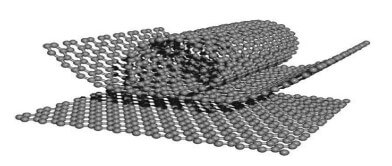
Figure 3: Carbon nanotubes’ structure.
Carbon has different allotropes (nanotubes, buckyballs,
graphite, diamond, and more), due to its 4 valence
electrons enabling it to form superstructures. Carbon
Nanotubes (CNTs) are hollow, cylindrical tubes of a
hexagonally tessellated lattice of covalent bonds
between carbon atoms, as shown in figure 3 [8]. Covalent
bonds are very strong because they need a lot of energy
to break up. In this hexagonal lattice, more than 347 kJ
of energy is required to break up every mole of C-C bond
[9].
StrengthsGiven that one requires more than 347 to break up a
single C-C covalent bond, this ID superstructure of C-C
covalent bonds is equipped with a high strengthto-weight
ratio (high tensile strength whilst being lightweight).
This high tensile strength statistically will lead to
higher levels of durability, and this is shown in the
application of CNTs to manufacture durable products such
as bicycle frames. Applying the same level of durability
will lead to more longlasting NDDSs. Lightweight
properties will make it easier for mass manufacturing,
increasing the availability of NDDSs made with CNTs to
potential patients who may benefit from it the most. Their
nanoscale enables easier cellular transportation due to
their atomic size. They can be biosynthesized at the
molecular level to make them more adaptable for a variety
of biological applications such as acting as a viable
material for NDDSs. In traditional high school biology
classes, it is taught that a red blood cell is adapted to
lose its nucleus to have a larger surface area to carry
more hemoglobin, as it takes up the shape of a biconcave
disk in doing so. This biological optimization in cellular
transportation is akin to that of NDDSs that are made out
of CNTs. This is actively demonstrated in the fact that
their high surface are-to-volume ratio maximizes their
capacity to store chemicals, allowing for optimized and
efficient transportation of larger quantities of drugs per
journey. Specific applications of CNTs to NDDSs include
the simplicity of cellular acceptance, elevated drug
insertions. These applications allow them to be
particularly valuable for cancer therapy
[10].
WeaknessesCNTs encompass poor solubility in aqueous solutions.
Given that water is an exceedingly prevalent and necessary
compound in all living organisms, CNTs' biocompatibility
with water molecules will pose a risk on the grounds of
toxicity. Moreover, its nanoscale means that less than 100
nm can make it easier for CNTs to easily escape from
phagocytic defenses, as well as an act beyond its purpose
to unnecessarily edit proteins by altering the DNA/ RNA
base pairs. As a result, an inflammatory response is
likely to be triggered.
[10].
IV. Analysis
Hydrogels, polymeric nanoparticles, and carbon nanotubes
all have characteristics that may be utilized to determine
which nano-drug delivery method is optimal based on these
properties. Sustained-release, administration methods,
mechanical strength, customizability, retention, toxicity,
biocompatibility, drug-carrying capabilities, and production
cost are all factors to consider.
Hydrogels
Because of their properties, hydrogels are an ideal
choice for drug administration. High porosity hydrogel
structures may be achieved by controlling two parameters:
the degree of cross-linking in the matrix and the affinity
of the hydrogel for the aqueous environment in which
swelling occurs. Hydrogels are very permeable to a range
of medications due to their porous design, allowing them
to be loaded and discharged under regulated conditions.
The capacity of hydrogels in drug delivery studies to
release medicines for extended periods (sustained-release)
is the most significant benefit, resulting in the
administration of a high concentration of an active
pharmaceutical substance to a specific location for an
extended period of time.
[2]
Because of their small size, they can penetrate tissues
via paracellular or transcellular pathways and reach the
smallest capillary capillaries.
[4]
They can be given in several ways, such as oral,
pulmonary, nasal, parenteral, intra-ocular, and so on.
[4]
Hydrogels have a similar degree of flexibility to actual
tissue due to their high water content. Last but not
least, they're biodegradable, injectable, and
biocompatible.
[6]
There are, however, certain drawbacks to using hydrogels
to treat NDDS. The main disadvantage of hydrogel is that
it is nonadherent, thus it may be necessary to use a
secondary dressing to hold it in place.
[6]
Hydrogels are also difficult to handle, have little
mechanical strength, and are expensive.
[6]
Overall, the benefits of hydrogels outweigh the drawbacks,
making them a suitable material for the creation of NDDS.
Polymeric Nanoparticles
Polymeric nanoparticles are macromolecules whose
properties will vary depending on which monomers they
consist of. This allows for their great versatility and
customization. An important advantage of polymeric
nanoparticles is their increased retention, lower
nephrotoxicity, and hepatotoxicity as well as fewer
cardiovascular effects. They also have the potential to
inhibit multidrug resistance inhibited by the human ATP
binding Cassette, which has allowed for more efficient
execution of chemotherapeutic treatment when combined with
polymeric nanoparticle drugs, and they have been found
useful in cancer diagnosis during MRI and X-ray imaging.
However, they can have a limited shape, size, chemical,
and electromagnetic properties which can lead to poor oral
bioavailability and tissue distribution, alongside
instability in circulation. The issue of their uneven size
during production could be solved by the use of PRINT.
Despite this, the production cost of polymeric
nanoparticles remains too high for their wider use, which
is arguably why they have not been researched to a greater
extent
[7].
Carbon Nanotubes
Carbon nanotubes are a feasible option if they are
biosynthesized to assure full biocompatibility with the
human body and its defense mechanisms. Nonetheless, due to
its high tensile strength for added durability,
lightweight properties for easier transportation and
manufacturing, and high surface area for highly optimized
drug-carrying capacities, it may prove to be the most
effective material for NDDSs (assuming it achieves a high
level of biocompatibility on average). Carbon Nanotubes
are possibly the most effective material for Nanodrug
Delivery Systems based on these criteria alone.
Overall Properties
Certain properties common to hydrogels, polymeric
nanoparticles, and carbon nanotubes can be used to
estimate which nano-drug delivery system is best based on
these properties. They can be evaluated on their
properties in terms of sustained release, administration
routes, mechanical strength, customizability, retention,
toxicity, biocompatibility, drug-carrying capacities, and
production cost. All three of the nano-drug delivery
systems discussed in this paper outperform traditional
pharmaceuticals in terms of their biocompatibility and
customizability. Hydrogels are proven to be the drug
delivery system with the best-sustained release properties
and the most versatility in terms of administration
routes, which are for example a limitation of polymeric
nanoparticles. However, polymeric nanoparticles have
increased retention and lower toxicity when compared to
hydrogels and carbon nanotubes. On the other hand, carbon
nanotubes have a very high mechanical strength (which is
an important limitation of hydrogels), are lightweight,
and have very good drug-carrying capacities. In terms of
cost, all of the nano-drug delivery systems above have
very high manufacturing costs. Therefore, it is hard to
determine which of these specific NDDSs is overall the
most suitable one, and this should be determined based on
what they would be used for in a specific situation.
V. Conclusion
We have analyzed the properties of the three nanodrug
delivery systems’ materials and evaluated them to find the
best material in terms of sustained release,
administration routes, mechanical strength,
customizability, retention, toxicity, biocompatibility,
drug-carrying capacities, and production cost. In terms of
biocompatibility and customizability, the three nano-drug
delivery technologies addressed in this study surpass
conventional medicines. Hydrogels have been shown to have
the bestsustained release properties and the most
versatility in terms of administration routes, which is a
limitation of polymeric nanoparticles, for example. When
compared to hydrogels and carbon nanotubes, polymeric
nanoparticles exhibit higher retention and lower toxicity.
Carbon nanotubes, on the other hand, have a high
mechanical strength (which is a major drawback of
hydrogels), are lightweight, and have an excellent
drug-carrying capacity. All of the nanodrug delivery
methods mentioned above have extremely high production
costs. As a result, determining which of these specific
NDDSs is the most suitable in general is difficult, and
this should be chosen based on what they would be utilized
for in a specific circumstance.As noticed from the analysis, every NDDS material is
unique for a specific use. It will ultimately depend on
the circumstance it will be used for and in. Therefore,
determining which one is the “ultimate” material is,
almost, an impossible task.
VI. References
Neuroblastoma: An Overview
Aya Al-Sayed (Maadi STEM School for Girls) Salah Mamdouh
(STEM High School for boys 6th of October) Shahd
Ali Abosreea (Maadi STEM School for Girls) Mazen Aboeed
(Gharbia STEM School) Mentor: Ali Nawar |
Roaa El-fishawy
AbstractNeurons are known to stay in G0 once they are mature. So,
it isn’t expected for neurons to form tumors. But what if
the cell starts to lose control during its differentiation
process! The type of the tumor depends on the type and the
location of the transformed cell. One of these tumors is
neuroblastoma which infects from 700 to 800 humans in the
United States annually. In that review, we will have a look
at neuroblastoma. From the definition to the treatment
passing by the causes, symptoms, clinical stages, and its
different types, the various features that affect and are
affected by the disease would be discussed.
I. Introduction
Neuroblastoma, which was first delineated within the
1800s, is the commonest cancer in babies and the
third-most common cancer in children after leukemia and
brain cancer. Around one in every 7,000 children is
affected at some time; 90% of cases occur in children less
than 5 years old, and it is rare in adults. Moreover, 15%
of cancer deaths in children are due to
neuroblastoma.Neuroblastoma (NB) is a type of cancer that originates in
certain types of nerve tissue. It most often starts from
the adrenal glands and then develops in the neck, chest,
abdomen, or spine. Symptoms embrace bone pain, a lump
within the abdomen, neck, or chest, or a painless bluish
lump underneath the skin. Neuroblastoma happens because of
a genetic mutation occurring throughout early development
or because of a mutation inherited from a person's
parents. However, environmental factors are found to be
not involved. Diagnosis is based on a tissue biopsy, in
which a small sample of the tissue is taken so it can be
examined under a microscope. Sometimes, it may be found in
a baby by ultrasound during pregnancy. During diagnosis,
cancer has usually already spread. The cancer is assessed
into low-, intermediate-, and high-risk groups based on a
child's age, cancer stage, and what cancer looks
like.Treatment depends on the severeness of the disease. It
may include observation, surgery, radiation, chemotherapy,
or stem cell transplantation. Low-risk disease in babies
has good results with surgery or simple observation.
However, in high-risk diseases, chances of long-term
survival are less than 40%, despite aggressive
treatment.
II. The Disease & Its Types
Definition
Neuroblastoma (NB): is cancer that originates in immature
nerve cells(neuroblasts); it is the most common
extracranial solid tumor of childhood. Neuroblastoma may
be found in the adrenal gland and paraspinal nerve tissue
from the neck to the pelvis
[1].
Clinical Stages
In an attempt to determine if the disease started to
proliferate or not and if so, to which level it has
spread! The staging process was the solution for that.
There are two systems: The International Neuroblastoma
Staging System (INSS) and International Neuroblastoma Risk
Group Staging System (INRGSS). In that review, the
considered one is (INSS) which takes into account the
results of surgery to remove the tumor, it has 4 stages as
the following:
Stage 1: Cancer remains in its first location on one
side of the body and it did not spread to the near lymph
nodes, all visible tumor cells have been removed
completely by surgery (although looking at the tumor’s
edges under the microscope after surgery may show some
cancer cells).
Stage 2A: The cancer is still in its original area and
on one side of the body, near lymph nodes are free of
the tumor but it cannot be removed completely using
surgical ways.
Stage 2B: Cancer may or may not be completely removed
and it has spread to the near lymph nodes on the same
side but not on the other side or any other part of the
body.
Stage 3: it does not proliferate to distant parts of the
body. But, it has crossed the midline and cannot be
removed completely, it has spread to the relatively near
lymph nodes, or it starts in the middle and grows
towards both sides of the body.
Stage 4: Cancer has spread to distant parts of the body
such as distant lymph nodes, bones, liver, skin, bone
marrow, or other organs.
Stage 4s: It is a special case when the child is younger
than 1 year old, cancer spreads to the lymph nodes on
the same side of the tumor only, the neuroblastoma has
spread to the liver, skin, and/or the bone marrow.
However, no more than 10% of marrow cells are cancer
cells
[2].
Different Types of Neuroblastoma
It is clear that clinical criteria are not always
sufficient to predict disease outcomes, and the current
international recommendation is that data regarding
biological features should be collected on all patients so
that new therapeutic groups can be defined. For example,
genetic including diploid or tetraploid,
MYCN amplification (oncogene), deletion of 11q
and 1p chromosome and gain of chromosome arm 17q or the
latter rearrangement, which can result from unbalanced
translocation of 17q to more than 20 different chromosome
regions. In addition, frequent loss of heterozygosity
(LOH) has been reported for other chromosomal regions in
neuroblastoma.
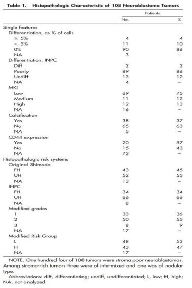
Table 1: Histopathological Characteristic of 108
Neuroblastoma Tumors
In an experiment to classify different types of the
disease, Patients presented between October 1987 and
December 1999 at any one of 11 United Kingdom and
Republic of Ireland centers, with patient ages ranging
from 1 month to 18 years. More than 80% of cases were
diagnosed within the last 5 years of the study, from
1995 to 1999. Neuroblastoma diagnosis and staging were
according to INSS the distribution of stages being as
follows: stage 1 (11 patients), 2 (10 patients), 3 (18
patients), 4 (61 patients), and 4s (eight patients).
Primary tumors from 108 patients were studied before
therapy. Then, the following morphologic features were
investigated: the amount of schwannian stroma, MKI (low,
medium, and high being, 100, 100 to 200, and . 200
mitotic or karyorrhectic cells per 5,000 tumor cells,
respectively), degree of differentiation based on
presence or absence of neuropil, ganglionic
differentiation (undifferentiated, poorly
differentiated, or differentiating), and the presence or
absence of calcification. Results of CD44 expression
were already available for 35 patients and were detected
immunohistochemically using the CD44 antibody.The genetic results detected by Fluorescence In Situ
Hybridization (FISH) through the experiment showed
different abnormalities through metaphase or interphase
such as Chromosome 17q, 1p, and MYCN status was
established in 73, 84, and 96 tumors, respectively,
whereas 11q status was only established in 15 tumors.
These results are numerically listed in table 1
below:-
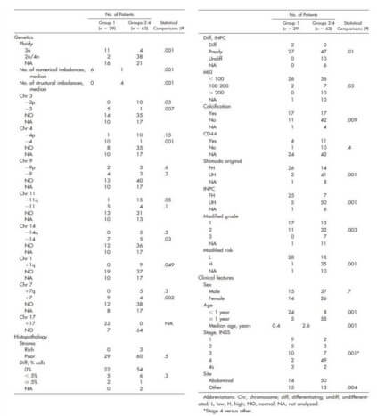
Table 2: Comparison Of Group 1 With Other Groups
Combined in Regard Ploidy and Chromosomal Imbalances,
Single Histologic Features and Histologic Risk
Classifications, and Clinical Characteristics (N=92)
As a result of the genetic abnormalities, if these
three genetic alterations were assorted randomly, it
would be possible to identify eight genetically distinct
subgroups. However, 92 out of the 96 tumors that were
unambiguously informative for all three genetic
alterations fell into the following four groups: group
1, structurally normal chromosome 17, no 1p deletion,
and no MYCN amplification (29 patients); group
2, 17q gain, no 1p deletion, and no
MYCN amplification (24 patients); group 3, 17q
gain, 1p deletion, and no MYCN amplification
(12 patients); and group 4, 17q gain, 1p deletion, and
MYCN amplification (27 patients). The four
remaining tumors had the following combinations of
abnormalities: no 17q gain, 1p deletion, and no
MYCN amplification (one tumor); no 17q gain, 1p
deletion, and MYCN amplification (two tumors);
and 17q gain, no 1p deletion, and
MYCN amplification (one tumor). 95% of all
tumors in the series were included in the first four
groups so the rest groups are neglected in the analysis.
There can be a comparison between the first group and
the groups from 2 to 4 in table 2.
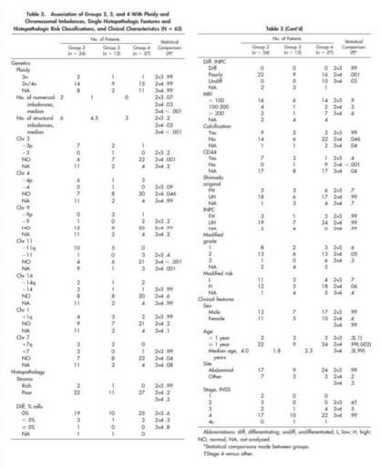
Table 3: Association Of Groups 2,3, and 4 With Ploidy
and Chromosomal Imbalances, Single Histopathologic
Features and Histopathologic Risk Classifications, and
Clinical Characteristics (N=63)
The comparison between the three groups from 2 to 4 is
shown in table 3.From the analyzed data above, there are three types of
neuroblastoma. Type 1: numerical changes and a triploid
number of chromosomes. Such tumors have been
distinguished previously as type 1 by Brodeur et al57
and by Maris and Matthay. Then, it was found that this
group is also significantly associated with losses of
whole chromosomes 4, 14, and 3, gains of chromosomes 17
and 7, low MKI, calcification (present in >50% of
cases), positive CD44 expression, absence of
undifferentiated cells, and INPC favorable
histopathology. Patients are mainly infants with
low-stage disease and with excellent survival
rates.Type 2 (genetic groups 2 and 3; progressing) is
distinguished from type 1 by having a large number of
structural abnormalities, including frequent 11q
deletion, INPC unfavorable histopathology, older age of
patients, advanced stages of the disease, and poor
prognosis.
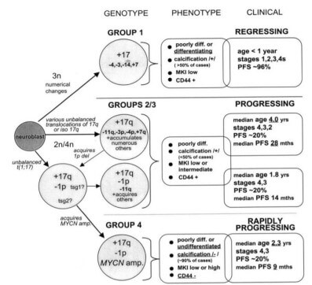
Figure 1: Neuroblastoma characteristics based on
genetic, morphologic, and clinical features.
Type 3 (genetic group 4; rapidly progressing) is
characterized by an absence of 11q deletion, few other
deletions, negative CD44 expression, and absence of
calcification. In addition, only tumors of this type
exhibited an undifferentiated morphology. Median age at
diagnosis was lower (2.3 years) and median PFS shorter
(9 months) than in type 2 tumors. Because this group is
defined by the presence of MYCN amplification and there
are no further genetic features specific to this group,
MYCN amplification is the most obvious candidate for the
observed alteration in tumor morphology. The three types
are summarized in fig1
[3].
III. The Symptoms
40% of Neuroblastoma patients who present with clinical
symptoms are under 1 year of age, less than 5% with
clinical symptoms are over the age of 10 years, and the
rest are between 1 and 10 years old.
[4]Neuroblastoma symptoms vary consistent with the tumor’s
location and the stage of the disease. Most of the time,
cancer has spread to other parts of the body by the time
signs appear.Neuroblastoma within the abdomen, which is the commonest
kind, may cause symptoms such as abdominal pain, a mass
under the skin that may not tender when touched, loss of
appetite, and Changes in bowel habits, such as diarrhea or
constipation.
[5]Neuroblastoma within the chest may cause symptoms such as
wheezing, chest pain, trouble breathing (usually in young
babies), and changes to the eyes, including drooping
eyelids, unequal pupil size, and bulging eyes or dark
circles below the eyes.
[5]Other common symptoms include a bump or lump in the neck,
chest, pelvis, or abdomen (belly), or several lumps just
under the skin that may appear blue or purple (in
infants). Fatigue, cough, and fever. Pale skin (which is a
sign of anemia). Painful, bloated belly. Weakness,
movement problems, or paralysis in the legs and feet.
[6]
Other symptoms of neuroblastoma may appear later as the
disease progresses. They include high blood pressure and a
fast heartbeat. Horner’s syndrome, which causes droopy
eyelids, small pupils, and sweating on only one side of
the face. Pain in the bones, back, or legs. Problems with
balance, and movement. Shortness of breath. Uncontrollable
eye movements or eyes that move around quickly.
[6]
IV. Diagnosis
The current criteria for diagnosis and staging of
neuroblastoma are based upon INSS ( The International
Neuroblastoma Staging System), which was initially
developed in 1986. The diagnosis of NB can be made by
either characteristic histopathological evaluation of
tumor tissue or by the presence of tumor cells in a bone
marrow biopsy and elevated levels of urinary
catecholamines (dopamine, vanillylmandelic acid, and
homovanillic acid).
[4]Specific requirements for staging include bilateral bone
marrow biopsies, computed tomography of the body
(excluding the head if not indicated), bone scan, and
metaiodobenzylguanidine (mIBG) scintigraphy. Initial
diagnostic testing should include CT or MRI (magnetic
resonance imaging) to evaluate primary tumor size and the
regional extent and to assess for distant spread to the
neck, thorax, abdomen, or pelvic sites. Brain imaging is
recommended only if clinically indicated by examination or
neurologic symptoms.
[7]
V. The Causes
Neuroblastoma occurs when immature nerve tissues
(neuroblasts) grow continuously without any control. The
cells become abnormal and continue dividing, forming a
tumor. A genetic mutation (a change in the neuroblast’s
genes) causes the cells to grow and divide uncontrollably.
Scientists aren’t sure till now what causes the genetic
mutation.
[6]Children with a family history of neuroblastoma are more
likely to develop this type of cancer. But in about 98% to
99% of the cases, neuroblastoma is not inherited. Children
born with other birth defects may have a higher risk of
developing neuroblastoma.
[6]Environmental factors are concerned with the development
of neuroblastoma (eg, paternal exposure to electromagnetic
fields or prenatal exposure to alcohol, pesticides, or
phenobarbital). However, none of these environmental
factors has been confirmed in independent studies.
[6]Neuroblastoma can also occur in patients affected with
other neural crest disorders, such as Hirschsprung
disease, neurofibromatosis type 1, and congenital central
hypoventilation syndrome.[8] Genomic linkage studies have
not found evidence of a link between Hirschprung disease
and neuroblastoma development
[8] .The co-occurrence of neuroblastoma and von Recklinghausen
disease is of interest because both disorders are
deviations of normal neural-crest cell development in the
embryo
[8].It has been noticed the amplification of MYCN oncogene in
approximately 20% of primary Neuroblastoma (NB) tumors,
and its strong association with the presence of metastatic
disease and poor prognosis
[9]. These observations suggest that MYCN contributes to the
clinically aggressive behavior of high-risk Neuroblastoma
tumors, and laboratory studies support this
hypothesis.[7]
The level of expression of MYCN has been shown to directly
correlate with the growth of NB cells in vitro as well as
in vivo. A role for MYCN in NB pathogenesis is supported
by studies demonstrating NB tumor development in
transgenic mice with targeted expression of MYCN.
[7]
VI. The Treatment
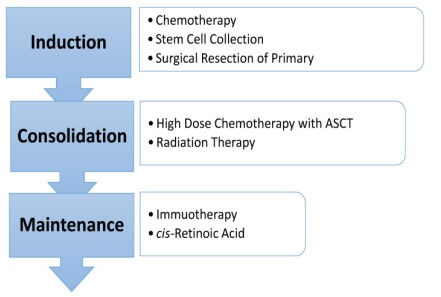
Figure 2: Stages of NB treatmentThe treatment therapy is divided into three stages, which
are induction, consolidation, and postconsolidation
(maintenance). The treatment process, as shown in figure
2, consists of chemotherapy, surgical resection, radiation
therapy, immunotherapy, and isotretinoin
[16]. Moreover, this process lasts for approximately 18
months.
First, during the induction stage, a neuroblastoma
patient will receive 5–8 cycles of intensive chemotherapy
including platinum, alkylating, and topoisomerase agents.
Second, also during Induction, patients undergo stem cell
collection. Stem cells are collected either by periphery
or bone marrow harvesting process. The harvesting process
can be either post cycle 2 of induction as in COG
protocols or as harvested at the end of the eight
induction cycles in rapid COJEC stem cells. Unfortunately,
it is common for patients to have residual bone marrow
disease at the same time as collecting the stem cell.
Therefore, the COG analyzed the after-effects of infusing
autologous stem cells whether with or without purging.
mOREOVER, surgery is another important component of the
HRNBL therapy process, but it is typically conducted at or
near the end of induction chemotherapy. This timing is
decided to maximize tumor shrinkage in an effort to
minimize surgical morbidity. Third, the consolidation
phase comes after the induction with the goal to eliminate
the remaining minimal disease. The consolidation process
is divided into two parts which are: high dose
chemotherapy followed by autologous stem cell transplant
(ASCT) and radiation therapy
[10].
Radiation therapy is only conducted once the patient has
recovered from ASCT and is associated with a high rate of
local control. The typical and standard amount of radiation
administered is 21 Gy to the primary tumor, as well as
radiation to end-induction sites of metastatic disease.
High-risk neuroblastoma needs intensive multimodality
treatment to achieve the current survival rate of slightly
less than 50%. Continued understanding of the science of
neuroblastoma will help to find factors that change the
outcomes of patients within this group, in particular
identifying high–risk neuroblastoma patients. Current
research is focusing on further intensification of therapy
to improve outcomes and evaluating the role of precision
medicine in this patient population
[10].
VII. The Treatment
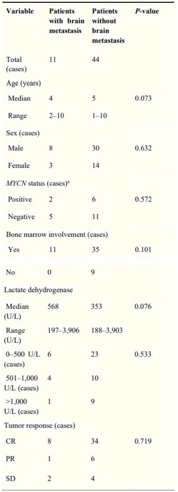
Table 4: Comparison of the clinical characteristics
between patients with and without brain metastasis.
There can be some confusion between neuroblastoma and
brain cancer. But as is shown above, the origin of
neuroblastoma is extracranial. So, what about brain
cancer?! Like any tumor, it is an uncontrolled division
for abnormal or transformed cells. Brain tumors can be
benign or malignant. Brain tumors can be classified into
two main categories: primary and secondary. The primary
brain tumor originates in the brain itself and its type
depends on the class of the transformed cell. The
secondary tumor category starts in other parts of the body
and spreads to the brain so it is known as a metastatic
brain tumor. The secondary tumor of the brain is a signal
for another cancer in the body. Here, we can find a
relation between neuroblastoma and brain tumors.In an experiment, the clinical data of eligible patients
with stage 4 neuroblastoma who were treated at the
Department of Pediatric Oncology in SYSUCC between January
2004 and May 2013 were collected. The criteria for these
cases was the clinical stage of the tumor is 4 and the age
(less than 18 years old) without brain metastasis at the
initial diagnosis, to achieve complete response (CR) or
partial response (PR) or had stable disease (SD) at the
primary sites after multidisciplinary treatment according
to the International Neuroblastoma Response Criteria and
finally, the first spread to the brain occurred after the
achievement of CR, PR or SD.Of the 106 children, 81 (76.4%) achieved CR, PR, or SD
after multidisciplinary treatments. Twelve patients with
CR received ASCT. After the completion of
multidisciplinary treatment, all patients underwent
maintenance therapy and were therefore followed up. The
5-year OS rate in patients who achieved the first CR or
good PR was 45.9%. Of the 81 patients, 55 developed
disease relapse and progression, including 11 patients who
developed brain metastasis (Table 4).Of the 11 patients with CNS metastasis, 3 died at 1, 18,
and 30 days, respectively, after giving up treatment; 8
received salvage therapy as shown in Table 4.
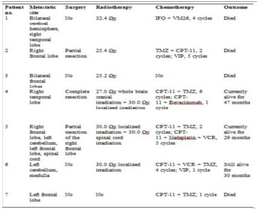
Table 5: Treatment strategies and outcomes of 8 patients
with brain metastasis.
Of the 8 patients who were treated with salvage
chemotherapy, 2 patients with MYCN amplification died: 1
died 3 months after the time of the detection of brain
metastasis (The median interval from the initial diagnosis
to the development of brain metastasis was 18 months
(range 6–32 months).), and 1 died 10 months after the
detection of brain metastasis; of the 5 patients without
MYCN amplification, 3 were still alive at the last
follow-up, and 2 died. One patient with unknown MYCN
status died (Table 5).Patient 5 received radiotherapy 2 months after surgery.
Patient 4 received radiotherapy 20 days after surgery.
(Not mentioned in table)After a median follow-up time of 24 months, 8 of the 11
patients died from tumor progression. The remaining 3
patients were alive for 29, 30, and 47 months,
respectively, after the initiation of multidisciplinary
therapy. The median OS was 25 months (range 9–47 months)
for the 11 patients. The median interval from the initial
diagnosis to the development of brain metastasis was 18
months (range 6–32 months). The median survival after the
development of metastases in the CNS was 4 months (range 1
day to 29 months).
Of the 106 patients, 11 (10.4%) developed brain metastasis,
accounting for 20.0% of 55 patients with relapse or
progression. The cooperative clinical trials in advanced
countries have shown that the overall incidence of CNS
metastasis increased from 1.7% to 11.7% in patients who were
treated with protocols from N4-N5 to N6-N7 and had prolonged
survival.From this data, it is concluded that brain metastasis for
neuroblastoma patients isn’t very common. But on its
occurrence, it results in a poor prognosis
[11].
VIII. Conclusion
Although humans have reached a high level of progress in
neuroscience and other different biological sciences, till
now they could not solve some mysteries in them such as
Neuroblastoma.We do know the disease, its symptoms, its stages, how to
diagnose it, and even the most susceptible age group to
it. But we do not know for sure what causes the gene
mutation that leads to this disease or how to prevent
being infected by it. Even the used treatment methods are
just the traditional ones used for any other similar
cancer diseases. And that means only one thing, what
humans have achieved from progress in all fields of
science is not enough, and there are always more and more
things to reach and discover. So never give up on learning
more, and applying what you have learned, so you could
discover new things and reach a new status no one has
reached before.
IX. References
Life On Mars: Detection, Habitability, and Biosignatures
Basmala Mamdouh (STEM High School for Girls - Maadi) Bouthaina
Yasser (STEM High School for Girls - Maadi) Karim Micheal
(STEM High School for boys 6th of October) Ali
Hammad (STEM High School for boys 6th of October) Mentor:
Ahmed Muharram | Radwa El-Ashwal
AbstractAstrobiology is the study of life outside Earth. The quest
for life beyond the earth requires an understanding of life
and the nature of its supportive environments, as well as of
the planetary and stellar processes. One of the first steps
in searching for life outside Earth is to find an exoplanet
that presents a supportive environment for all sides of life
by various methods. When such a planet is detected, the
scientific challenge is to determine how it can accommodate
life through the great distances of interstellar space.
Scientists evaluated and restricted the conditions of
habitability at each of these stages in their research on
Mars' terrestrial analogues, surface geochemistry, and the
likelihood of organic and inorganic biosignature
conservation. Studying these analog environments provides
crucial information for a better knowledge of past and
current mission results, as well as for the design,
selection, and planning of future Mars exploration
missions.
When we hear the term Astrobiology the first thing that
comes to our minds is space and extraterrestrial life;
however, astrobiology is a scientific field that not only
discusses extraterrestrial life but also focuses on the
environmental factors that enabled life on Earth. The
Universe contains an infinite number of planets;
nevertheless, not all of them are habitable.Scientists refer to the area in which a planet lies and
contain the factors necessary for life (like water and
suitable temperature) as habitable zone. Habitable zones
differ from a star to another due to several factors like
stars’ sizes.Mars is inevitable when discussing astrobiology and
extraterrestrial life. Mars, being the closest to Earth,
was the first place that scientists looked for life.
However, Mars isn’t a perfect planet and many obstacles
faced scientists, the main are the absence of oxygen (due
to its thin atmosphere), absence of liquid water and the
wide temperature range.The focus of searching for life was in our solar system;
however, there are many planets that lay beyond our solar
system that can be habitable, these planets are called
exoplanets. Detecting exoplanets has been a challenge to
scientists because of their distance from Earth. Several
methods for detecting exoplanets, the most important of
which are radical velocity and transit methods, have been
developed, and they all rely on AI. But how to predict
life on a distant planet without visiting it? To address
this problem scientists, use scientific models.
i. Factors that allowed life to emerge on Earth:
Many factors allowed life to emerge on Earth among them
are water, atmosphere, ozone layer, location in the
universe, magnetosphere, the moon, distance from the sun,
and temperature. We will explain two of these factors in
detail.1) Water:Water is the second most abundant molecule in space.
Water ice is widely distributed in space and can be
observed by many telescopes. Distant galaxies have water
proving that water was already present in the early
universe. Our solar system is rich in water in different
places and forms such as: in the poles of telluric planets
(e.g. Earth and Mars) or small celestial bodies like
comets (contain a significant fraction of water). In
addition, liquid water oceans may be present under ice
crusts of several moons of outer planets (e.g. Jupiter &
Saturn).
[1]There are multiple hypotheses for the origin of water on
Earth including planetary cooling (when the planet cools,
the outgassed components were trapped in an atmosphere of
adequate pressure to condense them into liquid water);
extraplanetary resources such as asteroids, comets, and
water-rich meteoroids; leakage of water stored in hydrate
minerals, and volcanic activity (water vapor resulted from
eruption condenses and turn to rain).
[2]2) Atmosphere:The atmosphere is one of the most important factors that
allowed life to emerge on Earth. Its main importance is
the presence of oxygen which is crucial for all kinds of
living organisms. Other importance of Earth’s atmosphere
includes: blocking some of the Sun’s harmful radiations
such as ultraviolet rays (which is done by the ozone
layer); moderating Earth’s temperature and weather;
maintaining the water cycle (when water evaporates, it
condenses in the atmosphere) and burning down asteroids
thus reducing their impact when hitting Earth’s surface.
Most scientists describe 3 phases in the evolution of
Earth’s atmosphere:
1st phase: Earth’s original atmosphere isn’t
like today’s atmosphere. It was probably just hydrogen
and helium and it was extremely hot with hydrogen and
helium molecules moving too fast. Their speed made them
escape Earth’s gravity and drop to space.
2nd phase: Earth’s second atmosphere was
originated from Earth itself; it came from volcanoes.
The volcanoes released water vapor (H2O), carbon dioxide
(CO2), and ammonia (NH3).
3rd phase: most of the CO2 dissolved in the
oceans. A simple form of bacteria developed so that it
could live in water on Sun and CO2 and produce oxygen as
waste material. Meanwhile, the ammonia molecules were
broken by sunlight into nitrogen and hydrogen. This
hydrogen, due to its low density, rose to the top of the
atmosphere and dropped into space leaving today’s known
atmosphere that primarily contains nitrogen, oxygen, and
carbon dioxide.
[3]
II. Habitability of Mars
Figure 1:Different habitable zones of stars that have
different stellar temperature.
At the end of the 20th century, scientists have used the
term “stellar habitable zone” to identify which planets
are mostly habitable [4]. It simply states that any
planetary surface that can allow the exitance of liquid
water is habitable according to the distance from a star
and the atmospheric pressure [4][5]. Each habitable zone
differs from one star to another according to the star’s
mass and temperature [5]. For example, if a star has a
massive mass and high stellar effective temperature, its
habitable zone will mostly be located farther out from the
star, and if a star has a small mass and low stellar
effective temperature, its habitable zone will be closer
to the star as shown in fig (1)
[5] .
𝑃 = 𝜎 ∗ 𝐴 𝑇4, where 𝑃 is the power emitted from the star and 𝜎 is
Stefan–Boltzmann constant [6]. If the power emitted from
the star, which the planet absorbs, is assumed to be equal
to the emitted power of the planet, this assumption
gives:𝜎4𝜋𝑅𝑠2 ∗ 𝑇𝑠4 ∗ (𝜋𝑅𝑝2/4𝜋𝑑2) = 𝜎4𝜋𝑅𝑝2 ∗ 𝑇𝑝4(𝜋𝑅𝑝2/4𝜋𝑑2) is the
radiated power from the star over a spherical area
(4𝜋𝑑2) that is absorbed by the crosssection
area of the planet (𝜋𝑅𝑝2)
[6] . After simplifying the previous equation, the
temperature of the planet can be calculated by the
following equation:𝑇𝑝 = 𝑇𝑠 ∗ (𝑅𝑠/2𝑑)0.5Our sun’s habitable zone has been estimated to be 0.5 AU
as close to the sun and 3 AU as far from the sun
[6]. this was calculated by using the sun’s radius and
temperature. In this range of the habitable zone, Mars
(1.52 AU away from the sun) and Venus (0.72 AU away from
the sun) are considered to be located at a very optimistic
position
[6]. However, by using a range of water temperatures (from
373K to 273K), the habitable zone was reduced to
approximately 0.52 AU to 1.04 AU, where Mars is not
included
[6].
III. From Earth to Mars
One source of life on Mars could be Earth. It's far
feasible that sun winds placing, ejecting, and propelling
microbe-laden dust and particles in the stratosphere and
mesosphere, and microbes residing in rock ricocheted into
space from Earth with the aid of meteor strikes, have again
and again infected Mars and distinctive planets and the
opposite is correct. Moreover, due to tropical storms,
monsoons, or even seasonal upwellings of columns of air,
microbes, spores, fungi, (at the side of the water, methane,
and different gases) may be transported to the stratosphere
and mesosphere wherein they may continue. As it was
proposed, solar winds and photons must disperse place-borne
organisms during the cosmos. consequently, it may be really
assumed that microbes not handiest flourish in the
troposphere, however, while lofted into the stratosphere and
mesosphere many continue to be feasible and may then be
blown into space by means of effective sun wind in which
they can stay. Even although innumerable meteorites collapse
upon striking Earth's top atmosphere, those at the least ten
kilometers across will punch a hollow within the
surroundings and hold their descent. at the same time as
meteors this duration or massive strike the ground, tons of
dirt, rocks, (microbes, fungi, algae, and lichens can be,
too), and other debris may be propelled over 100 km above
the planet and ejected into space
[7].
i. Life on Mars
Spacecraft that landed or crashed on Mars could also
transfer life from Earth to Mars. for example, after
sterilization, between 300 to 540 different colonies
(typically) alongside thousands of organisms, including
fungi, vegetative microorganisms, Bacillus, and
coccigram-positive, and microorganisms of the genus
Streptococcus and Corynebacterium Brevibacterium survived
the outer space of Mars Vikings Landers and another
spacecraft. of non-cultivated species, and the abundance of
germs and fungi even growing inside the equipment, the
number of survivors is unknown. Bacilli are still
reproductive and tolerate long-term exposure to deep
radiation in areas like Mars. Many species of Micrococcus
have also escaped extinction by living sterilized and living
on the Earth's crust, simultaneously with several traces of
staphylococcus and Corynebacterium, tolerating similar
conditions (Corynebacterium) created by Martian habitats and
cannot be eliminated from space. Streptococcus maybe a few
other species that oppose NASA's sterilization efforts and
remained active after 30 months. As a result, microorganisms
could have been present in all shipments to Mars. For
instance, because it was detected using NASA's Ultraviolet
Imager aboard polar spacecraft, a magnetosphere explosion
was caused by coronal mass ejection (CME) sequences and
strong solar rays. As a result, polar regions had enough
pressure to push oxygen, helium, hydrogen, and other gases
from the Earth's surface into the atmosphere. typically, the
weight is around or three nano pascals. while CME hit, it
jumped into 10nano pascals. therefore, it is expected that
other nutrients in the air, mold, moss, and algae have
arrived at Mars to replicate themselves.
ii. Microorganisms on Mars
Many researchers have found that the proliferation of
species, including microorganisms, algae, mold, and mildew
can continue to exist in an artificial environment such as
Mars. these survival rates increase when supplied with water
or protected by rock, sand, or gravel. It was discovered
that the Bacillus subtilis survived conditions of UV
irradiation performed by Martian, while it is suggested that
cyanobacteria collected on cold and warm islands survived
“conditions like Mars including atmospheric composition,
gravity, changing humidity (full and dry conditions) and
strong UV rays.” It has been reported that six subspecies of
the genus Carnobacterium collected in a permafrost building
in northeastern Siberia - considered analogs of the Mars
underground and nine additional species of Carnobacterium
were present all capable of thriving and growing under
conditions like Mars. In another case, four types of
methanogens (Methanosarcina barkeri, Methanococcus
maripaludis, Methanothermobacter wolfeii, Methanobacterium
formalism) survived exposing low-pressure conditions.
Cyanobacteria are also tolerant of Mars conditions. Akinetes
exposed (dormant cells are formed by filamentous
cyanobacteria) in outdoor conditions, including demolition
periods, extreme temperatures (-80 to 80 ° C), and UV rays
(325-400 nm), and showed high levels of efficiency in these
places like Mars. Eukaryotes (fungi, moss) are also
survivors. it was reported that microcolonial fungi, Knufia
perforans and Cryomyces antarcticus, and Exophiala jeanelmei
(a type of black yeast), survived, designed, and showed no
evidence of subsequent stress prolonged exposure to
conditions such as thermo-physical Mars. After developing
the dried colonies of Antarctic cryptoendolithic black
fungus Cryomyces antarcticus and exposure 16 months
mimicking scenarios like Mars on Earth's space station
determined that "C.C. The antarcticus was able to tolerate
the combined stress of external variability substrates,
space, and conditions such as Mars Survival, DNA, and
structural stability. Martian world radiation is rated at
"0.67 millisieverts a day”. This is much lower and deeper
under radiation tolerance levels of various prokaryotes and
simple eukaryotes, including resistant fungi radiation,
doses up to 1.7 × 104Gy. Fungus, moss, and many microbes are
species they are attracted to and thrive in highly
radioactive environments. Mold and radiation tolerance
bacteria will seek out and grow in radiation sources that
act as a source of energy of metabolism. Or their DNA is
damaged by radiation levels in addition to their tolerance
levels, and they can easily fix these genes due to the genes
with repair functions
[7].
iii. Lichens
Figure 2: Terrestrial Lichens, Ranging from 2 mm to 6 mm
in size.
Lichens are consisting of a symbiotic relationship
involving algae/cyanobacteria and fungi, the latter of
which is responsible for the lichens' thallus, mushroom
shape, and fruiting bodies. The specimens were observed on
Mars andidentified by experts as lichens closely resemble
Diabetes baeomyces, a fruticose lichen belonging to the
Icmadophilaceae family characterized by stalks that may
grow to 6 mm. Dibaeis baeomyces have been found growing on
rocks, in the desert sand, dry clay, and in the arctic
[7]. Scientists took photos on Mars that might be lichens,
as shown in figure 3 and made a comparison between these
photos and the others on Earth, as shown in figure 2.
Figure 3 : Most experts agreed these may be lichens. The
average size of these lichen-like specimens is estimated
to be 2 mm to 7 mm and are like terrestrial lichens.
However, if these are living organisms, or unusual
sediments fashioned by the alien environment of Mars is
unknown
[7].
The compact morphological structure of C. gyrosa (kind of
lichens), together with its thick cortex and cortex acts
as an endogenous protective defend against UV radiation.
The presence of solarscreening pigments in diverse lichen
species is set up amongst those dwelling in Arctic
habitats and excessive mountain regions. For example, the
cortex protects R. geographicum from the harsh
environmental characteristics of high mountain areas
whilst meteors strike Earth's atmosphere, they may be
subjected to extremely high temperatures for only some
seconds. If of sufficient length, the interior of the
meteor will stay surprisingly cool. The interior may also
never be heated above 100°C while spores can live to
temperatures of over 250°C. Mars has a very thin
atmosphere. consequently, many species of microbe have
developed the ability to survive a violent hypervelocity
effect and excessive acceleration and ejection into space,
the frigid temperatures and vacuum of an interstellar
environment, the UV rays, cosmic rays, gamma rays, and
ionizing radiation they could stumble upon, and the
descent via the surroundings and the crash touchdown onto
the surface of a planet
[7] .
iv. BIOMEX experiments
To do some BIOMEX experiments, many preflight checks had
been completed to figure whether the chosen samples are able
to face up to severe conditions close to space and Martian
environments. After a group of experiments on Mars-like
regolith and desiccation exams, the organisms were exposed
to experiment Verification exams (EVTs) and medical
Verification exams (SVTs). Among (EVTs) exams, vacuum,
low-strain Mars-like CO2 surroundings, extreme temperature
cycles from ways under zero to more than 40C, and UVC
irradiation were applied. The (SVTs) experiments had been
conducted inner hardware with conditions that approached the
ones of the gap surroundings at the ISS. The results
explained that the lichen C. gyrosa exhibits high resistance
and survival capacity. Neither Martian atmosphere and
surface UV climate combinations nor LEO vacuum conditions
induce a significant decrease in the activity of lichen
after exposure for 120 h. It is important to emphasize that
in our experiment the lichen thalli were exposed to
simulated Mars and real space conditions. Many the chosen
archaea, bacteria, and heterogenic multilayered biofilms
formed via many species had been observed to be the most
resistant to simulated or direct space and Mars-like
conditions. Less resistance and a considerably lower
cellular number and power regarding the Mars-like
surroundings were proven for multicellular lifestyles-forms
inclusive of the examined fungus Cryomyces antarcticus and
the lichens Buellia frigida and Circinaria gyrosa as some
studies show that the test lichen survived the 30-day
incubation in the Mars chamber particularly under niche
conditions
[8]. However, the photobiont was not able to photosynthesize
under the Mars-like conditions, which indicatesthat the
surface of Mars is not a habitable place for C. gyrosa
[10] . From my point of view, the photos that were taken were
just sediments, were not lichens. The Results so far
indicate that present Mars seems to be habitable for archaea
and bacteria over longer timescales
[9].
IV. Machine learning methods
About 4600 million years ago our solar system was formed.
We know this from the study of meteorites and radioactivity.
But you have ever contemplated a question, "Are we alone?"
Or "Is there life beyond the earth?", This is the topic of
exoplanets which are planets beyond our solar system, these
planets come in a wide variety of sizes and orbits. Some are
ginormous planets, some are rocky, some are icy and hugging
close to their stars. But how do scientists detect whether
there are exoplanets? It's not a simple task to detect
exoplanets. We may have imagined life in books and films on
other planets for centuries, but it has been a recent
phenomenon to detect actual exoplanets. Planets emit very
little or no light on their own so subsection I details
methods for detecting exoplanets. While subsection II
analyzes the advantages and drawbacks of each of these
methods
[11].
i. Exoplanets detection methods
Artificial intelligence (AI) and advanced vision
technologies are being used to strengthen instrument
capabilities and expand possibilities for detecting
exoplanets.[12]
Since then, different methods have been derived to detect
exoplanets, with the two most prolific radial velocity and
transit methods. Other methods like direct imagery, timing
and gravity are not as prevalent, but have unique advantages
and play an important role in searching for exoplanets.
[13]
ii. The Radial Velocity Method
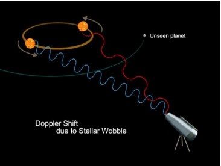
Figure 4: Radial VelocityThe radial velocity (Doppler spectroscopy) method was one
of the first methods of discovering exoplanets, with
scientists using it to discover a large number of planets
since 1988. It searches for exoplanets by using stellar
wobble, or the small orbit of a star around its
star-planet center of mass. The visible light emitted by a
star is split up into a rainbow by astronomers. This is
referred to as the star's spectra, and the gaps between
the normally smooth bands of light aid in determining the
elements that comprise the star. However, if a planet
orbits the star, the star wobbles back and forth slightly.
As the star wobbles slightly away and toward us, the lines
in the spectra will shift slightly towards the blue and
red ends of the spectrum. This is caused by the blue and
red shifts of the planet's light (FIG 4)
[14].
This wobble, though very small, can be measured as a
variation in radial velocity by modern spectrometers such as
the European Southern Observatory's (ESO) High Accuracy
Radial Velocity Planet Searcher (HARPS) spectrometer at the
La Silla Observatory in Chile, which has observed more than
451 wobbles during its Guaranteed Time Observations (GTO)
planet search program. Scientists can determine the velocity
of the star v* and the period of the orbit T by observing
this wobble. With an estimate of the star's mass M* by
spectral type and the inclination of the orbit j(orbit) by
stellar photospheric absorption lines, the star's velocity
can be expressed as follows:
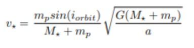
where M(p) denotes the planet's mass and a denotes the
radius of an assumed circular orbit. Kepler's third law of
planetary motion also provides the period:
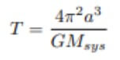
where the mass of the system M(sys) = M* + M(p). The
orbit radius of the planet is unknown, but can be solved
for by combining Equation 1 and Equation 2:
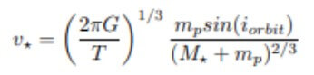
As a result, scientists can determine the mass of an
orbiting planet indirectly. Scientists have had great
success detecting planets using the radial velocity method,
especially when the planet's mass was large in comparison to
the mass of the star, causing an easily detectable stellar
wobble. This method, however, has limitations. Because
stellar wobbles are typically small, radial velocities are
difficult to observe at great distances and are thus only
used to study nearby stars. Furthermore, false signals are
common when observing multi-planet and multistellar systems
where the system's center of mass is unknown and long,
continuous observations are required to distinguish stellar
bodies. Despite these difficulties, the radial velocity
method remained the most common method of detecting
exoplanets until 2014, when it was surpassed by transit
photometry method
[15].
iii. Transit method
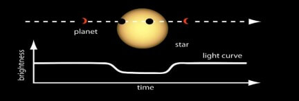
Figure 5: transit methodThe transit method has now surpassed radial velocity
searching in several new planets since it was first used
in the mid-2000s[16]. Planets don't emit light, but host
stars they orbit do. Taking this into consideration, NASA
scientists conceived the Transit method, in which a
digital-camera-like technology is used to detect and
measure tiny dips in a star's brightness as a planet
crosses in front of a host star, the light from the star
dips very slightly in brightness. By detecting these
incredibly tiny dips in brightness, scientists can confirm
that a planet exists as shown in figure 5. By observations
astronomers can calculate the ratio of a planet's radius
thereto of its star.
(Todo!!!!!!!!!!!!!!!!!!!!!) Figure 3 planet Radii in the
Habitable Zone
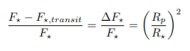
By changing the stellar flow F* and estimating the
stellar radius R* of other measurements, the radius of the
planet Rp can be determined
[17]
2002.
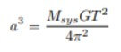
Over multiple observations, the period T can also be
observed, which enable us to estimate the radius of
planetary orbit using the third law of Kepler:
Although transit photometry has been extremely successful
in discovering large numbers of exoplanets through missions,
such as the Kepler mission, which identified three hundred
forty planetary systems with 851 planets that were validated
for more than 99%, it still has limits. Whilst transit
surveys can scan large areas of the sky that contain
thousands of stars at once, they can only observe planets
that intersect astronomer and star perfectly, thus lacking
many stellar systems which could contain planets of
interest. False positives are also common when small
variations in stellar brightness occur due to natural
phenomenon such as pulsations of red giant branch stars, and
studies have found that up to 35% of transit candidates turn
out to be false-positives
[18]. On balance, the transit photometry method has been used
effectively in missions with the 2005 Spitzer Space. Also,
there are other opinion says that the instruments required
for this minor blip seem to be very susceptible. You can see
how difficult it is to detect a planet from lightyears away
if you can imagine the dip in light from a massive
searchlight when it crosses a small ant. Another drawback of
the transit method is the fact that the distant solar system
must be in a preferable angle to our own Earth perspective,
If the angle of the distant system is only slightly askew,
no transits will happen!
[19]
iv. Planetary detection Less prolific methods
Other methods for detecting exoplanets, in addition to
radial velocity and transit photometry, including direct
imaging, timing, and gravitational microlensing. In direct
imaging, scientists use infrared imaging to examine the
thermal radiation of exoplanets. Typically, we can only
observe large, hot planets both close to and far from their
stars, and imaging Earth-like planets necessitates high
levels of optothermal stability. Timing methods take
advantage of niche properties of certain exoplanets and can
involve pulsars (neutron stars) that emit radio waves on a
regular basis, changes in eclipsing binary minima that
detect planets far from their host star
[20], and transit timing variations caused by interplanetary
gravitational pull [21], this method is also limited in
applicability since so few exoplanets acquire those
characteristics. Finally, gravitational microlensing
examines the marginal effect of a planet on the
gravitational lens behind a star. When a foreground star is
between the observer and the source star, the foreground
star magnifies the light from the source star, which allows
the planet to make an observable contribution to the lens.
This method is actually more susceptible to the detection of
large orbital exoplanets and is most effective for planets
between the Earth and the center of the galaxy where many
background stars occur, but the required gravity alignment
is rare and cannot be repeated. Though these detection
methods are more specialized and are not applicable to as
many stars, they can give highdetailed data compared to the
methods of radial velo city and transit photometry.
v. Analysis and Comparison of Methods
Figure 6 Radial velocity and transit exoplanetary
discoveries by year through 2017. Radial velocity, blue;
transit photometry, red. In 2014, the number of planets
observed by transit photometry surpassed the number of
planets observed by radial velocity. Figure created
using
exoplanets.org.
Each detection method uses different concepts of
astronomy to deduce the characteristics of exoplanets.
Whilst the most proficient methods to date have been
radial velocity and transit photometry (FIG. 6), other
methods have also been important in the search for a
habitable planet (TABLE I). The radial velocity method is
extremely versatile and applicable to a wide range of
planets, though they must be close to the observer. The
transit photometry method has observed a large number of
stars, but it has a high false positive rate. direct
imaging though only applicable to a small number of stars,
reveals explicit, unequivocal evidence of exoplanets.
Timing methods are similarly limited in their
applicability, but they can provide accurate data for
planets that are extremely distant. Planets with large
orbital radii can be detected using gravitational
microlensing, but measurement alignments are unlikely and
cannot be repeated. In terms of observed properties, the
transit photometry method provides the radius of an
observed planet. Though all methods can be used
independently, more than one technique is used to collect
multifaceted data on planets of interest in the most
accurate searches. The radial velocity and transit methods
used on the same star can for determine mass and radius,
yielding density that indicates the composition and
habitability of that planet; and the transit timing can be
used to validate exoplanets found through the transit
photometry method in multi-planetary systems. Discovering
a planet with one method can often make it easier to
observe its other properties with another.
[22]
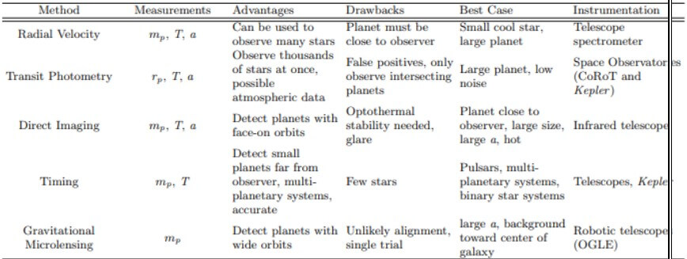
TABLE 1. Measurements, advantages, drawbacks, best cases,
and instrumentation for the radial velocity, transit
photometry, direct imaging, timing, and gravitational
microlensing methods of detecting exoplanets. M(p), mass
of planet; R(p), radius of planet; T, period of orbit; a,
length of semi-major axis of orbit.
V. Exoplanet Hunting: Using Machine Learning to Predict
Planetary Atmospheric Chemical Reaction Rates
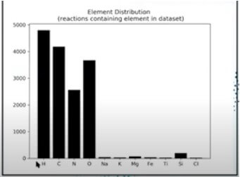
Figure 7 : Elements in data set [ P. B. Rimmer and S.
Rugheimer, "Hydrogen cyanide in nitrogen-rich
atmospheres of rocky exoplanets," Icarus , vol. 329, pp.
124-131, Sep. 2019.]
We have known that thousands of exoplanets could host
life, But the skeptic in us says “How can we make
predictions about exoplanets?” Or “How can we know that
these exoplanets can host life without being able to visit
them or having such a limited information about them?” The
answer is scientific models. Scientists use models to
interpret data and explain what kinds of conditions might
exist on planets that could explain their observations.
Atmospheres are important potentially observable features
of exoplanets, so atmospheric models are one of the most
important types of models for exoplanets. Their
composition can reveal biological activity as well as
information about other planetary processes and events.
Exoplanetary atmosphere models will aid in understanding
of observations. However, these models are heavily reliant
on input parameters such as reaction rate constants or how
fast species react. Unfortunately, databases of such rate
constants are insufficient and only contain information
for a limited set of reactions that have been studied in
isolation in laboratories. These known reaction rates may
not be sufficient to accurately model planetary
atmospheres containing reactions with unknown rate
constants or that are impractical to measure in the lab.
To address this problem, Scientists applied a series of
machine learning techniques to STAND-2019, an atmospheric
chemical network detailed in Rimmer et. al, 2019, to
explore how well machine learning can predict reaction
rate this is not a substitute for actual data, but these
forecast or estimated constants could help scientists to
see more in the right direction. First, they use known
reaction rates (FIG 7) and then feed those into an
algorithm to predict reaction rates using an atmospheric
chemical reaction dataset called STAND-2019, and because
the model is highly dependent on the type of data given to
it, it will be better at predicting things it has seen
before. By determining what is in the dataset on which the
algorithm is based, there are approximately six thousand
reactions and 11 different types of elements, as shown in
(FIG 8) As a result, the dataset is skewed heavily toward
hydrogen, carbon, and nitrogen. It also includes
reactants, products, variables for calculating the rate
constant, and reaction flags that indicate the type of
reaction.
[23]
Figure 8: Chemical reaction rates they know
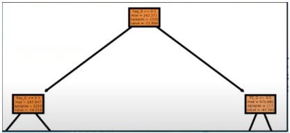
Figure 9 Decision Tree Algorithm [ P. B. Rimmer and S.
Rugheimer, "Hydrogen cyanide in nitrogen-rich
atmospheres of rocky exoplanets," Icarus , vol. 329, pp.
124-131, Sep. 2019.]
Following that, they add useful features to the data,
such as information about each reaction gleaned from
chemistry knowledge. After creating features for the
dataset such as reaction mass, number of species involved,
and type of species involved, all of them are converted to
numbers so that the algorithm can read them and use them
to make predictions. But how are these features used? As a
result, the entire dataset is divided into two parts: a
training set (which is typically larger) and a testing set
(which is smaller). In the training set, the algorithm
sees both features and constants; in the testing set, the
algorithm only sees features and then predicts constants
based on those features. But how does this help with
predicting? Scientists used the decision tree algorithm,
which is part of the supervised learning algorithm family,
to accomplish this. The decision tree algorithm, unlike
other supervised learning algorithms, can also be used to
solve regression and classification problems. The goal of
using a Decision Tree is to build a training model that
can predict the class or value of the target variable by
learning simple decision rules from prior data (training
data). As a result, it divides the data into more
machine-readable sections, such as is this column less
than or equal to this value. Because the values and splits
are chosen at random, this algorithm performs well. The
algorithm generates many of these trees using the training
set, then runs the testing set through all these trees and
averages the values from each tree to create the final
prediction (FIG 9) [24]. Using this method can lead
scientists to preliminary results, which show that the
algorithm works better than using the mean of the data to
predict rate constants(TABLE 2), but there is still room
for improvement.
[25]
Table 2: To measure how good are their prediction
A Machine Learning Approach to Forecasting Weather on Mars
After all that, does this mean that Mars is unhabitable? A
destructive Cosmic event could at any given moment
completely erase all life on Earth. Extinction may be
inevitable as well as pressure on earth's biosphere. Going
beyond our domain, far beyond the sun and the Earth's
planet, Mars can be a means of reducing the risk of human
extinction. Despite this high goal, hostile Martian weather
conditions vary considerably from those on earth and it
would be inestimable for successful colonization to predict
these conditions. In particular, the extremely wide
temperature range (20°C to -73°C) is a significant barrier
to implementing human infrastructure. Traditional weather
prediction techniques used on Earth, such as numerical
weather prediction (NWP), are extremely computationally
intensive and, due to the volatile physical conditions of
the Earth's atmosphere, are not always stable. Beyond that,
NWP cannot be easily applied to forecast Martian weather. To
overcome this barrier, supervised machine learning—a method
resistant to an incongruity of atmospheric conditions that
leads to uncertainties of NWP—is ideal for the Martian
atmosphere, which is even less understood. The Mars' Gale
Crater weather data has been collected and available via
their Planetary Data System by a NASA Curiosity Rover. To
predict a mean temperature using Curiosity's data two types
of machine learning algorithms will be implemented: linear
regression and artificial neural networks. These paradigms
have been selected due to the ability of each to take into
account the mixture of nonlinear and linear weather
reactions. The weather data will be used in the two models
of ~3 Mars years to predict ~1 year of test data. The medium
and medium absolute errors are calculated, and the models
are compared. for the mean temperature prediction
[7].
In conclusion, not all planetary surfaces in the habitable
zone have a hospitable environment, and there might be
worlds outside the habitable zone that could have a
hospitable environment
[4]. From what is known from the collected reports, there was
some evidence collected from instruments in orbit and on
Mars’s ground that liquid water existed on its surface. In
addition, detected evaporite minerals show at least
ephemeral liquid water at Mars’s surface. However, the
present thin atmosphere of mars cannot support the existence
of liquid water on its surface. If Mars was more massive
than it’s now, providing a thicker atmosphere, and
experienced more greenhouse effects, it would have been more
habitable and suitable than the Earth
[6]
.
VI. Conclusion
By identifying the past and potentially current
environments in our solar system, detecting planets around
other stars will be inevitable. In addition to
understanding the origin of life, its evolution and
diversification on Earth much more closely. Combined with
the measurement of the host star's radial velocity, it can
produce the planetary density that can be indicative of
its development history. In the following years, the
discovery of new transiting planets through land and space
projects will increase understanding of these objects.
Scientists are beginning to conduct comparative
planetology and soon new insights will be provided into
the genuine mass distribution of these objects. There is
also a scope to improve chemical reaction rate prediction.
It is humankind's nature to explore surroundings if it is
possible. Spacecrafts were first sent to the planets forty
years ago, and since then, the art of space exploration
has become increasingly refined, and discoveries have
multiplied. Theoretically, scientists now can reach and
explore any object in the solar system. Mars is at the top
of the list of exploration targets. Most hospitable, and
most intriguing of the planets.
VII. References
Cancer Treatment: Treatment of Leukemia using HIV as a Viral
Vector
Ziad Nasr EL-Dein | Rashad Abdeltawab | Moneer Mohamad (STEM
High School for boys 6th of October) Mentor:
Saif Taher (STEM High School for boys 6th of October)
AbstractIn this article, we will examine a novel cancer treatment
approach that involves the use of viral therapy. The main
idea of the article is the use of HIV (which in normal
circumstances targets T-cells) as a vector to transfer
genetic information to a patient. HIV is the most common
vector for the transfer of genetic information into a
malignant cell, and it is also the most dangerous. These
genetic components will assist the patient's T-cells in
recognizing and damaging the malignant cells in his or her
body. It may seem far-fetched to think about using a virus
to treat cancer, yet it is a proven fact. When it comes to
cancer treatment, HIV has proved its potential to deliver
precise genetic information to the nucleus. This article
will discuss the treatment's mechanism, the rationale for
using HIV, specifically as a vector, and the CAR-T therapy,
among other topics. Leukemia is the case of study of this
article. Aside from that, it provides necessary foundation
knowledge regarding HIV's behavior and binding mechanism as
well as concerning viral vectors and CAR-T therapy.
I. Introduction
There were various types of leukemia therapy available
many years ago. These therapies differ in their
interaction with or targeting of cancerous cells. The kind
of leukemia, the patient's age and health state, and
whether or not the leukemia cells have moved to the
cerebrospinal fluid will all influence treatment.
Chemotherapy, for example, is the most common method of
treatment for leukemia. Chemicals are used in this
medication therapy to destroy leukemia cells. As well as
being given orally through pills, chemotherapy can also be
administered intravenously through a catheter or
intravenous line. Another treatment used is biological
therapies that assist the immune system in identifying and
attacking aberrant cells. Antibodies, tumor vaccines, and
cytokines are examples of biological treatments for
cancer. However, instead of killing all quickly developing
cells, targeted treatments are preferred to use. They
interfere with a specific feature or function of a cancer
cell. As a result, the targeted treatment causes less harm
to normal cells than chemotherapy. Moreover, radiation
treatment is another option for curing leukemia. It
targets cancer cells with high-energy radiation. In
addition to treating leukemia that has progressed to the
brain, radiation therapy can also be used to treat
leukemia that has collected in the spleen or other organs.
There are other treatment approaches for leukemia, but
these are the most important ones. Patients might get
either one treatment or several medications depending on
the kind and the severity of leukemia. In order to deal
with leukemia, our research concerns on identifying
leukemia and its types. Leukemia, cancer of the blood
cells, affects myeloid and lymphoid in the bone marrow.
Unlike other sorts of cancers that cause tumors with
harmful effects in various parts of the body, leukemia
cells travel freely in the bloodstream. Their harm,
however, lies in their dysfunctionality. A huge amount of
useless blood cells and platelets multiply constantly in
the bone marrow, clogging it up and decreasing normal
blood cells.The four main types of leukemia depend on which blood
cell type they infect (myeloid & lymphoid), and the time
of infection in the life-cycle of the blood cell (acute &
chronic). Acute Myeloblastic Leukemia occurs in
myeloblasts, marrow stem cells that specialize in RBCs,
WBCs, and platelets. Acute Lymphoblastic Leukemia occurs
in lymphoblasts, that specialize in T-cells, B-cells, and
natural killer cells. The infected blasts lose their
ability to mature and remain as useless oversized cells.
Because of their size and number, they easily clog tissues
upon infiltrating them, causing hepatomegaly,
splenomegaly, pain in the bones, and others. A decrease in
the number of normal cells, on the other hand, leads to
anemia, frequent infections, hemorrhages, etc. Our
approach is to use HIV as a based vector to treat cells.
It might seem as madness to use a virus to treat cancer!
It is really science madness. However, our findings have
ensured that the there is a capability to use HIV as a
treatment for leukemia.
II. HIV
HIV-1 and HIV-2 are members of the Retroviruses family,
under the genus Lentiviruses. HIV (human immunodeficiency
virus) is a virus that affects the immune system of the
body. It is made up of two strands of RNA, 15 different
types of viral proteins, and a few proteins from the
previous host cell it infected, all encased in a lipid
bilayer membrane. These chemicals, when combined, infect a
kind of white blood cell in the body's immune system known
as a T-helper cell (also called a CD4 cell). These
important cells keep us healthy by defending us against
infections and illnesses. From the earliest steps of viral
attachment through the ultimate process of budding, each
molecule in the virus plays a function in this process.
HIV is incapable of reproducing on its own. Instead, the
virus binds to and merges with a T-helper cell. It then
takes over the cell's DNA, replicates itself within the
cell, and eventually releases more HIV into the
bloodstream. HIV is important in our study since it is the
lentiviral vector that attaches to T-Cells and delivers
the antileukemia transgene.
HIV structure
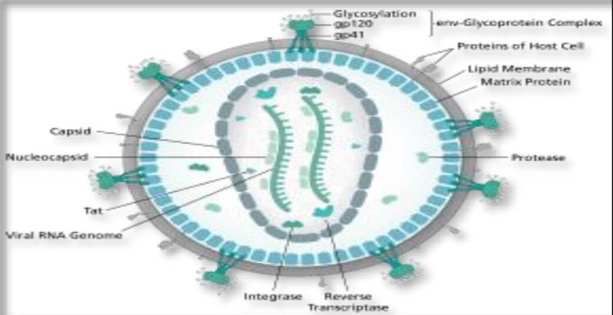
Figure 1 shows HIV structure.HIV is made up of two fundamental components: a
ribonucleic acid (RNA) core called the genome and a
protein component called the capsid that covers the
genome. The genome contains the virus's genetic
information, whereas the capsid gives the viral shape and
protects the genome. The HIV genome is made up of three
main genes: group specific antigens (Ags) or capsid
proteins (gag); polymerase gene proteins (pol), which
include reverse transcriptase, protease, and integrase
enzymes; and envelope glycoproteins (env)
[2]. (As shown in figure 1). The capsid is made up of
capsomeres, which are subunits. As of today, the HIV
genome is made up of nine genes, which code for a total of
fifteen virus-encoding proteins. Some essential structural
proteins are encoded by the genes of all retroviruses,
including HIV. A number of nonstructural ("accessory") HIV
genes are also found. We've referred to them as Gag, or
group specific antigen, viral enzymes (Pol, polymerase),
and virion environment glycoproteins (Ve) when they're
generated as viral polyproteins (envelope)
[1] . This is the virus's general structure. It has a huge
influence on its binding method and how it interacts with
cells, which we will discuss in the next section.
Mechanism of HIV binding
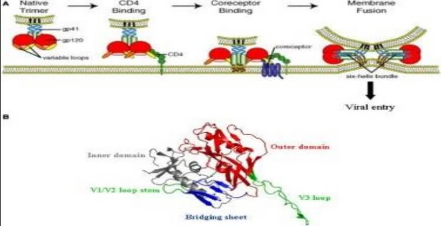
Figure 2 shows Mechanism of HIVVirions must bind to the target cell, which is done by
the viral envelope (Env) protein or host cell membrane
proteins integrated into the virion via any of a variety
of different cell attachment factors. Attachment can be
generic, with Env engaging with negatively charged
cell-surface heparan sulphate proteoglycans, or more
selective, with Env binding with 47 integrin or pattern
recognition receptors such as dendritic cell–specific
intercellular adhesion molecular 3-grabbing non-integrin
(DC-SIGN) (as shown in figure 2). HIV attachment to the
host cell by any of these parameters is expected to bring
Env into close proximity with the viral receptor CD4 and
coreceptor, boosting infection efficiency
[3] . As result of HIV hides from the body's immune system in
CD4 cells, it targets them via the mechanisms described
above.
III. CAR-T Therapy & leukemia
Chimeric antigen receptors are specifically engineered to
fit a certain antigen such that it enables the T-cells to
latch onto the targeted antigen. Consequently, for a given
disease, CAR's target antigen should behighly expressed in
most cells/viruses that cause the disease while not having
much correspondence to normal tissues, saving them from
severe damage
[4].CAR T-cell therapy has been most commonly used in
treating hematological cancers, especially in acute and
chronic B-cell leukemia. The targeted antigen in B-cells
is the CD19 molecule, a transmembrane protein that is the
most expressed in all B-cells, making it a biomarker for
them
[2]. Recent treatment trials observed a 70–90% complete
remission upon infusion of CD19 CAR T-cells, presenting
the efficacy and feasibility of the therapy
[5].
On the other hand, 10–20% of ALL patients have a CD19-
relapse after treatment; this can be attributed to
downregulation of the CD19 antigen and mutations that
occur to the gene, leading the tumor to escape from the
targeted detection
[6]. Possible solutions are infusing a different CAR target;
infusion by CD22 targeted CAR T-cells has recently shown
positive results on relapsed CD19- patients.
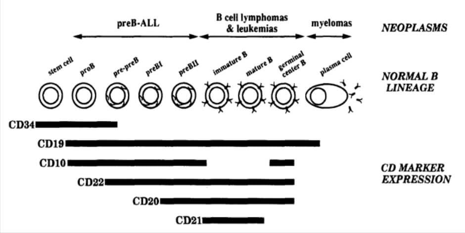
Figure 3. shows the expression of receptors in Bcells.
Theoretically, applying the therapy on two tumor
indicators could lengthen the duration of remission.
Dual-signaling CAR-T and tandem CAR-T are two innovative
techniques that have been developed. Dual signaling CAR-T
cells are made up of two different CAR molecules with two
different binding domains that target two different
proteins of the same tumor. Tandem CAR-T cells, on the
other hand, have one CAR molecule that expresses two
different binding genes at the same time. CAR-T cells that
target other B cell marker antigens, such as CD20 and
CD22, are thus regarded to be good targets for dual or
tandem CAR-T therapy for CD19- relapses and have shown
positive effects
[7]
(as seen in figure.3). However, whether the therapy would
cause an antigen loss simultaneously for both genes is
still unclear. Going beyond B-cell leukemia/lymphoma
(diffuse large B-cell lymphoma, primary mediastinal B-cell
lymphoma, high grade B-cell lymphoma, transformed
follicular lymphoma, and mantle cell lymphoma.), CAR-T
therapy has also been implemented on multiple myeloma
patients
[8]
and solid tumor solutions are being actively researched
[9].
As CAR T-cell therapy has achieved remarkable efficacy in
the treatment of hematological malignancies, researchers got
inspired to expand the application of CAR-T-cell therapy to
other medical conditions like infectious diseases,
autoimmune diseases, senescence-associated pathologies,
etc.
CAR T-cell therapy for HIV infections
According to UNAID: Acquired immunodeficiency syndrome
(AIDS), a medical condition caused by the HIV virus, has
caused about 36 million deaths since it was discovered in
1980 and has a death count of 680,000 in 2020 a reduction
by 64% since the peak in 2004 and by 47% since 2010. 37.7
million People are currently living with AIDS.Antiretroviral therapy is the standard treatment for AIDS
at the moment. The plasma HIV viral load could be
significantly lowered or perhaps undetectable if properly
applied. Despite success, new information suggests that
cryptic viral replication still exists, immunological
dysfunction is common during treatment, and HIV could
resurface after years of undetectable viremia.
Furthermore, antiretroviral therapy's side effects are
considered to increase the chance of non-AIDS mortality.
As a result, the current therapeutic techniques' efficacy
is far from sufficient, and led to research of CAR Tcell
therapy for HIV infections.Immunotherapeutic methods to treat HIV infection have
been hindered by features peculiar to HIV infection, such
as the high mutation rate of reverse transcriptase, which
allows for the rapid generation of immune escape mutated
variants and viremia recurrence.To destroy HIV-infected cells, first-generation antiHIV
CAR methods used the CD4 receptor's extracellular region
as the targeting domain, along with the CD3ζT cell
signaling domain. Later research indicated that CD4-based
CARs make gene-modified T cells vulnerable to HIV
infection [9]. Several ways to improve HIV-specific CAR-T
cells have been tested to address this constraint,
including the construction of tandem CAR-T cells, or CAR-T
cells expressing a CD4 CAR in combination with either a
gp41-derived fusion inhibitor or CCR5 ablation. AntiHIV
CARs have also been reengineered with 4- 1BB or CD28
stimulatory signaling patterns to improve their in-body
persistence and potency when used in combination with
soluble broadly neutralizing antibodies (bNAbs) that
identify nonredundant gp120/gp41 antigen epitopes
[10].
IV. Viral vectors
Figure 4 shows the virus introducing its gene to the
host cell.
Viral vectors are tools are designed to deliver
therapeutic genes into the cell. Viruses are used in this
process to transport nucleic acid into the genetic makeup
of the cell. Viruses naturally evolved vehicles that
transfer their gene to the host cell. This ability makes
the viruses best suited for this process. The ligand,
which is a molecule of the virus has the capability to
bind to proteins. Concerning the virus, the ligand is a
protein in the outer coat of the virus that binds with the
receptor protein of the cell. Each cell type has a
different receptor protein. Therefore, specific viruses
can be used to deliver the desired gene to the target cell
type. Once the ligand of the virus attaches to the
receptor protein, the virus introduces its gene DNA or RNA
to the host cell (as shown in figure 4).
Types of viral vectors and their mechanism
Figure 5 represents adenoviral infection.
Specific viruses are used to transfer genetic materials
to specific cell types These include adenoviruses,
retroviruses, poxviruses, adenoassociated viruses,
baculoviruses, and herpes simplex viruses. Now, we will
explain some of these viral vectors. First, the
adenoviruses species are the most effective for creating a
viral vector for the use of gene therapy. The globular
knob domain of the viral capsid has a high affinity for
adenovirus receptors (CAR). The CAR is found on a variety
of cells throughout the human body. The virus-host cell
that affinity between the fibrous knob and the CAR is
heightened by the interaction of the penton base protein
with secondary cellular receptors. Then, the virus
introduces through the cell membrane via receptor
receptor-mediated endocytosis. After that, the genome
inserts the protein capsid and makes its way into the host
cell nucleus (as shown in figure 5).
HIV as a viral vector
Figure 6 shows the HIV infects monocytes by interacting
with the CCR5 co-receptor
The vector used in the treatment discussed in this paper
is Human Immunodeficiency Virus (HIV). HIV in normal
attacks the immune system especially the T-cells (a type
of white blood cell that is responsible for killing
foreign bodies such as viruses, bacteria, and cancer
cells). HIV infects T cells via high-affinity interaction
between the virion envelope glycoprotein (gp120) and the
CD4 molecule. The infection of T cells is assisted by the
T-cell co-receptor called CXCR4 while HIV infects
monocytes by interacting with the CCR5 coreceptor (as
shown in figure 6). The mechanism of using HIV as a vector
is inserting the gene material we want to transfer to the
t-cell. The RNA is removed to make the virus safe for the
patient.
V. The mechanism of the treatment
In this section, we explain why HIV is used in this
process. In addition, we elaborate on the process of using
HIV as leukemia treatment
i. Why HIV
First, the normality of HIV that targets the T-cells. HIV
directly infects T cells via high-affinity interaction
between the virion envelope glycoprotein (gp120) and the CD4
molecule. The infection of T cells is assisted by the T-cell
coreceptor called CXCR4 while HIV infects monocytes by
interacting with the CCR5 coreceptor. Later than, the HIV
gene transfers to the nucleus of the T-cell. Therefore,
using HIV will be efficient to transfer the genetic material
to the T-cell. Second, HIV is better suited to use as a
vector. This is because Lentivirus-based vectors can infect
nondividing and slowly dividing cells.
ii. Genetic Materials
First, a sample is taken from the patient immune cells.
Then, the gene for a special receptor that binds to a
specific protein on the patient’s cancer cells is added to
the T-cell of the patient. This receptor is called CAR
T-cells. CAR T-cells are not normally found in the immune
system. The protein finds in the body of foreign bodies
helps the immune system to recognize these bodies. Each
protein has a particular receptor that can bind to it. These
proteins are called antigens. In other words, we can
describe the relationship between antigens and immune
receptors is like a lock and key. Just as a lock can only be
opened with the right key, each foreign antigen has a unique
immune receptor that binds to it.Since different cancers have different antigens, each CAR
is made for specific cancer's antigen. For instance, in
certain kinds of leukemia, the cancer cells have an antigen
called CD19. The CAR T-cell therapies in order to treat
these cancers are made to attach to the CD19 antigen and
will not work for cancer that does not have the CD19
antigen.
iii. Making the CAR T cells
After the white cells are removed, the T cells are
separated and altered by adding the gene for the specific
chimeric antigen receptor (CAR). This makes them CAR -T.
Then, these cells are grown and multiplied in the lab. It
can take several weeks to make the large number of CAR-T
needed for this therapy.
iv. Preparing HIV and Infection
HIV is in simplest terms a vector. By taking out all the
viral RNA inside, HIV becomes harmless. HIV is then exposed
to CAR-T cell and injects back to the patient. HIV start to
target both the cancerous and not cancerous B-cells
(lymphocytes that are responsible for making antigens in the
body). Once the CAR -T bind with B cells, they start to
increase in number and can help destroy even more cancer
cells. T Cells then multiply and create a memory in the body
to kill any future cancerous B-cells, preventing any type of
leukemic cancer to form.
VI. Conclusion
Viruses have positive aspects as they have negative
aspects. We can use viruses in the treatment of deadly
diseases such as Leukemia cancer (a type of white blood
cells cancer). By new technologies such as viral thereby,
we can use these viruses to introduce specific genetic
materials to the human body. The viruses play the role of
transportation HIV in normal target the T-cells (type of
white blood cells). Therefore, HIV can be used to transfer
the genetic material that the T-cells need to fight
against the cancerous cells in the immune system. In our
case of study, we are working on leukemia disease. In this
case, the T-cells themselves are cancerous. To treat this
type of cancer we need certain receptor that make the
T-cell able to recognize the cancer cell by binding to it.
This receptor called CAR-T. First, the T-cells are taken
from the patient. Then, the CAR-T receptor is added to the
T-cells in the laboratory. Finally, the modified T-cells
exposed to HIV. After that the HIV is introduced to the
patient. The modified T-cells become able to recognize the
cancerous cell and fight them. In addition, T -Cells then
multiply and create a memory in the body to kill any
future cancerous B-cells, preventing any type of leukemic
cancer to form. There are future fields of research and
development that we recommend to be done. To begin, since
the precise sequence of genetic material is not unknown,
attempts must be made to ascertain it. Additionally, CAR-T
treatment requires further development before it can be
used on human cells. Moreover, because the method of HIV
insertion is somehow vague, experiments on mice must be
conducted prior to human use. Also, we recommend using
other viral vectors like adenoviruses and herpes simplex
virus to be used in other therapies. Overall, viral
vectors appear to be the key to curing many diseases.
Viral vectors will be used in several therapeutics in the
next years.